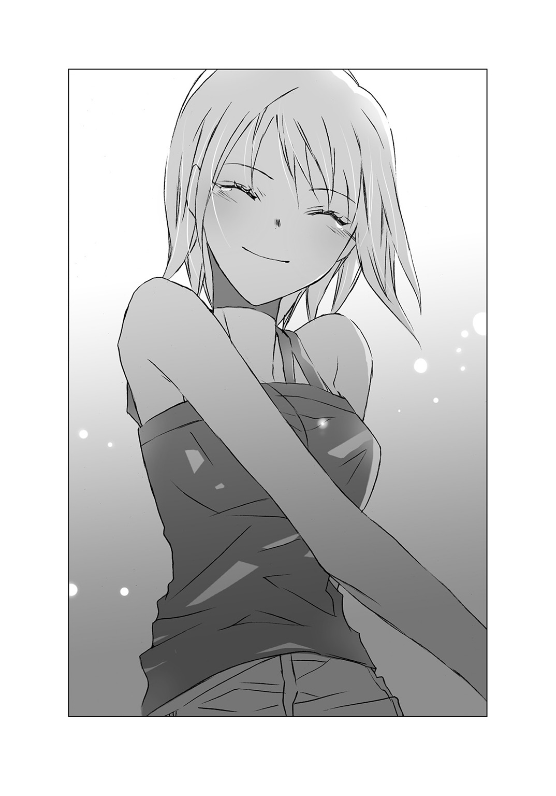

| 死んでも死んでも死んでも死んでも好きになると彼女は言った | |
| 斧名田マニマニ | |
この本は縦書きでレイアウトされています。
また、ご覧になる機種により、表示の差が認められることがあります。

 ダッシュエックス文庫DIGITAL
ダッシュエックス文庫DIGITAL
死んでも死んでも死んでも死んでも好きになると彼女は言った
斧名田マニマニ
彼女は『夏の妖精』。
ハセクラユイの記憶を引き継ぎ、造り出された人工生命体。
寿命は三カ月。
夏の間しか生きられない。
それが彼女の運命だった。
二〇一六年八月二十一日（晴れ）
ねえ、陵介。
今日この日記をつけながら、久しぶりに出会った頃のことを思い出したの。
あの時の私って、本当にかわいくなかったよね......。
ツンツンした態度をとったり。
あなたのこと、嚙みつきそうな勢いで睨みつけちゃったり。
けどね、あれにはちゃんと理由があったのよ？
私は夏の終わりには死んじゃうから。
だから仲良くなったらだめだって、自分に言い聞かせてたの。
あなたの夢の手伝いはしたい。
でもいなくなる時のために、心の距離は近づけないようにしようって。
そう決めてたんだ。
結局失敗しちゃったけど......。
あーあ......。
どうせ気持ちを抑えきれなくなるのなら、あんな態度取らなければよかった。
......だって好きな人にはやっぱり、かわいいやつだって思われたいもの。
【１】
夏の命は短い。
蟬しぐれ、向日葵の花、ソーダ水の炭酸、打ち上げられた花火。
それらはすべて、夏の幻みたく、一瞬、咲き誇るように輝きを放ち、たちまちに消えてしまう。
俺が好きになった女の子、支倉由依も......。
支倉由依の命の期限は、出会った時点ですでに、夏の間だけとされていた。
もっとも俺が支倉由依の寿命を聞かされたのは、知り合って、恋をし、彼女が自分にとって、かけがえのない存在だと気づいた後のことだったけれど。
いま振り返ると、何も知らなかった俺は、のぼせ上がったり、はしゃいだり。
とにかくひどい有様だった。
まったく浮かれ野郎極まりなくて、うんざりする。
正直、自分の挙動に関しては、蓋をして忘れ去りたいぐらいだ。
しかし残念ながら、この物語は俺たちの『最低最悪な出会い』から始まる。
それは二カ月前のこと――......。
――六月下旬。
とある土曜日の午後。
白い夏服の背中の上で、艶やかな黒髪がサラサラと揺れていた。
柔らかく、爽やかに、サラサラと。
二週間ほど前に梅雨入りをした鎌倉市は、重苦しい空気に覆われ、湿度九〇パーセントを記録していたにもかかわらず、だ。
風に揺れる長い髪だけじゃない。
セーラー服の袖から出た色白の両腕も、華奢な両足も。
彼女の後ろ姿そのものが、不思議なぐらい涼しげで、湿った憂鬱さとは無縁の存在に思えた。
そんな黒髪の彼女は石垣によじ登り、龍口寺の脇にひっそりと建つ山車蔵の中を、なぜか熱心に覗き込んでいた。
石垣の下にいる俺の存在には、まだ気づいていない。
いったいあんなところで、何をしているんだろう。
奇妙に思いつつ通り過ぎようとした俺は、数歩進んだところで、ハッと息をのんだ。
彼女は石垣の上、俺は石垣の下にいる。
これ以上進むと、揺れるプリーツスカートの中身が恐らく、見えてしまうだろう。
俺は立ち止まった。
困ったことに、のっぴきならぬ理由があって、来た道を引き返すわけにはいかなかった。
仕方ない。
わざとらしさは目を瞑り、乾いた咳をしてみる。
立て続けに。
二回ほど。
気配に気づいて、振り返った彼女は――......。
美少女だった。
ただの美少女じゃない。
完璧に、本物の、美少女だ。
光の加減で潤んでいるように見える瞳、透きとおるような白い肌、小さくて赤い果実のような唇。
彼女のすべてが儚げで、強い風が吹いたら、指先からするすると紐解かれてしまうのではと、不安を抱くほどだった。
本物の美少女は、こんなにも不確かで危うい生き物だったのか。
いや、生き物というより、整いすぎていてまるで人形みたいだ。
俺は動揺しながら、不躾にならない程度に、彼女を観察した。
セーラー服の胸元についているのは、見覚えのある校章だった。
恐らく今、俺の家の洗濯機の中で、暴力的な回転を強いられているはずの白シャツにも、同じ校章の刺繡があった。
うちの学校の生徒だったのか。
でもこんな子、今までに一度も見たことがない。
ここまで整った容姿をしていたら、噂になりそうなものなのに......。
彼女は彼女で、俺とは違う意味の動揺を覚えているらしかった。
「え......。うそでしょ、信じられない......」
それが初めて聞いた彼女の声だった。
彼女は声もかわいらしかった。
高めだけれど丸みがあって柔らかい、食べ頃のストロベリーアイスみたいな声。
その表現が甘過ぎるなら、カプチーノの上に載った、口に入れた瞬間しゅわりと消えてなくなる泡みたいな声だ。
なんだか一層甘くなったな。
「どうして、ここに......？」
目を見開いた彼女が、小さな声で呟く。
彼女の反応は、人がいるなんて予想もしていなかったと言いたげで、少し怯えているようにも見えた。
多少驚き過ぎな気がしたが、それでもなんとなく申し訳なくなった。
「あの......」
ただ謝ろうと思っただけだ。
ところが声をかけると、彼女は何かを恐れるような表情を浮かべた。
逃げ去るつもりなのか、足場の悪い場所で慌てて踵を返す。
そうして足を踏み外し......。
「きゃっ......!?」
短く高い悲鳴を発した直後、彼女は俺の上へと落下してきた。
彼女に押しつぶされ、仰向けで地面に倒れ込んだ俺は、うっと低く呻いたあと、衝撃のあまり数秒間、身動きがとれなかった。
「ねえっ......大丈夫!? 頭打ったりしてない!?」
真っ青な顔をした彼女が、俺の顔を覗き込んでくる。
「ああ......うん、大丈夫......」
「どこか痛みがあったり、怪我をしたりは......!?」
「いや、ほんとに平気だから」
「そう......。それならよかった......」
寝転がっている俺のおなかの上にぺたりと座り込んだまま、彼女が安堵の溜息をつく。
よっぽど気が動転しているのか、彼女は俺の上にいることをすっかり忘れているらしい。
まあでも、ちょっと得をした気分だ。
もちろんどいてほしいとは、微塵も思わなかった。
そんなことより『ホッとした顔も、やっぱりかわいいな』と思った。
ところが突然、彼女の眉間にキッと不機嫌な皺が寄った。
「......って驚かせないでよねっ！ そもそもなんでいきなり、私の前に現れるのよ!? そんなことするから、びっくりしてバランス崩しちゃったじゃないっ！」
それまでの儚げな印象を、一掃する勢いで詰め寄られる。
「あ、えっと、ごめん......」
「ほんと最悪っ......。こんなの全然望んでないのに......。どうしてくれるのよっ!? あなた、責任取れるの......!?」
なんだかよくわからない言葉を並べたてた彼女が、俺の胸倉を摑む。
女の子に、いや女の子じゃなくても、胸倉を摑まれたのは生まれて初めての経験だった。
しかもその瞬間――......。
甘くふんわりとした瑞々しい匂いが、彼女の髪からふわりと香った。
これもまた、生まれて初めて嗅ぐ匂いだった。
「......っ」
一瞬、強烈な眩暈を感じた。
目映い光に包まれたかのような錯覚を覚える。
それからなぜか、胸の奥が軋んだ。
苦しくて膨れ上がって爆発しそうで刺激的な想いが、喉の裏側とか指の内側とか、心臓の血管で暴れている気がした。
なんだ、この想いは。
俺は困惑して、瞬きを繰り返した。
いったいどうやって、この感情を受け止めればいいのかわからない。
ただ直感的に、彼女と距離を取るべきだと察した。
得体の知れない甘酸っぱい感情を抱きながら、彼女に詰め寄られているのは、どう考えても不健全だ。
「ごめん。......とりあえず起き上がってもいいか？」
そう伝え、上半身を起こす。
でもそれがいけなかった。
俺の視線はごく自然に、前屈みになった彼女の胸元へと吸い寄せられた。
不用心に大きく開いた襟ぐりから、柔らかそうな膨らみが垣間見える。
まずい。
慌てて逸らした視線が、出会い頭の事故のように彼女とぶつかった。
彼女の頰は朱に染まり、胸元は白い手で隠された。
それからハッと息をのんで、俺の上から飛び降りた。
猛烈にまずい。
往々にして人生は残酷だ。
スカートの中身を回避しようが、しまいが関係ない。
運命の着地点は、『此処』だったのだ。
「見......た......？」
「......。見てな――......」
こんな噓は通用しない。
当然ながら。
「うそうそっ......！ 明らかにいまの沈黙、不自然だったわ......!!」
彼女は興奮のあまり真っ赤な顔で首を振り、長い髪を揺り動かした。
「ごめん。わざとじゃないんだ。それにそう、全部は見えてないし」
「全部ってなにっ!? 言い方がエッチなのよぉっ!!」
クワッと八重歯を剝き出しにして、俺のことを怒鳴りつける。
圧倒された俺は、『清楚で儚げな外見のわりに、中身は気が強いタイプなんだな』なんて考えた。
要するに俺の脳は、完全に現実逃避を始めたのだった。
「......言っておくけど!! これは『最終形』じゃないわ。あくまで『まだ成長中』なの！ 現段階でがっかりして、見切りをつけるなんて許さないんだから！」
「ええっと、どういう意味だそれ？」
「返事！」
「お、おう......」
「ふんっ」
腰に手を当てた彼女が、まだ納得できないという表情で、ギリギリ音を立てつつ俺を睨みつけてくる。
ギリギリっていうのは、歯を嚙み合わせる音だ。
怒りで歯ぎしりする美少女って、この子どれだけ俺にインパクトを与えるつもりなんだろう。
ちょうどその時、膠着状態と化した俺たちの間に、別の空気が入ってきた――......。
「もう、陵介くん！ やっと見つけたよー！」
目の前の彼女と同じように苛立った調子の、でも他の声が、俺の名前を呼んだ。
顔を上げると、砂利道の先、寺の門へ続く曲がり角の手前に、襟足で切りそろえた蜂蜜色の髪を持つセーラー服が、仁王立ちしていた。
「澪......」
幼馴染みの名を口にした俺の声には、後ろめたさが混じった。
幼い弟たちを説教するときと同じ表情をした澪が、短いスカートを揺らして、こちらに向かい大股で歩いてくる。
乱暴に歩くほど、自然な筋肉のついた足の美しさが際立った。
「ってか陵介くん！ 君ってば高校生にもなって、女の子いじめたりしてんの!?」
俺の前で足を止めた澪は、いささか芝居がかった動きで腕を組んでみせた。
澪の剣幕を前に、黒髪の少女の目と口が、まん丸になる。
どっちかっていうとアンタのほうが獰猛な怒り方をしてたぞ、とはもちろん突っ込めなかった。
「だいたい陵介くん、なんでこんなとこにいんの。すごい捜したんだからね」
快活な印象を与え、誰からも好かれる澪の顔に、今は暗雲が立ちこめている。
「まさか実行委員会を、逃げ出すつもりだったわけじゃないよね？」
少しつり気味の猫目は、俺の動揺のしっぽを摑もうとして、瞳の奥を見つめてきた。
「べ、別にそんなつもりないっての」
「怪しいなぁ」
それはそうだろう。
噓だからな。
「委員会をさぼったりしたら、陵介くん家のおじさんに、めちゃくちゃ怒られるからね？」
「わかってるって」
「わかってても、逃げ出すのが陵介くんでしょ？」
同い年なのに年上ぶった顔をして肩を竦めると、澪は改めて俺の隣にいる黒髪の少女に、視線を移した。
突然意識を向けられ、黒髪の少女は警戒するように、姿勢を正した。
緊張が全身から伝わってくる。
どうやら彼女は、人見知りらしい。
澪とは正反対のタイプだなと思った。
「えっと......陵介くんが、迷惑かけてごめんね！」
誰とでも気さくに話せる澪が、朗らかな声で俺の代わりに謝罪する。
澪の保護者ぶった態度は、もう一種くせのようなものだ。
恐らく幼い弟妹に囲まれて生活している影響なのだろう。
ただ黒髪の彼女のほうはそんな事情を知らないので、怪訝そうな顔をした。
「......なんであなたが謝るの？ あなたに謝られるようなこと、別にされてないわ！」
威嚇するような少女の物言いに、澪は一瞬驚いたような表情を浮かべた。
が、明るい笑い声でうまく流してみせた。
「あはは。確かにそうかも。あ、ねえところで、あなた確か四組の転校生だよね？」
「......そうだけど」
なるほど。
転校生だったのか。
どうりで見たことがないはずだ。
「ここにいるってことは、あなたも夏祭り実行委員会に参加するの？」
「か、関係ないでしょっ......！」
はねつけるように叫んだ彼女は、長い髪を翻して背を向けた。
そのまま龍口寺の門のほうへ向かって駆け出す。
俺と澪が呆気にとられて、顔を見合わせた時――......。
「ひきゃっ......!?」
奇妙な悲鳴と共に、砂利を蹴散らす音がした。
びっくりして振り返ると、どうやら派手に躓いたらしい彼女が、地面に転がっていた。
パンツ丸出しという、目のやり場に困る格好で......。
「お、おい......。......大丈夫か？」
「......っ......」
彼女は無言のまま、むくりと起き上がった。
そうして今度こそ本当に走り去った。
「......なんかあの子、意外と抜けてるな」
彼女が走り去った方向に視線を向け、俺は独り言のように呟いた。
攻撃的な態度に正直辟易したけれど、最後にあんな間抜けな姿を見せられては、どうにも憎めない。
「転んでパンツを丸出しにするなんて......。幼稚園児とかならわかるが、高校生だぞ......？」
「もう、何のん気なこと言ってんの！ あの子すごく怒ってたよ？ 陵介くん、あの子に何かしたんじゃないの？」
「いや......。あれは完全に事故だったはずなんだけどな......。やっぱ俺が悪かったのかな......」
「普段あたしに振る舞うみたく、他の子に接しちゃだめだよ？ あたしは長い付き合いだから陵介くんのこと、よくわかってるけど。他の子はそうじゃないんだから」
「いや、別にあの子に、馴れ馴れしい態度を取ったわけじゃないぞ」
「そ？ ......ならいいけどね！」
なぜかホッとしたような笑みを浮かべた澪が、スマホで時刻を確認した。
「あ！ ねえ、あたしたちもそろそろ寺に戻らないと。実行委員会、始まっちゃうよ」
逃げ出すことはもう完全に諦めていたから、俺は澪のあとに続き、気だるい足を引きずるようにして、龍口寺の境内へと向かった。
門をくぐり石段を登って境内に行くと、本堂の前は、指導役の大人や、実行委員会に参加を希望する高校生たちで、ごった返していた。
黒髪の彼女の姿も、集団の隅のほうに見つけられた。
集まっている高校生たちはみんな、学校帰りにそのまま寄ったらしく、制服姿のままだ。
人数はざっと見ただけでも、五十人は堅い。
さまざまな高校の生徒が入り乱れていたが、うちの高校の連中が一番多い気がする。
俺は、ここにいるみんなも、自分と同じく強制的に参加させられている可能性について考えてみた。
五十人の親が、『広報かまくら』で夏祭り高校生実行委員の募集を見て、勝手に申し込みの電話をかけた可能性を、だ。
およそありえない。
今日は実行委員会の初日だし、冷やかしで顔を出しにきたのか？
そう考えるには、どの顔もどの瞳も、活き活きとし過ぎている。
なんだか馴染めそうにないな......。
居心地の悪さを感じつつ、俺は小さく息を吐いた。
やがて大人たちの中から一人の男がずいっと前に出て、声高々に挨拶を始めた。
選挙期間外に駅前で演説をする政治家のような、確信と自信に満ちた男の表情が、ますます俺を居たたまれなくさせる。
男は、俺の父親だった。
「夏祭り高校生実行委員会での経験は、皆の青春の一ページに、素晴らしい思い出を刻み込んでくれる！ 俺がここに約束するぞ！」
夏祭り、高校生、青春、思い出、うんぬんかんぬん。
大好物な言葉を並べたてて、父親の演説は十五分近く続いた。
「さて実際に実行委員で行う内容に関してだが......、ポスター作り、宣伝用の団扇やチラシ作り、夏祭り当日のもろもろ......。まあそのつど説明していくとして、とにかく大事なのは皆のやる気だ！ 誰のためでもない自分自身のために、是非、積極的に取り組んでほしい！」
実行委員会の活動に関する具体的な説明のほうは、数秒で終わった。
「それじゃあ、なにか質問ある人は挙手！」
視界の端で、スッと白い手が伸びる。
こういう場で手を上げる人間がいる事実は、俺を驚かせた。
意外なことに挙手したのは、黒髪の彼女だ。
「打ち上げ花火の構成については、いつ話し合うのよ？」
彼女の質問を受けて、うちの父親が一瞬戸惑ったような愛想笑いを浮かべた。
「えっと......打ち上げ花火については、実行委員の仕事じゃないよ」
「......え？ ......う、うそでしょ......!?」
「打ち上げ花火に関するすべては、昔から俺んとこの花火屋に一任されてるんだ」
「それじゃあ......実行委員になっても、花火に関われないってこと......？」
「ああ、悪いがその通りだ......」
「そんな......。うそでしょ......」
消え入りそうな声で呟いた彼女を申し訳なさそうに見やってから、父親は生徒たちの集団に視線を移した。
「えーっと......他に質問ある人いるか？」
場は冷たく静まり返った。
まあこれが日本人の集団がとるべき、ありふれた模範的な反応だろう。
そんなわけで、一回目の実行委員会はあっさりお開きとなった。
散り散りに帰って行く生徒たちの流れの中、彼女だけは、まださっきの場所に立ち尽くしていた。
肩を落として、俯き気味に。
呆然とした横顔は、青白くすら見えた。
花火の構成に関われないのが、そんなにショックだったのだろうか。
そこでふと俺は、彼女が山車蔵の中を覗き込んでいたことを思い出した。
あの山車蔵の内壁には、確か歴代上げられた花火の写真が飾られているはずだ。
そうか、あれは花火の写真を眺めていたのか。
「どうしたの、陵介くん」
横から澪に顔を覗き込まれ、慌てて視線を逸らす。
「え......あ、いや」
「なになに？ あの転校生の子が気になるの？」
「......そんなじゃないって」
「えー怪しいなぁ。じっと見つめたりして」
じりじりと距離を詰め、澪が俺の顔を見上げてきた。
もうこうなったら、否定し続けるしか道はない。
「だから違うって。俺らも帰るぞ」
そう言ってさっさと歩き出す。
「......あの子に声かけないんだ」
澪の呟きは小さすぎて、よく聞き取れなかった。
「え？ なんだって？」
「なんでもなーい！」
少し後ろから返ってきた澪の声は、なんだか妙に浮かれていた。
どうして突然、機嫌が良くなったのだろう。
単純な男子に、複雑な女子の感情なんて理解できない。
まあいいか。
考えることを放棄した俺は、頭を空っぽにして上空を見上げた。
夕焼けの空を横切っていく風の群れは、湿った潮の匂いがした。
【２】
夏祭り実行委員会の初顔合わせから、数日が経った月曜日。
教室の窓の向こうには低い雲が垂れ込めているけれど、昨日も今日も雨は降っていない。
二年一組の教室は古典の授業中。
教師の口からぼそぼそと紡がれる漢文詩は、五月雨のように教室を沈めた。
雨が降らないから、雨のことばかり考える。
眠いな......。
欠伸を嚙み殺してまた窓の外に視線を向ける。
グラウンドでは、どこかのクラスの女生徒たちが、ハードル走を行っていた。
......あれ？
あの子って......。
緊張した面持ちで順番待ちをしている横顔に、目を留める。
視力の良さだけが取り柄なので、俺はすぐに確信を持った。
あれは夏祭り実行委員会の日、俺に嚙みついてきた黒髪の彼女だ。
他の子たちは談笑しながら固まっているのに、彼女だけがポツンと独りぼっちで群れの外にいる。
クラスに馴染めていないのは一目瞭然だった。
しばらく眺めていると、彼女の番がやってきた。
位置に着いた数秒後、スタートを告げる旗が上がる。
彼女が駆け出す。
あまり整ったフォームではない。
でも必死に走っている。
ポニーテールの長い髪が、風の中を軽やかに舞う。
白い体操服の下で、丸い膨らみが微かに揺れている。
最低だ。
勝手にそこに目がいって、自然とあの出会いの場面を思い出した。
よこしまなイメージを追い払うように、頭を振る。
「......ねえ、何一人で百面相してるの......？ やばいヤツに見えるよ」
斜め前の席の澪が、小声で話しかけてきた。
「......ほっとけって」
小声で返して、意図的な無表情を窓の外に向ける。
ちょうどそのとき、グラウンドの彼女が最後のハードルに足を取られて、転倒した。
砂埃が舞う、痛々しい転び方だった。
よく転ぶなぁと、俺は小さく溜息をついた。
ゆっくり立ち上がった彼女の両膝に、真っ赤な血が滲んでいる。
それでも彼女はゴールに向かって、ひたむきに走り出した。
無理しないで、保健室に行けばいいのに......。
そう思ったとき、教卓のほうから、嗄れた咳払いが聞こえてきた。
無意識に身を乗り出していた自分に気づかされ、気まずくなって慌てて座り直す。
さすがにもう、窓の外は覗けなかった。
それからしばらくして、古典授業の終了を告げるチャイムが鳴った。
昼飯を食べ、午後の授業を受け、夕方降り始めた雨に追われるように帰宅した。
まず風呂に入り、夕飯を食べて、自分の部屋にこもって、ごろごろしながらゲームを進めた。
雨は窓の外、しとしとと降り続けている。
その間一度も、彼女自身や、彼女が負った怪我について思い返すことはなかった。
要するに、現時点での俺は、まだまともだったということだ。
今思うと病の潜伏期間だったのだろう。
表面上は健康体。
廃墟の裏手にいる敵を、いかに狙撃するかしか頭になかったのだから。
「どうすっかな。......戦車の脇から、右奥に回り込んでみるか？ あーでもそれだと、レアアイテムが拾えないな......」
ソファーに寝転がり対策を練っていると、階下からインターフォンの音が聞こえてきた。
玄関を開けた母親と、訪ねてきた誰かが話をしている。
少しして、父親の声も混ざり始めた。
部屋の戸が閉まっているので、会話の内容までは聞こえなかったが、相手はたぶん女の子だった。
澪でも来たのか。
なんとなく起き上がり、部屋を出て階段下を覗いてみると――......。
「え......？ なんでだよ......？」
玄関先で両親と話し込んでいるのは、あの黒髪の転校生だった。
俺は息を潜めて、彼らの会話に聞き耳を立てた。
同級生の女の子が自分の家の玄関にいるという状況は、わけもなく緊張する。
「私はどうしても今年の夏祭りで打ち上げられる、花火の構成を担当したいの。去年までの花火は、ありがちで古臭かった。そうでしょ？」
「ま、まあ否定はできないが、それには事情があって......」
「なにモゴモゴ言い訳してるのよ、おじさん。もっと新しくて自由な構成の派手な花火で、みんなをワクワクさせたいと思わないの!?」
俺の父親は圧倒されたように、体を引いた。
彼女は本気で、真剣だった。
尚且つ何か腹をくくった人だけが持つような、得体の知れない勢いさえ感じさせた。
そんな人間をモゴモゴした言い訳で追い払えるわけがない。
うちの父親は完全に押されていた。
「私は新しい花火が見たい。でも夏祭りの実行委員ってだけじゃ、花火の構成に関われないのはわかったわ。だったらどうしたらいいのか教えて！」
「だけど......そもそもあんた、花火のことは素人だろうし、何もわからんだろ？」
「でも熱意はあるわ！ 大事なのはそこでしょ？」
「熱意がある、か......」
父と母が心を打たれた表情で、目を合わせる。
まずい。
熱意だとか、情熱だとか、とにかく熱量の高い言葉にこの二人が信じられないほど弱いことを、息子の俺は嫌と言うほど知っていた。
面倒だけど、出て行って止めなきゃいけない流れだ。
仕方ない――......。
「ちょっと待ってくれ」
階段を降りていき、会話に割って入る。
「......真宮陵介」
俺の姿を確認した黒髪の彼女は、一瞬大きく瞳を揺らしてから、ひどく凶暴な顔をした。
わかっていたことだが、あの最悪な出会いのせいで、俺は彼女に、ずいぶん嫌われているようだった。
「ごめん、話が聞こえたから。......あのな、うちの花火屋は鎌倉市議会から、依頼を受けてるんだ。『昔ながらの花火を上げてくれ』って。それを勝手に変えるなんてできないんだ。そもそも予算だって決まってる。派手な花火なんて上げられない。だからいくら俺の父親に訴えても意味がないぞ」
「陵介......」
父親が困り顔で俺の名前を呼ぶ。
「父さんだって仕事なんだから、変に絆されたりしちゃだめだろ」
彼女の望みを突っぱねるのは、しのびない。
しかし、うちの親が情熱という危険な言葉に当てられた結果、市議会と揉め、大口の仕事を失うのは困る。
「そういうわけだから諦めて――......」
「わかったわっ！ つまり市議会を説得すればいいんでしょ」
「え......？」
予想外の返事が戻ってきたせいで、俺はつい動揺した。
「ま、待てよ。市議会を説得するなんて、無茶だって......」
「見てなさい。絶対にやり遂げてみせるから！」
俺の顔を見上げて、宣戦布告のようにギッと瞳を覗き込んでくる。
俺自体を、立ちふさがる障害だとでも勘違いしているみたいに。
でも違う。
あんたの敵は、市議会と、予算と、花火構成に関するもろもろの知識であって、俺じゃない。
「君のそのガッツ気に入った！ 今時珍しい若者だな！」
「そうね！ あたしたち応援してるから、がんばって成し遂げてみなさいよ！」
「はぁ!? 父さんも母さんも何言ってんだよ!?」
両親が彼女の肩を持ち、俺の分は圧倒的に悪くなった。
「応援なんていらない。――そんなことよりも」
彼女の強い視線が、俺に注がれる。
「あなた！ 私のこと手伝いなさい！」
「......は!? ......俺が!?」
「だって花火屋の息子なんでしょ？」
「そりゃあ、そうだけど......」
花火屋の息子だからって、何ができるわけでもない。
一瞬浮かんだその思考は、俺の記憶と心の奥底を、ガリッとひどく抉った。
その扉は開けたくないから、大慌てで鍵をかけ直す。
誰だって忘れておきたい思い出ぐらいあるだろう。
「おお！ いいじゃないか、陵介！」
「ちょっと待っ――......」
「そうよ、陵介！ 協力してあげなさい」
両親は肩を並べて、嫌な笑顔を浮かべている。
「いや、待ってくれ。だいたいあんた、俺のことを嫌っているんじゃなかったのか？」
「明日の放課後、具体的なことを決めるから、あなたの教室で待ってて。先に帰ったりしたら、絶対永遠に何度生まれ変わったとしても許さないから！」
俺の質問には答えず、一方的に宣言すると、彼女はさっさと出て行ってしまった。
なんだかとんでもない展開になった。
やれやれと思いつつ、俺は下駄箱の上に置かれている時計を確認した。
親がどこかの誰かの結婚式でもらってきた、他に置き場のない時計は、二十時十五分を過ぎたところだ。
当然、辺りは暗い。
「ちょっと、陵介」
母親が顎で玄関を示す。
「わかってるっての......」
女の子を一人で帰らせるわけにもいかないので、彼女の後を追って家の外へ出る。
道をいくらか歩き始めていた彼女は、濡れたコンクリートを踏みつける俺の足音を聞きつけて、こちらを振り返った。
不機嫌で怪訝そうな顔をしている。
「......なによ！」
「送ってくよ」
「結構よ！」
迷惑そうに、ばっさり断られてしまった。
仕方ない。
肩を竦めて、家へ引き返そうとしたところ、ギュッと後ろから服の裾を引っ張られた。
振り返ると、彼女が俺を指先で引き止めていた。
「......ええと？」
断られたはずなのに、どういうことだ。
「帰っていいとは言ってないわ......」
「......結構だって言わなかったか？」
「......」
そこで黙り込むか。
俺は溜息をついて、腰に手を当てた。
「よくわかんないけど、とりあえず送るよ。雨も降ってるし、もう遅いから」
「......あっそ。勝手にすれば！」
一応許可がおりたようだ。
そうして俺は俺の、彼女は彼女の傘の下で、歩みを進めた。
広げた傘がぶつからない距離は、思っていた以上に遠い。
この距離を越えて、雨の音を搔き分けてまで会話をするなんて、彼女が望んでいないことは想像がついた。
俺は黙ったまま、半歩前を行く彼女の傘に視線を向けた。
彼女の傘は水色の雨だれ模様をしている。
その傘のポップな柄を見ていたら、当たり前の事実を改めて感じた。
つまり彼女は紺色の退屈な傘を差す俺と違って、女の子であるという事実を。
「ちょっと......ついてきたくせに、黙り込んで沈黙のプレッシャーを与えるとか、なんなの嫌がらせなの!? むかつく！ 何か話しなさいよ......！ ばかばーかっ！」
唐突に話しかけられて驚く間もなく、一息で、全力でなじられた。
どうやら求められていたのは、沈黙ではなかったようだ。
俺は雨の音をかいくぐって、彼女に話しかけた。
「えーと......名前、なんていうんだ？」
「何それ、つまんない質問！」
「......ま、まあな」
それでも俺たちは、自己紹介をまだ済ませていなかった。
彼女もその事実を思い出したのか、ぶっきらぼうな口調で名前を教えてくれた。
「支倉由依」
「支倉？」
「由依！」
「支倉由依、か」
「......ふんっ」
彼女は俺を一睨みしてから、そっぽを向いてしまった。
......ハセクラユイ、か。
特別変わった名前なわけじゃない。
でも特別な名前のように、俺の心に響いた。
理由はわからない。
ハセクラユイと、俺は頭の中で何度か呟いてみた。
少し古風で凛とした響きの名前が、彼女にはよく似合っている。
「俺は......」
「真宮陵介、でしょ！」
「ああ、そうだけど......。よく知ってたな」
「......」
沈黙。
彼女は横目で俺を見てから、苛ついた表情で視線を逸らした。
それにしても意外だ。
彼女の口から先に自分の名前を告げられるなんて。
でもそういえば彼女は、花火屋のことを調べて訪ねてきたのだった。
その過程で俺の名前を知った可能性はある。
彼女から返答はないので、実際のところはわからないが。
「そういえば足の怪我は大丈夫か？」
「......どうしてあなたが知ってるのよ」
「教室の外眺めてたら、偶然見ちゃって......」
「転ぶぐらいよくあることだし」
「そうか......？」
少なくとも俺は今年も、去年も転んでいない。
一昨年のことは曖昧だが、恐らく一昨年も。
「......」
そしてまた沈黙。
さすがに駅までの距離を長く感じ始めた頃、不意に支倉のほうから話題を振ってきた。
「ねえ、さっきの話だけど......」
「さっきの話？」
「私が花火の構成役になるために、あなたに手伝ってって言った話！」
「ああ、うん」
「なんか嫌そうだったから。あなたが手伝いをしたくないのなら......私のほうが......その......えっと......」
それまで強気だった支倉の口調がどんどんしぼんでいって、最後はほとんど聞き取れなくなった。
支倉はそのまま立ち止まると、悔しそうな、駄々をこねる子供のような瞳で俯いた。
傘の柄を握る指先が、力を込めすぎたせいで白くなっている。
「最悪......。そんな選択、今更できるわけないじゃない......」
わけのわからない独り言を呟いてから、おもむろに顔を上げる。
あ、違うと思った。
悔しそうなんじゃない。
支倉の目や口元に現れているのは、泣きそうな表情だった。
「ちょっと真宮陵介！ あなたはどうしたら私の手伝いをする気になるのよ......！」
......この子、俺に手伝ってほしいのか？
「あのさ、支倉は本気で俺に手伝ってほしいのか？」
俺といるのが明らかに苦痛な様子だったから、困惑して問いかける。
「それにさっきは俺の意見なんて関係ない感じだったのに」
「う、うるさいわねっ......。私にもいろいろあるのっ！」
「いろいろって？」
「それは......。ひ、秘密よ......！」
支倉はそれ以上説明する気がないというように、唇を引き結んだ。
「まあうちの父親、言い出したら聞かないし。手伝うのはいいけど」
「え......。ほんとに......？ 手伝ってくれるの......？」
彼女の大きな瞳が、驚いたように見開かれる。
「ほんとのほんとに？」
「ああ」
彼女は一瞬すごく嬉しそうな顔で笑った。
しかしすぐにハッと息をのんで、笑顔をかき消してしまった。
そうした後で、苦しそうに眉根を寄せた。
「なんで手伝うなんて言うのよ......。最悪だわ......」
彼女がどうしてほしいのか、俺にはもうちっともわからない。
「嫌だったらやめとくぞ？」
「そうじゃないわよっ！ ......ああっっ！ もうっっ!!」
地団駄を踏みながら、喚き声をあげる。
彼女の足元で、パシャパシャと雨粒が跳ねた。
「お、おい、どうした？」
「ちょっと待ってて！ 三十秒でいいから。いま私、葛藤中なのっ！」
支倉は自分の姿を隠すように傘を持って、しばらく黙り込んでいた。
そして多分三十秒ぐらい経ったところで、傘の位置をずらした。
「......もういいのか？」
「......うん、いい。ちゃんと心を決めたから、もうぐずぐず言ったりしない」
大きくて真っ直ぐな支倉の目が俺を射抜く。
「真宮陵介！ 夏祭りまでの三カ月間、私の傍にいなさい！」
心の奥が思わず、うっとして、言葉がすぐには出てこなかった。
だって傍にいろだなんてそんな言葉を女の子に言われたら、うっともなる。
「......ちょっと、返事は？」
「あ......お、おう。わかった」
俺が返事をすると支倉は肩の力を抜き、少しだけ微笑んだ。
恐らくそれは、無意識に零れた微笑みだった。
「ねえ真宮陵介」
「ん？」
初めて見た微笑みのあと、彼女は雨音にかき消されそうなほど、ささやかな声でこう言った。
「私、あなたのことが好き」
【１】
雨の夜、支倉が俺の家を訪ねてきたのは昨日のこと。
そして今日。
俺と支倉は放課後の教室で、お互い知らん顔をしながら、他の生徒たちが帰宅するのを待っていた。
深海で息を潜めて眠る魚のように静かに。
ひたすら存在感を消して。
『明日の放課後、具体的なことを決めるから、あなたの教室で待ってて』
その言葉通り、支倉は俺の教室までやってきた。
昨日あんなことがあったのにもかかわらず。
昨日のあんなこととはつまり――......。
話は昨晩、雨の歩道まで遡る。
「私、あなたのことが好き」
雨音にかき消されそうなほど、微かな声だった。
「......え？」
空耳かと思った。
だってまさか、信じられない。
「今なんて言った......？」
何かの間違いじゃないだろうかと、疑って聞き返す。
「......あっ......！ ち、違う！」
「......は？」
「違う！ その......ええっと......。ま、間違えただけよ！」
「間違えた......？」
「そうよ！ だから今のことは忘れなさいっ！」
「『忘れなさい』って言われても......」
「いいから忘れてよ！ 本当に間違いなの！ 私が......あなたのことを好きとか絶対にありえない、あったらいけないのっ......！」
間違いじゃないかと疑いはしたけれど、本当に間違いだった。
ひどい話だ。
ひどすぎる話だ。
「駅すぐ近くだし、もうここでいいわ！」
支倉は俺の返事も聞かずに、傘を大きく揺らして走り去っていった。
遠くの駅の明かりに向かっていく華奢な背中を見送った俺は、所在ないままに立ち尽くした。
風のせいで、足元に雨粒が降りかかる。
右袖もひんやりと冷たい。
じわじわと冷たい何かが、体に浸み込んでいくのを感じた。
......くそ。
疑いつつ、ちょっと喜んじゃった気持ちを、いったいどうしてくれるんだ。
まったく、ぬか喜びかよ......。
本当にひどい話だ。
――話を放課後の教室まで戻そう。
俺が昨日を回想している間に、クラスメイトたちは次々帰宅していき、いよいよ俺と支倉の二人だけになった。
昨夜の雨は、まだずっと降り続いたままだ。
シトシトと、雨の鼓動が響いている。
そのぐらい教室内は静かだった。
窺うように支倉へと視線を向ける。
射抜くような眼差しと目が合った。
支倉の攻撃的な視線には、少しずつ慣れてきた。
「えーっと......。とりあえず、席座る？」
気まずさを感じながらも、支倉に声をかける。
「当然よ」
クラス掲示板を眺めていた支倉は、黒髪を揺らして俺の前までやってきた。
「立って」
言われたとおり席を立つ。
「どいて」
言われたとおり脇へ退く。
支倉は直前まで俺が使っていた俺の席へ、静かに座った。
それから不服そうに頰杖をついた。
たった一つ、その椅子しか空いていなかったから、仕方なくこの席に座ってやったのだという感じの態度で。
繰り返しになるが、教室には俺たち二人だけだ。
空いている椅子は三十個ある。
「真宮陵介も早く座りなさいよね！」
「......」
俺は黙って少し困ってから、前の席の机を支倉のほうへ向けて、椅子ごと方向転換させようとした。
「ねえ、学級会でも始めるつもり？」
「学級会ってなんだよ？」
「だーかーらっ！ 机はそのままで、椅子だけ後ろに向ければいいでしょ！」
「いや、でもな......」
「はーやーくっ!!」
「......」
俺はまた黙ってもっと困って、困ったまま椅子の向きを変え、腰を下ろした。
向き合った俺と支倉の膝が、机の下で軽くぶつかる。
「っと、ごめん」
「ち、近いのよっ！」
わかっている。
机を一つしか使わずに向き合って座れば、こうなるに決まっていたのだから。
「やっぱ机二つ必要だって」
仕方ないので、もう一度立ち上がって、机を移動させようとしたところ――......。
「待って！ いいの！」
「え？」
「......このままで......いいからっ......」
仏頂面をした支倉が、俺の腕を軽く摑んできた。
冷たくて、でも温かい細い指の感触に、戸惑う。
「わ、わかった」
そう答えるのと同時に、支倉の指は、俺の腕からスッと離れていった。
支倉に気づかれないよう、生唾を飲み込んだ俺は、さっきよりだいぶ慎重に、椅子へと座った。
ただ席に着いたからといって、正直、一切気が抜けない。
俺と支倉の膝は、机の下で、常に触れ合いそうな距離にあった。
なんだかどんどん緊張してきた。
喉が渇く。
いつの間にか、手汗もひどい。
向かい合って座る支倉は、ひどく無口だった。
何を思っているのか見当がつかない。
俺と同じように意識しているのか、それともまったく気にしていないのか。
そっと視線を動かして、支倉の表情を盗み見る。
唇を尖らして、ふてくされているかのような顔をしていた。
でも心なし頰が赤い。
そしてほんの一瞬だけ、口元が緩んだりする。
まったくもって意味の摑めない、複雑すぎる表情だ。
......お手上げだな。
俺には支倉の感情を、理解できそうにない。
「ねえ、真宮陵介。『市議会から、昔ながらの花火を上げるよう依頼を受けている。だから、勝手に花火構成を変えられない』ってことでいいのよね」
「あ、ああ......。そうだな。ここは古都鎌倉だからな。新しいものはどうしたって警戒されるんだよ」
唐突に話しかけられたせいで、声が上擦ってしまった。
支倉は怪訝そうに眉を寄せたあと、自分の鞄をごそごそと漁り始めた。
取り出したのはクリアファイルで、そこに挟んであった何枚ものフルーツ柄のメモを、彼女は机の上にばらまいた。
バナナ、苺、パイナップル、さくらんぼ、葡萄。
「真宮陵介は、その考えを正しいと思うの？」
「どうだろな。正直、『そんなもんなんだろう』ぐらいの感想しか抱かないな」
「つまらない意見ね、真宮陵介！」
小さな鼻の辺りに、凶悪な皺が寄る。
そんな顔をしても、支倉はやっぱりかわいかった。
そんなことを考えている俺の向かいで、支倉は長い髪を耳にかけてから、フルーツのメモを選り分けていった。
赤みが多く感じるのは、苺の枚数が多いからだ。
メモには女の子らしい小さな文字で、彼女の思考の断片が、ごっそりと書き込まれていた。
逆向きからでは、何が書いてあるのか読みづらい。
メモに触れてこちらに向けることは躊躇われた。
一枚の紙切れでも、これは女の子の持ち物で、容易く触れられないほどに、甘い雰囲気をかもしだしていた。
「苺が好きなのか？」
「......苺が好きだって答えたらどうなの？ 可愛い自分を演出しようと思ってる強かな女だって思う？ それともそういう女が好きで、好感度が上がる？ でも苺よりバナナのほうが女の子っぽいよなって実は考えたりする？ 正解がわからないからそういう質問しないでよねっ」
まくし立て終わった支倉が、下唇をぐっと嚙みしめる。
俯いたせいで、色づいた左の耳が俺の視界に入った。
ポカンとした俺は、ふと、ある可能性を見出した。
もしや、苺が好きな自分のことを恥ずかしく思ってるのか？
照れ隠しで、猛烈な攻撃に出たのか？
この子はもしかしたら、難しくて単純な子なのかもしれない。
「......バナナより苺のほうが、支倉のイメージに合ってるんじゃないか」
試しにそう言ってみる。
伝えたことはもちろん本心だ。
「真宮陵介の意見なんて聞いてないのっ！」
三十回ぐらい俺を殺したいと望んでそうな目で睨まれた。
でも支倉の頰は、耳と同じようにうっすらと赤く染まった。
やっぱり、だ。
支倉は照れているらしい。
可愛らしい苺柄が好きで、その苺が似合うと俺に言われたために、どうしようもなく照れているのだ。
ただ、それでのぼせるほど、俺はお気楽でも自惚れ屋でもなかった。
俺が褒めた、という部分は恐らく重要じゃない。
きっとバナナより苺が似合うという俺の言葉を、支倉は褒め言葉として受け取ったのだろう。
事実、俺は褒め言葉として用いた。
だってやっぱりバナナより、苺の似合う女の子のほうがかわいい。
これはもちろん個人的且つ感覚的な話だ。
そして悪意はない。
「真宮陵介の余計な発言で脱線した話を元に戻すけど、どうしたら市議会から許可を取れると思う？ 高校を通じて『地域貢献を希望する高校生たち』みたいな体で、接触を持つのはどうかしら？」
「もうすでに『夏祭り高校生実行委員会』って存在があるからな。地域貢献したいならそちらにって、誘導される可能性が高いぞ」
「じゃあ匿名の脅迫でもしてみる？ 今までの古臭い花火をやめろって、市役所に電話をかけるの。でもこれだと花火自体がなくなっちゃいそうね」
「そもそもそれは犯罪だ」
「わかってるわよ」
言ってみただけという顔をしているが、支倉のメモには脅迫という文字が確かに書かれていた。
「手伝う約束はしたけど、犯罪には加担しないぞ」
「じゃあ何か別のアイデアを考えなさいよ！」
「今の二個しか考えてなかったのか？」
俺が少し笑い声をこぼすと、支倉は眉根を寄せて、唇を尖らせた。
「うるさいわねっ。これでも徹夜したんだからっ！」
「徹夜で二個って......。ハハッ......ひどいなそれ」
「な、なによっ......！ 笑ってんじゃないわよ......。ほんとに一生懸命考えたんだからっ......！」
クワッと八重歯を向いて、支倉が俺を睨みつける。
でもなんだか迫力に欠けた。
というか、むしろ虚勢を張っている小動物みたいで、ちょっとかわいい。
支倉の外見はともかく、内面に関してはこれまで、凶暴、不機嫌、俺を嫌っているぐらいにしか感じてこなかった。
でも今その認識の中に、新たな一面が加わった。
「ていうかまた脱線してるっ！」
「そうだなごめん。――まず根本的に花火っていうのは火薬を扱うものだし、一歩間違えれば大事故を巻き起こしかねない。たとえ関わるのが構成の段階だけだとしても、市議会はいい顔をしないと思う。俺たちは素人だし、そのうえ高校生だから」
「そう、それで？ まさかできない理由を上げて終わり、なんてことはないでしょ？」
俺は肩を竦めた。
「正攻法で市議会を説得するのは難しい。というか無理だ。今は六月で期限も短すぎる」
「それなら奇襲作戦ね！」
支倉は机の上に両手をつき、身を乗り出した。
大きな瞳がたくらみで輝く。
また新しい表情だ。
「言っとくけど、そんなすごい作戦でもないぞ」
「いいから早く聞かせなさいよ！」
「......市議会議員に西園寺松次郎という名の爺さんがいる。地元の名士で、なんでも先祖は梶原景時に仕えた武士がどうとかこうとか......。とにかく土地と権力を持った金持ちで、発言権は市長より上だともっぱらの評判だ。市議会はほとんど西園寺翁が牛耳ってると言っていい」
「なによそれ。だめな映画みたいに底の浅い関係図ね」
「でもこれが俺たちの現実だ」
「まあ、いいわ。そのおじいさんを説得すれば済むわけね」
「言っとくけど、簡単じゃないぞ。西園寺さんはかなりの変人で、年齢の分だけ捻くれまくったゴウツク張りだから」
「簡単でも難しくても、関係ないわ」
支倉はそう言ってから、メモ帳を取り出した。
少し思案した後、束から破り取ったのは、苺の用紙だ。
彼女はそこに、小さな文字で『まずはおじいさんを倒すこと！』と書き記した。
「とりあえず今日はこんなところね。そろそろ帰りましょう」
窓の外の景色を確認した後、支倉が広げた荷物を片づける。
「雨、やんだわね」
「ああ、ほんとだ」
知らない間に雨は静かに上がり、グラウンドは今日最後の日差しを浴びて、きらきらと光り輝いていた。
「ずっと雨で、ずっと梅雨ならいいのに......」
「雨が好きなのか？」
「......」
支倉は俺の質問には答えず、目を細めて太陽を眺めた。
それから机に視線を下ろし、片づけの続きに戻った。
ところがその途中で、彼女の手にした消しゴムが転がり、俺の足元へと落下した。
「なんだよ。生きてんのかよ、それ」
俺はつまらない冗談を言ってから、身をかがめて、消しゴムを拾った。
「ほら」
渡す時、俺の指と支倉の指がほんの一瞬、微かに触れ合った。
「......っ」
支倉が息をのむ。
緊張感が伝わってきて、俺のほうまで、息苦しくなった。
何かに感染するかのような奇妙な感覚がした。
心臓ではない場所が軋む。
教室は静かで、静かすぎて、二人して黙り込むとお互いの呼吸の音の重なりが聞こえてきた。
困って瞳を逸らせば、夕暮れの目映い光が目に刺さった。
「か、帰るわよ......！」
「ああ、うん......」
俺と支倉はぎこちなく席を立った。
教室を出て、二人で昇降口へ向かった俺たちは、そのままなんとなく一緒に校門をくぐった。
「支倉も江ノ電？」
「そう、長谷で降りるの」
「じゃあ逆方向だな。俺は藤沢方面だから」
「なんで私が知ってることを、わざわざまた告げるの？ 何か意味があるの？」
「いや、ごめん、そうだよな......。......支倉が長谷に住んでるのって、やっぱり苗字と似てるからその土地を選んだとか？」
支倉は「はぁ？」という口の形をしたまま、声は発せずに溜息だけついた。
わかっている。
俺は緊張していた。
膝頭が触れ合わないよう気を遣っていた時と、同じ状態だ。
それでも教室に二人きりでいる時は、話し合いという目的があったから、いつの間にか気が紛れていたけれど、今は違う。
感情のすべてが、女の子と二人で帰るという出来事に過剰なほど反応した。
昨日の夜、駅まで送ったときの感覚ともまた違う。
だって女の子が隣にいる放課後の帰り道は、甘酸っぱいイメージの象徴だろう。
これまで経験がなくたって、脳裏に焼きついている。
映画や小説なんかの影響によって。
「......」
「......」
支倉はしゃべらない。
俺もしゃべれない。
創作物で見てきた限り、ときめきとドキドキが詰まった最高のイベントのように思えたが、だめだ、ありえない。
こんなの苦しいだけじゃないか。
とにかく沈黙がつらい。
なんとかして、教室にいたときの空気を取り戻したい。
でも支倉は相変わらず何もしゃべってくれない。
ただ俯いて、俺の左側を歩いているだけだ。
息が詰まる。
沈黙と無音。
いや違う。
俺の煩わしい呼吸の音だけが、耳につく。
せめて雨が降っていればよかった。
やばい。
息が詰まるどころか、息の仕方がわからなくなってきた。
気がきいていなくていいから、何か、なんでもいいから話しかけて、意識を分散させなくては......。
「はっ......花火！」
「花火が何よ？」
「いや、そのー......。どうして花火の構成に興味を持ったのかと思って」
「......それって答えなきゃいけない質問？」
ここで会話が途切れることを恐れて、俺は頷いた。
「ああ。できたら聞きたい」
支倉は舌打ちした。
それでも答えてくれた。
「だって......夢だから......」
「夢？」
「......これ以上は言いたくない」
「もしかして支倉って、花火職人を目指してるのか？」
支倉は頑なな表情で、道の先を見つめている。
嚙みしめられた唇がこの話題に関して、これ以上開くことはなさそうだった。
俺は別の方向に進路変更することを、慌てて決断した。
「それじゃあ花火の雰囲気なんだけど、具体的にどんなのがいいとか、もう考えてあるのか？ 確か派手なのがいいとは言ってたよな。他にもイメージとか、具体的なコンセプトとか浮かんでる？」
ここからは俺がかつて憧れた職人たちの受け売りだが、現代の花火は、昔の手付けではなく、電気を用いた点火方法が主流となっている。
とくに昨今は、音楽と連動させるため、コンマ秒単位で正確にプログラムを組む必要があった。
そのため、花火構成の段階からパソコンが用いられるのだけれど、そうなってから特に重要視されるようになったのが、全体を通して楽しめるストーリー性とコンセプトだ。
繊細な演出が可能となったからこそ、ただ打ち上げられるだけの花火では、もう誰も喜んでくれない。
その流れから、現代の花火業界では、企画や演出に才を発揮できるプロデューサーの存在が注目され始めている。
工場を持たず、プロデュースだけを行う業者も出てきたくらいだ。
伝統はもちろん大事だ。
しかし花火を、切なさを楽しむだけの単なる芸術鑑賞にしておくのはもったいない。
エンターテインメント性と、芸術を融合させることで、きっともっと素晴らしいショーへと、花火は生まれ変われるはずなのだから。
「もちろん考えてあるわよ」
俺の問いかけにたいして、支倉は自信満々な表情で頷いてみせた。
「私、ワイドスターマインがいいの！」
俺は少し驚いて、まじまじと支倉の顔を見た。
「......ワイドスターマインなんて言葉、よく知ってるな。一応業界用語だぞ？」
「......そ、それはその......」
支倉は動揺したように瞳を揺らした。
「支倉？」
「......ま、前にテレビで見たのよ！」
支倉がやけにソワソワしているのが気になるが、テレビで見たというのは十分、ありえる話だ。
「まあ最近じゃ知名度上がってきてるもんな。長岡まつりのワイドスターマインも、テレビ中継してたし」
スターマインとは要するに『速射連発花火』のことだ。
速射連発では、いっきに数百発もの花火を連続的に打ち上げるため、非常に華々しく景気のいい演出ができる。
そのスターマインを数カ所に並べて設置し、連動させ一斉に打ち上げることによって、さらにスケールの大きいショーを見せられる。
この方法が、『ワイドスターマイン』と呼ばれるのだった。
「一八〇度に広がる夜空をスクリーン代わりに、光と音のダイナミックな共演を楽しむ......。やっぱワイドスターマインには、ロマンがあるよなぁ......。俺も子供の頃、すごい憧れたよ」
子供の頃のやるせない思い出が蘇ってきて、なんとも言えない気持ちになる。
「真宮陵介。さっきまでと、目つきが違うわ」
「......っ」
指摘された瞬間、ギクッとして、頰のあたりが歪に引き攣った。
余計なことを話してしまった。
早いところ誤魔化して、適当に話題を変えよう。
俺は、愛想笑いの残骸を貼りつけてから、肩を竦めた。
「まあ俺のことはどうでもいいよ」
軽く流そうとした俺を、支倉が強い眼差しで睨みつけてくる。
「......なんだよ？」
「別にっ！」
吐き捨てるような口調でそう呟く支倉の眉間には、苛立ちの皺が深く刻まれていた。
支倉が不機嫌になった理由はわからない。
彼女は苛々しながら咳払いをして、苛々しながら長い髪を耳にかけた。
「......西園寺さんの話だけど、二日間、時間ちょうだい。対策を練ってみるから」
「二日後っていうと、土曜日か」
「夏祭り実行委員会がまたあるでしょ。その時に報告するわ」
「わかった」
空気に潮の匂いが混ざる頃、俺たちは高校前駅に到着した。
「じゃあ、またな」
支倉は、うんとむうの中間の唸り声を発してから、向かいのホームへ渡っていった。
二分後到着したのは鎌倉方面行きの電車だ。
一緒にいる間、あんなに息が詰まったというのに、支倉の去ったホームを眺めた俺は、失くしものをしたような気持ちに襲われた。
特別な放課後と、特別な帰り道は、俺の左隣に甘い気配を残していった。
【２】
支倉と帰った日から二日が経ち、二度目の夏休み実行委員会の日がやってきた。
前回は簡単な顔合わせのみだったから、境内に集合したが、今回は本堂の脇にある会館が開放された。
会館の中は、こういう場所特有の匂いがした。
過去の蓄積と、何度も人が集まっては出て行った空虚とが、混ざり合ったような匂いだ。
俺が館内に入っていくとすでに、いくつかのグループができており、彼らは熱心に頒布用のチラシを作っていた。
「真宮陵介、遅い遅すぎっ！」
不意に怒鳴り声がした。
甘い声音なのに、迫力はしっかりある。
振り向くと、コピーされたチラシをどっさり抱えた支倉が、ものすごい剣幕で駆け寄ってくるところだった。
「十分よ、十分遅刻！ 私のことこんなに待たせるなんて、どういうつもりっ!?」
「あ、ごめん。待ってたのか」
「はぁ!? 待ってなんかないわよっ！ とにかくそこ！ 座って!!」
言われたとおりパイプ椅子に座ると、支倉は長机の上にチラシの束を置いてから、俺の隣の席に腰を下ろした。
支倉が逆方向に少し体を曲げているのは、俺を視界に入れないためだろうか。
「これ全部半分に折ってくわよ」
こっちをまったく見ずに、ずいっと紙の束を押しつけてくる。
俺のことを嫌ってるのに、接触してくる相手なんて、今まで一人もいなかった。
だから、どうしたらいいかわからず、どうしようもできない。
結局、俺にできるのは、敵意ごと支倉の存在を受け止めることだけだった。
「それにしても、またすごい量を預かってきたな。――支倉って花火構成に携わりたくて、夏祭り実行委員会に参加したんだろ？ そのわりにずいぶんと熱心だな」
「やる以上はがんばるべきでしょ。人一人に与えられた時間は、有限なんだから。なんとなくダラダラと過ごすのは、自分に対して失礼だもの」
俺の隣のパイプ椅子が、ギギッと鈍い音を立てた。
視線を向けると、さっきより少しだけ、支倉が俺のほうに体を向けていた。
「あなたはそう思わない？ なんとなくダラダラと過ごしている真宮陵介？」
「......だな。そんなふうに生きる人を、俺は尊敬するよ」
一生懸命、真剣に、手を抜かず生きる。
俺にはできそうにないから、純粋にすごいなぁと思う。
しかし憧れつつ、そうはなりたくないなぁとも思った。
真剣に生きるほど、心は傷を負う。
どういう仕組みでそうなるのかは知らない。
でもそういうものなのだ。
そして、俺は傷つくことが嫌いだ。
「なによ。突然、黙り込んで」
「なんでもない。ちょっとボーッとしただけだ」
支倉は舌打ちをした。
どこの誰も真似できないような、最上級の苛立ちと傲慢さと威圧感を込めた舌打ちだ。
俺はぎょっとして、手の動きを止めた。
まったく底なしに態度が悪いくせして、盗み見た横顔はやっぱり完璧に美少女なんだから参る。
「ところで約束どおり計画を練ってきたわよ」
「ああ、西園寺さんのことか。いい案浮かんだか？」
「何の相談ー？」
突然、頭の斜め後ろから声をかけられ、びくっと肩が揺れてしまった。
振り返ると腰に手を当てた澪が、俺と支倉の間から顔を覗かせていた。
「なんだ、澪か。驚くだろ。いきなり後ろから話しかけるなよな」
「あはは！ だって驚かせようと思ったんだもの！」
「てか弟の迎えがあるから、遅れるって言ってなかったか？」
「もう幼稚園回って、家に置いてきたよ。今日うちのクラスのＨＲ早めに終わったから。――ねえ、それより二人とも。いつの間に仲良くなったの？」
快活な笑顔を浮かべ、澪が俺たちの顔を交互に見比べる。
支倉は人見知り剝き出しの態度で、表情を強張らせたまま固まっているため、俺がここ数日の出来事を、搔い摘んで澪に説明することになった。
「花火の構成かぁ......。いいね、それ面白そう！ 私も混ぜてほしいな！」
俺じゃなく、支倉に向かって澪が言う。
支倉はハッと目を見開いた。
大きな瞳が不安げに揺れたあと、頰が色づく。
「......べ、別にいいけど。......参加する以上、真面目に取り組んでもらうわよ......」
「やった！ ありがとう。えっと名前は......」
「支倉由依」
「由依ちゃんね！ あたしは――......」
「知ってる。あなたは、藤代澪」
俺の時と同様に、澪のことも支倉は知っていたらしい。
なぜなのか不思議だったけれど、女の子同士の会話に割って入っていくのは憚られた。
「あたしのことは澪って呼んで！」
支倉はスカートの裾をキュッと摘んで、恥ずかしそうに俯いた。
それから恐る恐るというふうに顔を上げて――......。
「......み、澪？」
「わぁ！ 由依ちゃん、かわいい......！」
思わず澪がそう叫ぶと、支倉はビクッと震えて、体を縮こまらせた。
「べ、別に......かわいくなんてないしっ......」
待て待て待て。
なんだ、この愛らしい生き物は。
俺が知っている凶暴で獰猛な支倉は、どこへ行った？
「えへへ！ 改めてよろしくね、由依ちゃん！」
澪が小首を傾げて、支倉に笑いかける。
支倉は唇が緩むのを堪えているような、奇妙な顔で応じた。
どうやら新しい友達ができたことがうれしいようだ。
微笑ましい気持ちと、羨ましい気持ちを抱えて、二人を眺めていると、俺の視線に気づいた支倉が、眉間にキッと皺を寄せた。
「なによっ、真宮陵介！ なんか文句あるのっ！」
「......俺に対しては、相変わらずだな」
「あはは！ 二人のやり取り面白いんだけど！」
澪は笑い声をたてて、俺たちの向かいに座った。
俺としてはちっとも面白くなかったし、優しくされることを切に望んでいた。
けれど、まあそれは無理だろう。
あとはもう、澪が中和剤になってくれるよう期待するのみだ。
それに澪がいてくれれば、支倉と二人きりの時、たまに訪れるあの妙に息が詰まる雰囲気にも、きっとならないだろう。
「あたしが来るまで、西園寺さんの説得方法について話し合っていたんだよね？ どうするかはもう決まったの？」
澪が支倉に尋ねる。
支倉はまだ少し照れくさそうにしながら、こくりと首を振った。
「......明日は日曜日だから、会いに行くわ。説得は私に任せてくれればいい」
「俺たちもついていくってことか？」
「十時、腰越駅集合よ」
完全に決定事項として告げられた。
「その時間ならあたしは大丈夫！ ただチビたちの面倒見なくちゃいけないから、お昼には家に戻るね」
澪は乗り気だが、俺は若干不服だった。
日曜日の朝はだらだらしたい。
「なあ、集合時間早すぎないか......？ いっそ午後からでも――......」
「遅刻したら、絶対永遠に何度生まれ変わったとしても許さないんだからねっ！」
腕を組んだ支倉が、ふんと顎を上げる。
またその不可思議な脅し文句か。
「だいたい十時が早いなんて、ありえないよ陵介くん。遅くまでゲームしてないでちゃんと寝れば、起きられるんだからね！」
女子二人にタッグを組まれるのは辛い。
澪が参加したことで俺の立場は、ますます弱くなったようだ。
【３】
――何か優しく柔らかいものに包まれるような、温もりを感じた。
こめかみの辺りから、頰にかけて。
なんだろう。
......すごく心地いい。
ああ、そうか。
これは幸せな類の夢だ。
気づいた俺は、夢の先に手を伸ばした。
思いのまま温もりを引き寄せ、抱きかかえ、ぎゅうぎゅうと締めつける。
夢の世界ではどんな行動も許される。
つもりだった。
ところが――......。
「......ねえ......。は、離して......」
首の下辺りから思いもよらぬ声を聞き、ハッとして目を開ける。
夢の世界にだけ存在していたはずの温もりが、なぜか腕の中にあった。
「え......!? はっ......!?」
いったいどういうことだ。
「真宮陵介、苦しいってば......」
俺の腕にすっぽり収まっている柔らかい存在が、頰を染めて、こちらを睨みつけてきた。
待て。
理解できなさすぎて、いっそ冷静になってきた。
この状況はなんだろう。
俺は自分の部屋のベッドで、いつもどおり眠っていただけだ。
もちろん一人で。
それなのになんで今、俺は支倉を抱きしめているんだ？
「ちょっと......。い、いつまでこうしてるつもりなのっ......？」
「ごめん......！」
慌てて腕を離す。
体を起こした支倉は、乱れた髪を手櫛で直しつつ、俺を振り返った。
支倉の頰は、まだ赤いままだ。
俺は混乱して、寝癖のついた後頭部に手を当てた。
なんだか支倉とは、こういう事故が多い気がする。
「......なあ、どうして支倉が俺の部屋にいるんだ？」
「決まってるじゃない。起こしに来たのよ」
「......起こしに？」
もしかして、俺は寝坊したのだろうか。
カーテンの隙間からは、弱々しい朝日が差し込んでいる。
枕元のスマホを探り出し時刻を確認すると、八時五分だった。
「......集合時間は十時だったよな」
「そうよ。でも早起きしたから、待ってることもないと思って呼びにきたのよ」
「おまえって本当に自由なやつだな」
「うるさいわねっ。それよりその......。さっきの、なんでよ」
「さっきの？」
「だからっ......！ どうして私のこと......！ だ、抱きしめてきたのよっ......」
ワンピースの裾を両手でキュッと摑んだ支倉が、恥ずかしそうに俺を見上げてくる。
どうやら支倉には、照れると裾を摑むクセがあるようだ。
正直、めちゃくちゃかわいい。
ただものすごく意外な反応だった。
寝ぼけていたとはいえ、俺は殴り飛ばされてもいいようなことをしでかした。
ところが支倉は、怒っている感じでもない。
モジモジと照れて、唇を嚙みしめたりしている。
かわいい。
だが、おかしい。
支倉ってこんなやつだったかと、首を捻る。
少し考えたあと、俺はまだろくに支倉のことを知らないのだという事実に気づいた。
「真宮陵介、答えなさいよ......」
「ああ、えっと......。さっきのはつまり、夢と現実の区別がつかなくなってたんだ」
「それってつまり、夢の中で誰かを抱きしめてたってことよね......」
「まあ、そうだな」
「誰をっ？ ねえ誰を抱きしめてたのっ!?」
俺の前まで駆け寄ってきた支倉が、ものすごい剣幕で、胸倉を摑んできた。
「ゆ、揺するなって......！」
「誰を抱きしめていたのか、さっさと答えなさいよっっ!!」
なんだかわからないが、気分を害したらしい。
一瞬前までは、頰を染めて恥じらって、かわいかったのに......。
もはや般若の形相。
まるで週間天気図のように、めくるめく勢いで雲行きは移り変わっていった。
「いや、誰ってこともないけど」
「はぁっ!? つまり真宮陵介は、誰にでも抱きつくってことなのねっ......!?」
「待て、そういうことじゃ――......」
最後まで言い終わる前に、枕が顔面にぎゅむっと押し当てられた。
「わざわざ早起きして迎えに来てあげたのに！ 最低！ 最悪！ 来なければよかったわっ！」
「早起きしたから迎えに来たのと、迎えに来るため早起きしたのじゃ、だいぶ違いがあるぞ」
「うるさい、うるさいっ、うーるーさーいっ！」
枕の向こう側で、支倉が癇癪を起したような声を上げる。
地団駄を踏んで暴れている気配がした。
おまえは子供か。
もちろん心の中で突っ込むだけにしておいた。
これ以上、刺激を与えるのはよくない。
女子の怒りは、天変地異と思って、ただじっとやり過ごすに限る。
澪との長い付き合いから、俺はそう学んでいた。
それから俺が着替えたり、歯を磨いたりして、約十分が経ったけれど、俺の不用意な発言によって荒れくるった支倉の機嫌は直らなかった。
「なあ、朝飯食べる間、待っててもらってもいいか？」
「......チッ」
舌打ちで返事をされてしまった。
仕方ない。
朝ごはんは諦めよう。
「じゃあ澪を呼びに行くか。あいつん家は、隣だから」
「......」
支倉は黙り込んだまま、澪の家に向かう俺の後をついてきた。
詰られたほうがましだと思える、嫌な沈黙の塊が俺に伸しかかる。
澪の家が隣でよかった。
救いを求める気持ちで、そそくさと門をくぐる。
「あれ？ 陵介くんと由依ちゃん？」
藤代家の玄関へ続く舗道を歩いていると、右手の庭から澪の明るい声がした。
「おはよう！ 二人とも早いね！」
澪の父親はガーデニングが趣味だから、夏に向かうこの時期、藤代家の庭は青々とした草花に飲み込まれる。
古民家を改装した家には、新緑の風景がよく映えた。
紫陽花、白粉花、遅咲きの露草。
俺がわかるのはそれぐらいだったが、この家の庭では、おそらく数十種類の花が育てられていた。
澪はそんな緑の中に埋もれながら、洗濯物を干している最中だった。
その周りを三匹の小さな生き物が走り回っている。
「あー！ リョウちゃんだぁ！」
「リョウちゃん、おはよー！」
澪にそっくりの吊り目をしたチビたちが三人、わらわらと駆け寄ってきた。
幼稚園に通う四男と、小学一年生の三男、小学三年生の次女だ。
今姿は見えないものの藤代家には、チビたちの他にも中学に通う長男と次男、まだ乳飲み子の三女がいる。
計七人姉弟の長女が澪なのだった。
「なんか忙しそうだな」
「洗濯だけ干しちゃっていいかな？ そしたら出られるから！」
支倉が強張った動きで、コクコクと二度頷く。
澪の弟たちから向けられる好奇心たっぷりの眼差しに萎縮し、支倉は錆びついたブリキの木こりみたいになっていた。
慣れた手つきで七人姉弟と両親と祖母の分の洗濯を済ませた澪は、縁側から家の中に上がり、サンダルを白いスニーカーに履き替え、リュックを背負った姿で戻ってきた。
澪は決まっていつも、シンプルでカジュアルな格好をしている。
そういえば澪と支倉の好みは対照的だ。
藤代家を出た俺たちは、湘南海岸に続くゆるい坂道を下っていった。
今日も相変わらず曇ってはいる。
ただ風の中に、雨の気配はない。
俺たちの家から海岸までは、徒歩でだいたい七分ぐらい。
西園寺さんの家は、海へ出る手前でこの道を東へ曲がった先、腰越駅近くの大豪邸で、地元で知らない者はいなかった。
「なあ支倉。さすがに九時前だし、このまま訪ねてくのはまずくないか？」
「......」
澪の隣を歩く支倉が、無言のまま俺を睨んでくる。
まるで穴倉から威嚇する小動物のように。
やっぱりまだ怒っているらしい。
結構しつこいやつだ。
「確かに陵介くんの言うとおりだよね。どこかで時間を潰す？」
「私はそれでもいいわ」
澪の問いかけに対しては、もちろんしっかり頷く。
こんなやりとりが、もう三回ほど繰り返されていた。
不審そうな顔をした澪と、困り果てた俺の目が合う。
さすがに澪もおかしいと思ったのだろう。
「......まったくしょうがないなぁ。どうしたの、ケンカしたの？」
呆れ顔で腰に手を当てた澪が、俺と支倉を交互に見比べた。
「もうほら仲良くやろうよ！ ね!?」
「だって......。真宮陵介にデリカシーないのが悪いのよ......」
支倉が網の上で膨らんだ餅みたいに、両の頰を膨らませる。
その仕草を見た澪は、同情するように眉を下げた。
「あー......。陵介くんは、そういうの皆無だもんね......」
「真宮陵介は、女心をわかってないわ」
「ほんとそう！ 由依ちゃんの言うとおり！」
「待て待て。変な方向で意気投合するのはやめてくれ。だいたい俺ってそこまでデリカシーないか？」
支倉と澪が、顔を見合わせて溜息をつく。
それからなぜか、どちらからともなくクスクス笑い出した。
『お互いこの男のせいで、ひどい目に遭いましたねぇ』みたいな雰囲気を醸し出すのはやめてくれ。
のけ者にされた俺が切ないじゃないか。
混ざりたいぞ、畜生。
結局その後、時間潰しに向かったファーストフード店で俺は二人に飲み物をおごることになった。
俺が悪者なのは確定らしい。
かなり不本意だ。
ただまあ、女の子同士が距離を近づけていく過程には、ちょっとばかり癒されたので、よしとしておくか。
【４】
それから一時間半後の十時過ぎ。
俺たちは予定どおり、西園寺邸へと向かった。
そして西園寺邸の非常に立派な門の前で、文字通り門前払いをされているところだ。
「花火の構成をやらせてくれ、だと？ まったく、くだらん用で押しかけてきたものだ」
頑強な造りの門の向こうにいる西園寺さんは、鉄柵の隙間から俺たちを順繰りに眺めたあと、小馬鹿にしたように笑った。
着なれた和装が様になっていて、妙な迫力がある。
「塩を撒かれたくなかったら、さっさと帰れ」
「塩って......」
つい呟いた俺のことを、西園寺さんの濁った眼が、ギロリと睨みつけてきた。
「......どこかで見た顔だと思えば、おまえは花火屋の倅か。ガキの頃から、ちいっとも成長しない男だな」
俺は内心ではギクリとしながらも、平静を装った。
「......忘れているかと思ってました」
「忘れてもいいような、くだらん話だがな。『世界でいちばんすごくて、さみしくならない花火を打ちあげたい』だったか？ くだらんすぎる夢だな、小僧」
恐るべき記憶力だ。
「花火はパッと咲いて、パッと散るからいいに決まっとる。それが情緒というものだ。――さあ、子供のたわごとに付き合っとる時間はない。帰れ帰れ！」
蚊を追い払うように、パタパタと皺だらけの手を振られる。
だいたい予想通りの結果だ。
あとは支倉の説得に任せるしかない。
そう思って隣を見ると――......、
「黙って聞いてれば、好き勝手言ってくれるじゃない......」
地を這うような声を聞き、ぎょっとした。
小さな拳を握りしめた支倉は、真っ赤な顔で西園寺さんを睨みつけていた。
「ふざけんじゃないわよっ!! 年寄りだからって、お金持ちだからって、地位があるからって！ 人の夢を笑う権利なんてないわっ!!」
怒鳴り声を上げた支倉が、そのまま鉄柵に摑みかかる。
「ちょっと、陵介くん！ 止めてよ......!!」
澪にせっつかれ、俺は慌てて支倉を羽交い絞めにした。
本当にとんでもないやつだ。
「おい支倉。落ち着けって」
「うるさいっ、放せーっ......！ 放しなさいってばーっ！」
全力で暴れるから、取り押さえ続けるのはなかなか大変だった。
華奢な体のいったいどこに、こんなエネルギーを蓄えているのか。
「まったく二度と顔を出すでないぞ」
西園寺さんは背を向けると「くだらん！ くだらん！」と呟き、屋敷の中へ引っ込んでしまった。
五分後――......。
「交渉する前に失敗しちゃうなんて......。私が癇癪を起して取り乱したせいだわ......」
冷たく閉ざされた西園寺家の門を眺めて、支倉が呆然と呟く。
あまりにひどい落ち込みようなので、見ていられない。
「まあ、うん、仕方ないって」
下手くそな言葉だが、これでも励ましているつもりだ。
「もともと西園寺さんも、聞く耳を持っていなかったしな」
「だからって、諦めるわけにはいかないわ......。もう一度......」
ふらふらとインターホンに近づいていこうとする支倉を、急いで呼び止める。
「待てよ、支倉」
「......止めないで」
「でもな......。やっぱり今日はもう、やめておいたほうがいいんじゃないか？」
西園寺さんはかなりの剣幕で怒っていた。
お互いに時間が必要だろう。
「由依ちゃん、あたしも陵介くんに賛成だな」
「......澪も？」
「うん。落ち着いてから改めて話してみようよ？」
支倉は俺と澪に視線を向け、肩を落として、深く息を吐いた。
「わかったわ......。今日はこのまま帰る......」
とぼとぼと歩きだした後ろ姿が、どうにも心もとない。
なんだか放っておけなくて、俺は澪を振り返った。
「ちょっと駅まで送ってくるから」
「それならあたしも――......」
「いいよ。おまえ、昼までに戻らなきゃまずいんだろ？」
「だけど陵介くん......！」
なぜか切羽詰まったような表情で呼び止められ、首を傾げる。
「どうした？」
「ううん......。なんでもない」
一瞬澪が表情を曇らせたように見えたけれど、俺の気のせいだったかもしれない。
「由依ちゃんのことお願いね！」
「ああ、じゃあな」
澪に背を向けた俺は、あの夜と同じように支倉を追いかけた。
追いついた俺のことを、支倉はチラッと一瞬眺めた。
「別に一人で帰れるわよ......」
「まあ、いいだろ。俺も暇なんだよ」
「私は暇つぶしのためのオモチャじゃないんだからねっ......」
「......いや、オモチャとはさすがに思ってないって」
「......っ」
支倉が顔を真っ赤にして黙り込むから、なんだか俺まで恥ずかしくなってきた。
しばらく俺たちは、無言で歩き続けた。
そうしてもう少しで腰越駅へ辿りつくというとき、支倉がむっつりとした表情のまま、唐突に口を開いた。
「......海」
「え？」
「......海が見たいわ」
どうして人は気が滅入ったとき、海を眺めたくなるのだろう。
そんな疑問を抱きつつ「寄ってくか」と返してみた。
「ほんとにっ!?」
支倉はぱっと瞳を輝かせ、その直後にはっと目を見開き、くっと眉根を寄せた。
「べ、別に喜んだわけじゃないわよ......」
相変わらず徹底的に喜と楽の感情を隠そうとする。
少しぐらい、素直になればいいのに。
そんな言葉を伝えたら、海に行くこともやめると言い出しかねないので、俺は心の中で溜息をつくだけに留めておいた。
腰越駅を通り過ぎ、国道一三四号線を横切ると、そこはもう海だ。
シーズン前の波間には、サーフボードがせめぎ合っている。
少し風が強い。
支倉は長い髪を右手で押さえて、真っ直ぐ地平線の先を見つめていた。
眉間には、深い皺が刻まれている。
「まさかあそこまで頑固ジジイだとは、予想していなかったわ......」
「だろうな」
苦虫を嚙んだような西園寺さんの表情を思い出し、俺は肩を竦めた。
「なあ支倉。本当はどんな方法で、西園寺さんを説得するつもりだったんだ？」
「うっ......。それは、あれよ......。情熱を込めて何度も伝えれば、いつかわかってもらえる系のやり方よっ......」
「真っ向勝負か。でも相手はあの爺さんだぞ」
「わかってるわよっ」
唇を尖らせた支倉の横顔が、徐々に赤みを帯びていく。
「あーっっ！ もうっ!!」
突然叫び声をあげた支倉は、おもむろにサンダルを脱ぎ始めた。
「お、おい。支倉......？」
「これ、持ってて！」
ぎょっとしている俺に脱いだサンダルを押しつけ、支倉は波打ち際まで駆けていった。
「なによあの態度！ あの言い草！ 腹立つむかつく！ ばーかばーかっ!!」
膝丈ぐらいの水に浸かり、波をジャバジャバと蹴りながら喚く。
俺は呆気にとられたまま、その様子を眺めていることしかできなかった。
「真宮陵介!!」
「な、なんだ？」
「暴れたらすっきりしたわ！」
「そうか。よかったな......」
「真宮陵介っ!!」
「今度はなんだ......？」
「私、また明日から頑張るから！ ......さっきはちょっと気持ちが急いて、落ち込んだりもしたけれど......。でも絶対に夢を叶えてみせるわっ！」
俺に向かってはっきり宣言したあと、きゅっと口角を上げて頷いてみせる。
さっきまでとは違って、支倉の瞳に迷いはなかった。
「私のこと信じなさいよ！」
「お、おう......」
力強い眼差しに射抜かれ、息が詰まる。
すごいな、支倉。
彼女は俺がとうの昔に失ったものを持っている。
傷ついた後で、再び立ち上がる心の強さ。
それが眩しい。
「......ちょっとかっこいいな」
「え？ なによ？」
「あーえっと......。独り言だよ」
首を振ってから、顔を上げる。
ちょうどそのとき彼方で、重く立ち込めていた雲が千切れ、一筋の光が海へと降りそそいだ。
何かを象徴するような神話的光景だ――......なんて思って、その発想に驚く。
どうした俺の頭。
大丈夫か。
俺は本来、こんなに感傷的でロマンチックな思考回路をした人間じゃなかったはずだ。
......変わった？
まさか。
なら心が平常運転ではなくなった？
それはなぜか。
理由が脳裏を過り戸惑う。
もしや支倉と一緒にいるから、とか......？
「そういえば真宮陵介。聞きたいことがあるんだけど」
「......っ」
支倉に声をかけられ、思いっきり肩が揺れてしまった。
「何動揺してるのよ？」
「い、いや......。それより聞きたいことって？」
「西園寺さんのしていた話、あれってなんなの？ 夢がどうとか言ってたわよね」
「ああ、あの話か......」
蓋をしていた恥ずかしい思い出が、再び顔を覗かせる。
さすがにこれ以上触れずにいることは不可能だ。
俺は溜息をついてから、過去に起きた出来事を、支倉に話して聞かせた。
「......実は小学生の頃、俺も支倉と似たような願望を持ってたんだ。花火屋の息子だから親の仕事を見ているうちに、当たり前に関心を抱いて――......。それでいつしか、こんな花火を打ち上げたいとか、それこそ鎌倉もワイドスターマインをすればいいのにとか思うようになった」
当時から現在に至るまで、鎌倉で上げられる花火は、古風でしんみりしたものだ。
一概にそれが悪いとは言えない。
ただ花火の表現はもっと自由であっていいと、俺は思う。
いや、思っていた。
そうこれは過去の話だ。
俺は息を深く吐き出してから、言葉を続けた。
「小学生の俺はワイドスターマインのことを、いろんな人やいろんな機関に訴えて回った。直接市役所に出向いたり、校内新聞に記事を投稿したり。あちこちに手紙を送りつけたりもした。そのうちの一つを西園寺さんが読んだわけだ」
「それでどうなったの？」
「当然相手にされなかった」
大人には嘲笑われ、同級生にはからかわれた。
ついたあだ名は『熱血花火くん』で、小学校を卒業するまで、俺はその名で呼ばれ続けた。
そして思い知った。
世間には得体の知れない決まり事があり、向かっていっても、なぎ倒されるだけだという事実を。
痛々しい経験は、俺を大人にさせた。
地に足のついた考えを持ち、諦める術を身につけた立派な大人に。
「黙ってて悪かった。さっき門前払いにされたのも、昔の俺のせいかも――......」
「そんなことより今は!?」
「え？」
「今はどうなのよ!? 真宮陵介はまだ、私と同じような考えを持っている？ だから協力してくれてるの？」
俺はやんわりとかぶりを振った。
「悪いけど違う。協力してるのは、そういう流れだったからだ」
「何よそれ......」
支倉の視線から逃げるように、背中を向ける。
気まずい沈黙をやり過ごすために、フォックステリアを連れた女性をぼんやり眺めていると、突然ビシャッと背中に水がかけられた。
驚いて振りむいた俺に向かい、波打ち際の支倉が、右足を振り上げる。
支倉のあげた水飛沫は、再び俺に命中した。
「おい、何するんだよ」
ずぶ濡れにされ、さすがにムッとなる。
「真宮陵介の意気地なし！」
「......言っとくけど世の中ってのは、儘ならないんだ。努力して駆けずり回った結果、残るものといえば、傷ついてボロボロになった自分だけだぞ」
「夢を諦めたことへの、言い訳にしか聞こえないわよ！」
「違う。経験から知った事実だ」
「そんな考えを持ったまま、協力してほしくないっ！」
これ以上子供じみた癇癪に付き合っていられない。
「なら俺は降りる」
持たされていたサンダルを砂浜の上に下ろす。
「えっ」
「じゃあな」
「ちょっと、待ちなさいよっ......！」
踵を返して歩き出した俺に向かい、支倉はあくまでも強気の言葉をかけてきた。
でもその声の響きには、明らかに動揺の色が滲んでいた。
わずかに胸が痛んだが、俺にだって最低限の意地ぐらいある。
海と支倉に背を向けて、歩きにくい砂浜を進んでいく。
そのとき、なにか柔らかいものが俺の背中にぶつかってきた。
「......え？」
そろそろと視線を下ろし、腹の辺りに回された華奢な腕を確認する。
噓だろ。
信じられない。
俺は背後から支倉に抱きつかれていた。
「お、おまえ......。何してるんだよ......」
「......し、知らない......。でもだって......引き留めたくて......」
心臓の音が煩すぎて、支倉の消え入りそうなくぐもった声に集中できない。
海の塩辛い匂いよりずっと強く、甘い香りを感じる。
しがみついてくる腕の細さ。
背中に当たる膨らみの生々しい感触。
周りの音がどんどん遠ざかる。
呼吸の仕方を忘れるほどの瞬間だった。
「......帰ったらだめ」
「わ、わかったから......」
「ほんとに......？」
拘束を解いた支倉が、俺の前に回り込む。
確かめるように見上げてきた瞳は潤んでいて、さらに俺を動揺させた。
「おい......。何も泣くことないだろ」
「泣いてないわよっ......」
手の甲で乱暴にこすった目尻が、赤くなる。
落ち込んだり、喚いたり、八つ当たりしたり、泣いてみたり。
見た目は繊細な美少女のくせして、中身はほんと子供みたいなやつだな。
「......ははっ」
なんだかやたらと可笑しくて、照れていた気持ちも、ふてくされていた気持ちも忘れて吹き出す。
「おまえ、ほんと......ハハッ......。めちゃくちゃすぎ......」
ツボに入って笑う俺を見上げた支倉が、驚いたように目を見開き、くしゃっと表情を歪ませた。
いつもの強気で攻撃的な支倉は姿を消し、目の前にいるのは、怯えたように肩を震わせる小さな女の子だった。
「そ......そんなふうに笑わないでよ......」
支倉の唇が震えている。
もしや俺、笑いすぎたか......？
「そんな笑顔見せられたら......私、歯止めが利かなくなっちゃう......」
「......どういう意味だよ？」
「......っ」
だいたいどうして頰を染めて、苦しげに俺を見るんだ。
「おい支倉......。妙な期待をしたくなるから、思わせぶりなことを言うのはやめてくれ」
「思わせぶりとかじゃない！ 私はただ......！」
懇願するように、支倉が俺を見つめる。
言葉を止めた支倉は、呼吸を求めるように小さく口を開いた。
「ただ、なんだよ」
「い、言えない......。言ったら困らせる......」
「困らせるって、おまえこれまで俺の都合なんてお構いなしって感じだったのに」
「そんなことないわよ！ 私は真宮陵介のことだけを考えて行動してたわ！」
だめだ。
この展開、意味がわからなすぎる。
調子に乗って早とちりをして、奈落へ突き落とされないよう、予防線を張ろうとしてみても、ちっとも上手くいかないのは、明らかに支倉の言動のせいだった。
「......今のは忘れて」
「いや無理だろ......。ほんとなんなんだよ。さっきみたいなこと言って、赤い顔して......。さすがにもう、期待するなってほうが無理――......」
唐突に、抱きつかれた。
今度は正面から。
ぎゅうっと両手で俺にしがみついてくる小さな塊を、呆然と見下ろす。
「......っ。......もしかしておまえ、抱きつき魔とか......？」
「......馬鹿じゃないの」
俺の胸に顔を埋めている支倉の髪が、風でさらりと流れ、真っ赤に染まったうなじが覗いた。
「......すごく我慢してたのに、真宮陵介が煽るから。......気持ち、溢れちゃったじゃない」
「え......。気持ちって......」
「私もう我慢しないから......」
「え、ちょっ......」
「覚悟してよね......！」
「え......。は!? ええっ......!?」
動揺しすぎて、頭がうまく回らない。
つまりこれは――......。
【１】
どうやら腰越海岸で、病を拾ってきたらしい。
風邪に似た症状だ。
妙に体が火照って、時折心拍数が早まる。
動悸も感じた。
息が乱れたり、詰まったりすることもある。
眠れない夜と、夢見心地の昼とのせいで、現実感がどんどん薄らいでいく。
数日が経ち、七月に入っても、症状は改善されるどころか深刻化するばかりだった。
その日の朝も制服に着替えている辺りから変調をきたし、駅の改札口に支倉の姿を見つけた瞬間、顔を中心に体中がとんでもなく熱くなった。
「真宮陵介！ ......お、おはよう」
「おお。......おはよう」
ぎこちなく挨拶を返し、二人で歩き出す。
別に約束をしていたわけじゃない。
しかし、海に行った翌日から、支倉はこうやって毎朝、駅で俺のことを待っていた。
学校までは約五分。
俺たちは会話を交わしたり、交わさなかったり。
隣から視線を感じて振り向くと、支倉はいつだって俺を見ていて、目が合った瞬間、露骨に照れて、そわそわと瞬きを繰り返すのだった。
そしてそのたび俺は息苦しくなる。
支倉は俺のことが好きなのだろうか。
真意を尋ねることは躊躇われた。
また「間違えた」と言われる可能性だって十分ある。
この病は苦しいのに心地よくて、まだもうしばらくは夢を見ていたかった。
俺は支倉のことが好きなのだろうか。
支倉の気持ちだけでなく、自分の気持ちすらも、まだよくわからない。
「あのさ、支倉。その、なんでおまえ、俺を待ってるんだ？」
「......そんなの一緒に学校へ行きたいからに決まってるじゃない」
「そ、そうか」
「真宮陵介と私は、クラスが違うわ。授業中はずっと別々。だからちょっとでも、傍にいる時間増やしたいのよ......」
頰を染めた支倉が、恥じらいながら呟く。
照れくさそうに眉間に皺を寄せているけれど、以前の攻撃性がそこにはない。
俺はソワソワして、自分の後頭部に手を当てた。
困った。
素直になった支倉は、やたらとかわいい。
「おまえ、前と全然違うな」
「そう見えるかもしれないわね。......でも素直になっただけよ。思ってることは、ずっと変わってないわ」
「なあ、支倉。なんで今までは、ああいう感じだったんだ？」
支倉の視線が、狼狽えたように揺れる。
瞳の中には、ありありと不安の色が宿っていた。
いったい何をそんなに恐れているんだ？
「......今はまだその質問には答えられないわ」
眉をひそめた俺は、斜め掛けした鞄の紐を握りしめる支倉の指が、力を込めすぎたせいで白くなっているのに気づいた。
「......まあいいけどさ」
気になったが、さすがにそれ以上は追及できなかった。
はっきりわかっていることは一つ。
支倉は隠し事をしている。
推測できることも一つ。
彼女の怯えた態度から考えて、それは多分、『良い話』ではない。
教室の前で支倉と別れ、自分の席へ向かうと、もうすでに席に着いていた澪が、こちらに歩み寄ってきた。
「陵介くん、おはよー！」
「おー」
「ねえ今日、由依ちゃんと一緒に学校来た？」
「なんで？」
「さっきクラスの子が言ってるの聞いちゃったんだよね～。『真宮くんがかわいい女の子と登校してたー』って」
からかい混じりの口調とは裏腹に、澪の猫目が細められた。
澪は昔からこうやって、俺が隠したいことを機敏に察知する。
気まずさのあまり仏頂面で、「まあな」とだけ返したら、その瞬間、澪の笑顔が強張った。
「えーうそ、そういうこと......？ み、水臭いなぁ！ 言ってくれればいいのに！」
上擦った声を上げ、ぎこちなく笑って、俺の肩を叩く。
澪は勘違いをしている。
でも、待て。
果たして勘違いと言い切れるのだろうか。
答えあぐねていると、ちょうどそのタイミングで担任教師が教室に入ってきた。
「じゃ、じゃあね！」
「あ、おい、ちょっと......」
俺が弁解をする前に、澪は自分の席へと戻っていった。
普段はピンと張っている背筋が、やけに丸い。
自分より先に幼馴染みのほうに恋人ができたと思い込んで、落ち込んでいるのだろうか。
澪って、あんまり恋愛とか興味なさそうだったのにな......。
なんてことを思いつつ、俺は澪の背中から視線を逸らした。
【２】
そんな中――......。
俺の馴れない恋愛事情がもたついている間に、西園寺さんの説得に関する事態のほうが急転した。
最初に訪問して以来、俺たちは毎日放課後、西園寺邸に足を運んでいる。
もちろん支倉の意向だ。
「しつこく通って説得すれば、折れるかもしれないわ！」
支倉は目をキラキラさせて、そう言った。
しかし西園寺さんも、負けずに強情だった。
そしてその根性は、相当ねじ曲がっていた。
いつ訪ねても、西園寺さんが居留守を使うことはない。
必ず門前へ出てきて、俺たちを徹底的にいびってきたのだった。
珍しく真面目に話を聞いてくれ、悩んでいる素振りを見せたので期待したら、その直後に、にたりと笑って首を横に振られた日があった。
呆けたふりをする日もあった。
嬉々とした表情で、塩を撒かれたこともあった。
毎回しっかりと対応方法を変えてくる。
俺たちは、完全に遊ばれていた。
まったく恐るべきクソジジイっぷりだ。
その日も放課後、西園寺邸に向かった俺たちは、耳の遠くなったふりをした西園寺さん相手に四苦八苦していたのだけれど――......。
「おじいさま。いい歳をして阿呆のような振る舞いをするのは、やめてください」
突然、無感情で尚且つ冷静な声がした。
......誰だ？
首を傾げて、声のしたほうを振り返る。
門の向こうから出てきたのは、俺たちぐらいの歳の女の子だった。
彼女は、繊細な刺繡とリボンの施された黒いワンピースを着ており、ツインテールの栗色の髪にはヘッドドレスがつけられていた。
ゴスロリ少女を目の当たりにするのは生まれて初めてのことで、つい目が釘づけになる。
ふさふさのつけまつ毛と、濃いアイライン、ゴールドのカラコンのため、人間というより、ドールを眺めている感覚だ。
顔立ちは整っている。
「ふふっ。いいじゃないですか、派手な花火。面白そうですよ」
「だけど、麻利亜ちゃん......」
信じられないことに、あの西園寺さんがオロオロとしている。
「私は見てみたいです」
「だがね、麻利亜ちゃん。予算やらなんやらいろいろ問題があって......」
「あら、おじいさま。私の願いを叶えてくださらないのですか？」
「違う違う！ そんなことは断じてないぞっ!?」
俺たちは呆気にとられたまま、二人のやり取りを見守った。
おじいさまと呼びかけていたから、恐らく『麻利亜』は西園寺さんの孫なのだろう。
しかし、まさかこの性悪爺さんが、孫を溺愛していたとは......。
「そちらの皆さん。この通り、祖父は私の言いなりなので、説得することは容易いです」
それを本人の目の前で言うか？
啞然としていると、麻利亜が俺たちのほうへ向き直った。
いや正確には、麻利亜の瞳は支倉のことだけを見ている。
「......説得してくれるってこと？」
支倉が麻利亜に尋ねる。
「ええ、構いません。でも交換条件で」
「交換条件？」
麻利亜は真っ赤な唇に指先を当てて、ニイッと微笑んでみせた。
「こういうファッションセンスをした私がこういうことを口にすると、電波女だと思われるから控えているのですが......。私、実はオーラが見えるんです」
申し訳ないが、確かに思った。
どう考えても、その発言は電波だ。
「それですごく不思議なので、教えてほしいんです」
支倉は戸惑ったように、眉根を寄せた。
「教えてほしいって、何をよ......？」
「どんな人にも必ずオーラはあります。これまで見えなかった経験は皆無です。――なのになぜあなただけオーラが存在しないんですか？」
「私......知らない......。言ってる意味がわからないわ......」
支倉の声が微かに震える。
たとえオカルトな話など信じていなくても、言われて気分のいい台詞じゃない。
多分俺だって、同じ言葉をぶつけられたら、不安になったと思う。
「そうですか。ではあなたの傍にいて、探ってもいいですか？ とても興味深い現象なので」
「それが西園寺さんを説得するための条件？」
「はい。ただ傍にいて、貴女のことを、じっくり観察するだけです」
麻利亜は真っ赤な口紅を塗った薄い唇に、薄い微笑みを浮かべた。
悪意はなさそうだけれど、時に好奇心は凶器にもなる。
止めに入るべきか迷って支倉を見ると、支倉はキッと眉をつり上げた。
「いいわよ、別に。でも傍にいるっていうなら、花火構成のアシストもやってもらうから！」
「よかった。ありがとうございます。それではこれからどうぞよろしく」
スカートの端を摘んで華麗にお辞儀をした麻利亜は、西園寺さんに向き直り、ほんの一言二言で西園寺さんを説得してしまった。
「......仕方ない。市議会には儂から話を通す。だがな、予算は増やさん。例年通りの枠の中で行え。そして許可するのは、花火構成を自由にするという一点のみだ。おまえたちが構成案を花火屋に提案するのは勝手だが、製作、打ち上げともに、その責任は例年通り花火屋が担うこと。後ほど書面をおまえの親父に送りつける」
西園寺さんが忌々しげに俺たちを眺める。
なんだか予想外の展開を招いてしまった。
でもとりあえずこれで、第一関門は突破できたということだ。
【３】
圧倒的に多い雨の日と、曇りの日と、わずかばかりの晴れの日が巡った。
澪や支倉、麻利亜と共に夏祭り実行委員会に参加したり、学期末の試験をヒーヒー言いつつ受けたりしているうちに、唐突に梅雨が明け、本格的な夏がやってきた。
うだるような暑さの中で、空気の重みが増す。
空は深く、雲は高く、どこにいても蟬しぐれが聞こえた。
ソーダ水のおいしい季節だ。
暑苦しいことが嫌いなくせに、俺は夏が好きだった。
そして迎えた夏休み初日――......。
「だめだな。独創性なし！ 統一感ゼロ！」
うちの父親は、俺たちが出した花火構成の企画書を見下ろし、重い溜息をついた。
真宮家の卓袱台を取り囲んでいるのは、父親と俺と支倉と澪の四人だ。
麻利亜は午前中、琴の練習が入っているらしく、午後から合流することになっていた。
この場にいる皆、一様に表情が暗い。
四人の暗い顔を、座敷の隅に置かれた扇風機が順繰りに眺めていく。
「花火は芸術であり、ドラマであり、ストーリーなんだ。だからこそ見る人を感動させられる。おまえたちが出してきた企画には、その要素が欠けている。構成はそつなくまとまっているけれど、まるで中身のない映画を観させられた気分だ。――というわけで考え直し！」
父親は煙草を手に席を立つと、庭先へ降りて行った。
人としてはどうかと思うけれど、花火職人としては優れているのだろう、指摘された点に対して反論の余地はなかった。
「ボツになるのって、これで何度目だったかな......」
「十二回目」
澪の質問に対して支倉が答える。
十二回か......。
場の空気は、ますます重くなった。
「うっすら思ってたんだけど、このメンバーで独創的な花火のイメージを考え出すことって、かなり厳しいんじゃないか......？」
俺は確かに花火の構成を組むことはできる。
でもそれはどこでどう盛り上げるとか、どこでしんみりさせるとか、流れが決まっていてこその話だ。
その肝心の流れを考える想像力が俺にはない。
俺だけじゃなく、澪や支倉にも。
「芸術的センスや想像力が、俺たちには欠けてるみたいだな」
「もう一度、麻利亜を中心に考えてみるとか......」
俺の隣に座っている支倉が、汗をかいた麦茶のグラスを指先で辿りながら提案してきた。
その素振りからして、支倉自身も名案とは思っていないようだ。
「あいつの発想は斬新だったけど、なんていうか毎回毒々しかったぞ」
「......わかってるわよっ」
「芸術的センスかぁー......」
独り言のように囁いた澪が、何かを思いついたらしく勢いよく顔を上げた。
「ねえ！ 中学の同級生に諏訪くんっていたでしょ!?」
「諏訪って......、諏訪公太？」
「そう！ イラストレーターとしてデビューしたって、前に聞いたの。協力を頼んでみたらどうかな！」
言われてみれば、確かに諏訪はやたらと絵の上手い男だった。
「だけど俺、あいつの連絡先知らないぞ」
「大丈夫、あたしが知ってるから！ ていうかもういっそ家を訪ねて、直接交渉しちゃおうよ。そのほうが話早いよ」
人付き合いの悪い俺と違って、さすが澪は社交的な性格なだけある。
「じゃあ今日の午後、会いに行くわっ！ 澪、連絡して」
人見知りなのに、物怖じしない支倉もある意味すごい。
「オッケー！ ――それじゃあ、お昼の手伝いがあるから、あたしはいったん家に帰るね！」
「麻利亜は二時頃来るって言ってたわ」
「じゃああたしもまたその頃、戻って来るね！」
澪が出ていき、座敷には俺と支倉の二人きりになった。
こめかみを汗の粒が流れ落ちる。
台所へ続く引き戸が開いて顔を覗かせた母が、素麵を茹でているから支倉も食べていくようにと声をかけて、また姿を消した。
「なんか扇風機、ちっとも効かないな」
立ち上がり、扇風機の風量を切り替える。
扇風機の音はさっきよりずっと大きくなったのに、体は相変わらず熱いままだ。
もといた場所に、つまり支倉の隣に戻るのが自然か不自然か迷っていると、不意に支倉が口を開いた。
「......夏休み、始まったわね」
「え？ ああ、そうだな」
「海行きたい」
「ああ」
支倉は海が好きなのだろうか、と思いつつ俺は頷いた。
「いま、『ああ』って言ったわよね......!?」
「ん？ ああ」
「真宮陵介、私と一緒に海に行ってくれるの!?」
卓袱台の上に両手をついて身を乗り出し、キラキラした瞳で俺を見上げてくる。
「べ、別にいいけど......」
「あとね！ 一緒にスイカ食べたい！ アイスも！ それから肝試しもしたい！ 全部一緒にだからね！」
「おう......」
自分の顔が赤くなっていくのを感じ、口元を手で覆う。
俺だけじゃない。
支倉も同じぐらい顔が赤い。
というか最近の支倉は、俺と二人で話す時、いつも頰を染めていた。
些細なことで笑顔を浮かべ、幸せそうに微笑む。
以前のように攻撃的に牙を剝くこともあったけれど、それは過剰に照れたときと、やきもちをやいているときに限られた。
俺はそんな支倉の行動を見るたび、いつも胸の奥が軋んで、たまらない気持ちになる。
顔とか声とかそんなものは関係なく、支倉の存在がかわいく思えた。
『好かれたことがうれしくて、惚れるなんて不純だ』
『だいたいあれだけ、つんけんした態度を取られたことを忘れたのか？』
心の一部からそういう意見も挙がった。
でも、そんなことは関係ない。
かわいいものはかわいいのだ。
「うれしい......。私、真宮陵介と、夏休みの思い出いっぱい作りたいんだ」
「お、おう......」
見つめ合って、お互いますます赤くなり、ちょっと気まずくて、視線を逸らす。
俺たちのこの状況や感情を、世間一般的に何と呼ぶか。
そのぐらい俺だってわかっている。
扇風機の風が流れてきて、夏特有の甘酸っぱい匂いがふわりと香る。
俺たちは、恋をしていた。
うちの両親と一緒に素麵を食べ、食後、少しのんびりしていると約束の午後二時になった。
俺と支倉、合流した澪と麻利亜の四人は、大船に住む諏訪公太に会うため、湘南モノレールへと乗り込んだ。
普段俺たちが利用している江ノ電は、鎌倉の海沿いを走っている。
大船など市の内陸部に向かうなら、鎌倉を縦断しているモノレールを利用するほうが、手っ取り早いのだ。
夏休みだから、車内にはいつも以上に観光客の姿が目立った。
地上の街並みに向けてカメラを構える人、はしゃぐ子供たち、おにぎりを頰張る老夫婦。
俺たちの日常は、別の誰かにとっては非日常なのだ。
これが観光地に住むということ。
でもこの感じ、俺は嫌いじゃなかった。
諏訪の住むアパートは大船駅の東口から歩いて十分ぐらい、鎌倉武道館の裏手にあった。
見るからに家賃が高そうな、コンクリート造りのおしゃれなアパートだ。
澪によると、家族は北鎌倉に住んでいて、諏訪はこのアパートで一人暮らしをしているらしい。
よっぽど収入があるのだろうか。
兎にも角にも、うらやましい限りだった。
諏訪は澪が二回インターホンを鳴らしても出てこず、代わった支倉が連打しまくってようやく姿を見せた。
「あれー藤代さん？ ......っと花火くんじゃん、どうしたのー？」
こじゃれたヘッドフォンを外して、首にかけながら尋ねてくる。
というかそのあだ名のことは忘れろ。
「おまえ、相変わらず奇抜な格好してるな」
「だってなんか芸術家っぽいっしょ？」
緑色に染めたテクノカットが似合う男は、そうそういない。
真っ青なＴシャツには、瘦せてボロボロの布を纏った男の絵が描かれていて、『Ｉ ａｍ ＧＯＤ!!』と叫んでいた。
そのセンスがいいか悪いかはわからない。
「実は俺たち諏訪に頼みがあって来たんだけど――......」
俺が今までの流れをザッと説明すると、諏訪は仕事が忙しいとか、締め切りが迫っているとか並べ立てて協力を渋った。
ところが澪が「諏訪くんが手伝ってくれると助かるんだ。ね！ お願い！」と言って手を合わせると、「仕方ないなぁ......」なんて頭をかいて、あっさり承諾しやがった。
諏訪もそうだし、西園寺さんもそうだが、どうして男っていうやつは、女の子の願いごとに弱いのだろう。
同性として、見ていてちょっと情けなく感じる。
その直後に思い出した。
海に行きたいという支倉の願いに、二つ返事で答えた自分のことを。
まったく男という生き物は......。
俺はやれやれという気持ちで、溜息をついた。
【４】
諏訪を仲間に引き入れてから一週間が経った、七月二十九日。
俺たちは龍口寺の本堂脇にある会館で、団扇作りをさせられていた。
もちろん夏祭り実行委員会の仕事だ。
祭りまで一カ月を切ったため、このところ頻繁に招集がかかる。
ということは同時に、俺たちに残された時間も残り少なくなってきたわけで、本当だったら悠長に団扇を作っている場合じゃない。
ところが困ったことに、花火構成刷新の発案者である支倉が、夏祭り実行委員会の仕事に対しても乗り気なのだ。
「だって苦労したり、努力してこそじゃない！ 夏祭り当日、『あんなことがあったね』とか『こんなことをしたよね』とかって振り返りながら、花火を見たいのよ。それってきっと、すごく素敵な思い出になるから!!」
夏休み初日、支倉は俺に思い出をいっぱい作りたいと言った。
そして俺は「おう」と答えた。
だから反論はできない。
その結果、夏休み実行委員会に参加し、貴重な時間を潰されつつも、合間になんとか花火構成の計画を練るという切羽詰まった状況になったわけだ。
ただ救いがあった。
実は諏訪のおかげで、花火構成のアイデアに関して、目途が立ってきたのだ。
「諏訪、おまえすごいな......！」
「変な髪形してるだけあるわねっ！」
「ほんと！ 諏訪くん、さすがだよ！」
「もう少し毒っ気があってもいい気もしますが、なかなかですね」
俺、支倉、澪、麻利亜の四人は、団扇作りの手を止めて、諏訪の持ってきたイメージボードを取り囲むと、口々に感嘆の声を上げた。
意外にも諏訪は真面目に花火のイメージボード作りに取り組んでくれ、毎日新しい案を持っては俺たちの前に姿を現した。
今回のイメージボードは全部で四枚あり、移り変わっていく季節が描かれている。
これがうちの父親の言っていた、ストーリー性なのだろう。
「『鎌倉の季節』をテーマに作ってみたんだー。まあでも、まだ決め手に欠けるねー。花火大会に来るお客さんに向けて作るなら、もっと大衆向けで、誰の心にも響くような、つまり共感しやすいテーマにするべきだと思う」
そう言って、諏訪はそそくさとイメージボードをしまった。
俺たちは十分すごいと感じていたが、諏訪自身は納得がいかないようだ。
「というわけで、もう少し時間もらえるかなー？」
「わかったわ。でもあんまり余裕がないから、急ぎめで！ だけど最高にいいアイデアを用意してきて！」
支倉は腰に両手を当てて、無茶苦茶な要求をした。
「俺は作業スピード速いし、締め切りをやぶったことはないから安心してよ。――そうそう、ホントはこれ以外にも、三つ案を練ってあったんだ。朝起きたら、なぜか保存したはずのデータが消えてたんだよねー。普段そんなこと起きないのに。パソコンの調子でも悪いのかなぁ......」
「......え、諏訪も？」
「まさか花火くんも？」
「ああ。俺もデータが勝手に消えたんだ」
妙な偶然に驚く。
最近の俺は毎晩、諏訪のイメージボードをもとに、花火構成を組む練習をしている。
ところがそのデータが、たびたび消えるのだ。
消去した記憶はない。
翌日パソコンを起動すると、忽然とデータが消滅しているのである。
「もしかして変なウイルスでも流行ってるのか？」
「そんな話は聞かないけどなー......」
俺と諏訪が首を捻っていると、麻利亜が鋭い質問をしてきた。
「花火に関するデータ以外も消えました？」
「どうだろう。俺はあんまりデータ保存を普段しないから。諏訪は？」
「言われてみれば、消えてないねぇ......」
赤いマニキュアを塗った指を口元に当てて、麻利亜がクスッと笑う。
「祟り、かもしれませんね」
俺たちは、ぎょっとして顔を見合わせた。
「祟りって、どういうことよ......？」
支倉が麻利亜に問いかける。
「花火を打ち上げる腰越海岸は、江ノ島から見て、目と鼻の先。江ノ島に所縁の神様が誰かはご存知でしょう？」
「弁天様だよね......」
澪が恐る恐る口を開く。
麻利亜は微笑を浮かべたまま、頷いた。
「弁財天様は、『縁切り』と『縁結び』の力を併せ持っていたり、もろもろの伝説から考えても、少ぉし気難しいところのある女神様です。こういうファッションセンスをした私がこういうことを口にすると、電波女だと思われるから控えているのですが......。『わらわの庭で好き勝手するのに、挨拶もなしかえ？ ブッコロス』ぐらいに思われていらっしゃるのかも」
「いやもうその発想完全に電波だぞ!? ていうか、ないない！ 祟りなんてあるわけないって――......」
突然バリーンッと、ものすごい音がした。
ぎょっとして顔を上げると、棚の上にあった花瓶が木っ端みじんに割れていた。
花瓶の周りには誰もいない。
館内に風が吹き込んできていたわけでもない。
俺は背筋がゾクリとするのを感じ、みんなと目を合わせた。
「......やばいか、これ」
「やばいわよっ！ ......江ノ島神社に挨拶に行くわよ。早急にねっ......!!」
もちろん支倉の提案に、誰一人として異を唱える者はなかった。
【５】
――その晩。
江ノ島大橋が封鎖される時刻を待って、俺たちは江ノ島駅に集合した。
島に暮らす人々の生活を守るため、毎日、二十二時から翌朝五時までの間は、一般車両が江ノ島に立ち入ることは禁じられている。
が、江ノ島大橋の隣にある歩道、弁天橋のほうは自由に行き来ができるのだった。
何も観光客が引けた夜に、神社を参拝することはないと思ったものの、麻利亜は頑として折れなかった。
「浮かれたオーラにかき消されて、神聖な気持ちが届かなかったらどうするんですか？ もっとすごい祟りがあるかもしれませんよ......？」
クスクス笑ってそんなことを言われたら、気味が悪くて逆らえない。
麻利亜以外の面々は完全に及び腰の状態で、深い色の海に浮かぶ弁天橋を渡っていった。
歩みを進めるごとに、少しずつ少しずつ、暗い塊と化した江ノ島が近づいてくる。
「......よ、よかったな、支倉！ 肝試ししたいって言ってただろ？」
俺はわざとらしく陽気な声で、背後を歩く支倉に声をかけた。
「何言ってるのよ、真宮陵介」
久しぶりにやきもちでも照れでもない怒りの眼差しで、ギロッと睨まれた。
「私がしたかったのは、確実にお化けや妖怪や神様が出ないって保証された肝試しだからっ！」
「たしかに今回はガチすぎるな」
「そ、そうよ......」
会話が途絶えると、恐ろしさが増す。
「誰かなんか話したらー......？ 藤代さん、ネタない？」
「あたし......!? えーっとえーっと......」
そんな会話を交わす諏訪と澪のほうを、麻利亜が振り返る。
「では暇つぶしに、江ノ島に伝わる怖い話でもしましょうか？」
「「「「それだけはやめて！」」」」
全員で全力で麻利亜を止めた結果、また会話は途絶え、波の打ち寄せる音しか聞こえなくなった。
橋を渡りきった俺たちは、青銅の鳥居をくぐり、シャッターの閉まった土産物屋を横目に、仲見世通りを進んで行った。
二つ目の鳥居を通過して、江ノ島神社の中に入ると、ますます闇は深まった。
波の音に、けたたましい虫の声が混ざる。
むあっとした風が通り抜け、木々がサワサワとざわめく。
月は時折、雲に覆われ、そのたび俺たちの不安を煽った。
不意にＴシャツの裾を引っ張られ、驚いて背後を振り返ると、最後尾の支倉が、微かに震えた手で俺の服を摑んでいた。
それまで感じていた恐怖を一瞬で忘れるほど、心臓が高鳴る。
俺もつくづく現金な男だ。
その後、お賽銭箱の前までなんとか辿りついた俺たちは、一斉に小銭を投げ入れ、五人並んで弁財天に向かい手を合わせた。
「......麻利亜ちゃん、これで大丈夫そう？」
澪の問いかけに麻利亜が頷く。
「根は優しい神様ですから。非礼を詫びたのできっと許してくださると思います」
「よかったぁ......」
「ホッとしたら、アイス食べたくなってきたわ」
支倉の言葉に、澪が「あたしもー！」と手を上げる。
その時、突然諏訪がポツリと呟いた――......。
「ねえみんなー......。......あれ見えるのって、俺だけ？」
「え？」
諏訪が指し示した神社の奥に、視線を向ける。
「え......？」
白くモヤモヤした霧のようなものが、木々の間にポウッと浮かんでいる。
「なんだよ、あれ......」
誰にともなく呟き、目をこすってみたが、見えるものは変わらない。
どう見てもそれは、女の人の形をしていた。
「ヒッ......いやぁぁぁぁっっっ!!」
突然悲鳴を上げた澪が、一目散に駆け出した。
恐怖は伝染する。
「うわああああああああ」
「やあああああああああ」
諏訪と支倉までつられて叫び声を上げ、澪の後を追いかけた。
もちろん俺も。
麻利亜は怖がっていないようだったけれど、一応ちゃんとついてきた。
結局俺たちは、江ノ島神社を抜け、仲見世通りを通り、弁天橋を渡りきるまで、全力で走り切った。
弁天橋だけでも四百メートル近い長さなので、結構距離がある。
片瀬海岸側に辿りついた俺たちは、全員地べたにへたりこんで、しばらくまともに会話もできなかった。
「ねえ、みんな見えたってことだよねー......？」
諏訪が問いかけ、澪と支倉が頷く。
「あたしは見えちゃった......」
「私も......。ねえ麻利亜、あれってもしかして......」
麻利亜はうっとりとした表情で、江ノ島を振り返った。
「弁財天様が姿を現してくださるなんて、最高の夜になりました」
江ノ島への参拝を済ませた後、俺たちは徒歩で俺の家へ向かった。
終電に間に合わないことはわかっていたので、もともと全員うちに泊まる予定になっていたのだ。
「......でも高校生にもなって、男女が同じ家に泊まるってのはどうなんだ」
ほとんど独り言の感覚で呟く。
すると畳の上に寝転がり、ごろごろしていた諏訪が片目を開けた。
「花火くん、それ女の子たちの前で言ったら、非難囂々ってやつだよー？」
「俺だって言う相手ぐらい選ぶからな」
今、座敷には俺と諏訪しかいない。
女子たちは、三人で風呂に入っているところだった。
「そもそも花火くん、一緒の家にいるからって、誰かに何かするつもりなの？」
「はぁ？ するわけないだろ」
「そんな勇気ないよねー。俺もないけど」
諏訪は風呂場のほうに一瞬、視線を向けた。
それから俺に向き直り、少し身を乗り出すようにして、問いかけてきた。
左側の頰に、畳の跡がついている。
「ずっと気になってたんだけど、花火くんて、誰とどうなってんのー？」
何を聞かれているのか理解できずに、俺は瞬きをした。
「花火くん、鈍いなぁ」
「どういう意味だよ？」
「だからー、花火くんはどっちが好きなのかなーと思って。支倉さん？ それとも――......」
とっさに息をのんだ俺を見て、諏訪がしたり顔で笑う。
「今の反応で、なんとなくわかった。でも、じゃあ藤代さんのことは？」
「澪？ あいつとは幼馴染みだっての」
「花火くんは、そう思ってるんだ？」
「俺は、ってなんだよ。向こうだってそうだろ」
「決めつけるのは、まずいんじゃないのー？」
諏訪の口調はいつもどおりだ。
でも何かがいつもと違っていた。
「もしかして俺、おまえに忠告されてる？」
「俺はそこまで面倒見がいいタイプじゃないって」
「だよな。......でもだったら、なんでいきなりこういう話題なんだよ」
「お泊まり会にコイバナはつきものかと思ってさー」
「女子かよ、おまえは」
本物の女子たちの華やかな声が、廊下の向こうから聞こえてきたので、俺も諏訪も自然と口を噤んだ。
「陵介くん、お風呂ありがとー！」
扉を開けた澪を筆頭に、支倉や麻利亜も部屋の中へと入ってくる。
途端に、風呂上がりの甘い匂いが漂って、俺はごくりと息をのんだ。
何もなくても、やっぱりこれは問題な気がする。
上気した頰だとか、パジャマ姿だとか、とにかく目のやり場に困った。
「真宮陵介、なんだか顔が赤くない？」
首を傾げた支倉が、俺の目の前にしゃがみ込む。
「それはその......、暑いからな」
「花火くんは女の子たちのパジャマ姿に、ドキドキしてるんだよねー？」
ごまかそうと必死になっていた俺は、諏訪の発言に固まった。
「諏訪おまえ、この野郎......」
「大丈夫大丈夫。俺もドキドキしてるから」
諏訪は、笑顔で肩を叩いてきた。
でもはっきり言って、全然フォローになっていない。
人のことを鈍いだなんだ言ってたけれど、諏訪は諏訪で、だいぶ空気が読めないタイプだ。
「パジャマ姿にドキドキするって......」
「おい、澪、引き気味に、無理して笑うのはやめてくれ。なんだか惨めになる。あと支倉！ おまえは全力で気持ち悪いって顔しすぎだ......！」
「だって、ちっとも理解できないわ......。パジャマの何がいいわけ？」
「二人ともということは、男性という生き物自体が、女性のパジャマ姿に興奮するものなのでは？」
麻利亜が真剣な顔で、分析を始める。
それに対して、支倉と澪が「なるほど......」なんて頷いているから参った。
「俺が悪かったから、冷静に分析するのもやめてくれ......」
女子たちは顔を見合わせてから、クスクス笑い出した。
諏訪が俺に向かって肩を竦めて、俺は俺で溜息をつく。
やっぱり女子たちと一緒に夜を過ごすのは、奇妙な感じだ。
照れくさくて、居心地が悪くて、くすぐったくて、甘ったるい。
そんな感覚に包まれながら、夜は更けていった。
【１】
八月の日差しは午後四時を過ぎても激しいままで、龍口寺の庭に撒かれた水はあっという間に干上がった。
足元から地熱が立ち上り、クラクラするような感覚だ。
境内のほうに視線を向けると、揺らぐ陽炎が見えた。
庭に出た俺たちは、首にかけたタオルで額の汗を拭いつつ、スイカを食べているところだ。
赤々として瑞々しいこのスイカ、実は西園寺さんの差し入れだった。
あの爺さん、よっぽど孫が大事らしく、麻利亜が夏休み実行委員に参加するようになってから、ことあるごとに差し入れを持っては顔を出すようになった。
「見て見て、真宮陵介！」
無邪気な声に名前を呼ばれて振り返ると、頰を膨らました支倉が、尖った唇からスイカの種を勢いよく飛ばしてみせた。
「ふふん！ どう？ すごい飛んだでしょ！」
口元にスイカの滴をつけたまま、はしゃいだ笑顔を浮かべる。
「子供みたいなやつだな。だいたい女の子がするか？ そんなこと」
俺は吹き出して、ちっともかわいくないその姿を、かわいいと思った。
「ねえ、陵介くん!!」
今度は突然、強い声で名前を呼ばれた。
驚いて、笑いの残った奇妙な表情のまま、声を発した澪を見る。
「あ......ご、ごめん。なんかボリューム間違えちゃった！」
アハハと笑い、澪は短い髪を耳にかけた。
「二人とも諏訪くんが来たのに、話に夢中で気づかないんだもん。――ほら、来て。諏訪くんすごくいい案を思いついたんだって！」
澪に手招かれ、俺と支倉は会館の中に戻った。
俺たちに向かってイメージボードを振って見せた諏訪の顔は、憑き物が落ちたかのようにすっきりとしている。
「せっかく江ノ島に向かって打ち上げる花火でしょー？ だったら弁財天と五頭龍の伝説を元にしたらどうかと思ったんだー」
「五頭龍？」
首を傾げた支倉に向かい、麻利亜が嬉々として説明する。
「五頭龍は江ノ島弁財天の旦那様です。元々は、海の北側にある村落『津村』を荒らしていた悪しき龍だったのですが、弁財天様に出会い恋をしたのちは、すっかり改心されました。その後は村人のため、台風を追い返したり、津波の防波堤となったりしてくれていました。......ですが、酷使された龍の体は衰えていき、やがて彼にも死が訪れました」
「悲しい結末は嫌いよ......」
支倉が、苦しそうに眉根を寄せる。
しかし物語はそこで終わりではなかった。
「藤沢市に片瀬山公園というのがありますが、かつての名は『龍口山』、寿命を終えた五頭龍の体が山になったものがこれです。その片瀬山の東側に建てられた龍口明神社には、五頭龍像を乗せた御神輿が奉納されているのです。六十年に一度開催される大祭の折、人々は神輿を担いで海を渡り、江ノ島の弁財天様のもとへ、五頭龍をお連れする習わしとなっています」
俺も一応は聞いた覚えがあったが、ここまでしっかりと把握してはいなかった。
相変わらず麻利亜は、妙な知識を持った子だ。
「じゃあ二人は会えるのね！」
「ええ、六十年に一度ですけれど」
ホッと胸を撫で下ろした支倉に向かい、麻利亜が肩を竦めてみせる。
最初の出会い方があんなだったから、心配していたが、支倉と麻利亜は意外と上手くやっていた。
「離れ離れの恋人同士が再会するクライマックス。大衆性があるし、ストーリー性も、華やかさもある」
そう言って諏訪がイメージボードを差し出してきた。
一枚目に描かれていたのは、繊細で華やかな花火、これは弁財天の象徴だろう。
二枚目には、猛々しく無骨な花火、こちらが五頭龍というわけだ。
そしてイメージボードの三枚目。
これはワイドスターマインの特徴である横長の広がりを活かしたデザインになっていた。
右手に弁財天の花火、左手に五頭龍の花火、その二つの花火の間を、天の川を連想させる花火が隔てている。
六十年という歳月や、引き離されている関係性がしっかり伝わってきた。
最後に四枚目。
二つの花火は架け橋の上で美しく融合する。
恋人同士の再会というラストシーン。
確信を抱いた。
これはすごい花火になる。
俺以上に女子たちの盛り上がりがすごかった。
「すごいロマンチック！ 引き裂かれた二人が再会するって、やっぱりめちゃくちゃときめくよ！」
「古い伝説になぞらえているところが、私としてはたまりません」
「そっか......二人はちゃんとまた会えるのね......。うん！ これなら悲しい結末じゃないわっ！」
澪、麻利亜、支倉がうっとりとした顔で、感想を口にする。
俺と諏訪は三人のテンションに押されて、顔を見合わせた。
「女の子ってやっぱこういうの好きなんだな。七夕とかも人気だもんな」
「あー、そうそれ。それなんだけどー、参考になるかもしれないし、行かない？ みんなで」
唐突にスマホを取り出した諏訪が、何かをネットで検索し始めた。
数秒後。
「ほらこれ。ちょっと遠いけど、いいっしょー？」
相変わらずの眠たげな顔で、にんまりと笑う。
こちらに向けられた液晶には、数日後、相模原で開催される七夕まつりの公式サイトが表示されていた。
【２】
ここ何年かの夏休みは、だらだらと家でゲームをして過ごすのが常だったのに、今年の俺は信じられないぐらい活動的だ。
多分、いや確実に、支倉との出会いが原因だろう。
今日もこれから、みんなと七夕まつりへ向かう約束をしていた。
「陵介くん、ちょうどよかった！」
待ち合わせ時間の三十分前、家を出たところで澪の声がした。
「おー」
いつもの感じで返事をして、顔を上げる。
浴衣姿の澪を目にした直後、俺は思わず「おっ」と呟いてしまった。
白地に撫子柄の浴衣は爽やかで清々しく、でもどことなく色っぽい。
ピンで前髪をアップにした髪型が珍しいせいだろうか。
澪が別人のように見えて、俺は少しだけ、ドギマギした。
浴衣は見慣れたはずの幼馴染みの姿さえ、新鮮に見せるらしい。
「どうかな？」
「いや、なんていうかまあ......。いいと思う」
ひどい感想だ。
ところが澪は、ハッと息をのんで、真っ赤な顔で俯いた。
「陵介くんが褒めてくれるなんて、思ってなかったよ......。えへへ、なんかうれしいな......」
昼間の熱が残ったままの風が、俺と澪の間を吹き抜けていく。
「浴衣着てきて、よかったなぁ......」
赤い顔を上げた澪が、俺を見てにっこりと笑う。
どう答えたらいいかわからない。
結局、俺は咳払いをしてから、歩き出した。
「行くぞ。待ち合わせに遅れる」
「あ、うん！」
カラコロと下駄の音を立てて、澪が後をついてくる。
いつもと違って、澪の口数が少ない。
なんだか居心地の悪さを感じて、俺は何度も自分のうなじに手を当てた。
澪と二人でいることを苦痛に思ったことはない。
でも今日はどういうわけか、早くみんなと合流したかった。
「こんなことを言うと電波だと思われそうですが......。やはり女の子の浴衣姿は、グッとくるものがありますね」
胸の前で両手を組んだ麻利亜が、支倉と澪を眺め、うっとりと呟く。
俺たちいつもの五人は、相模原へ向かうため小田急江ノ島線で移動しているところだ。
走りゆく車窓は、夕焼けの赤に染められていて、その向こうに夏の夜の気配が潜んで見える。
「麻利亜ちゃんも着てきてほしかったなー！」
澪の言葉に、麻利亜が首を横に振る。
「和装を嗜むのは三十代に入ってからと決めているので」
なんなんだ、その妙なこだわりは。
「ところで浴衣の柄には意味があるとご存知ですか？」
一同が首を傾げると、物知りの麻利亜がさっそく解説を始めた。
「藤代さんの浴衣は、撫子柄ですね。その文様に秘められた意味は、『笑顔』や『優美』」
「おおー、なんかイメージに合うねー」
諏訪にそう言われて、澪がニコニコと笑う。
「それから支倉さんの浴衣は、蝶々柄ですね......」
麻利亜の言葉につられ、恐る恐る支倉のほうに視線を向けてみた。
その瞬間、ドクンと心臓が鳴り響いた。
......だめだ。
何度見ても慣れない。
紺色の生地に薄桃色の蝶々が舞う浴衣が、支倉にはたまらなく似合っていた。
珍しく高い位置で結わえた黒髪は、支倉が動くたび、サラサラと流れる。
小さな耳や白い項、細い首筋が無防備にさらされていて、目のやり場に困った。
冷房が効いた車内で、一人だけわけのわからない汗をかきながら俯く。
「ねえ蝶々柄は？ どんな意味があるの？ 早く教えてよ」
支倉に急かされた麻利亜が、意味深な表情で目を細めた。
「蝶々が象徴するのは『復活』と『不死不滅』です。......もしかして意図的にこの文様を選ばれたのでは？」
「......どういう意味よ」
「『私はアンデッド』というメッセージを伝えようとしているのかと思ったんです。アンデッドだから、支倉さんにはオーラがないのでは？」
「麻利亜、おまえまたそんなぶっ飛んだことを......。アンデッドってあれだろ？ ゾンビとか生きる屍とかそういう意味だろ？ いくらなんでも、その質問はないぞ」
あなたはゾンビですかと聞いているようなものだ。
呆れて止めに入った俺に対し、麻利亜が微笑んでくる。
「あら、だって最初にお約束したじゃないですか。支倉さんの生態について、あれこれ嗅ぎまわっても構わないと」
「ええ、わかってる。ちゃんと覚えているわよ。だからそういう発言をするのは別に構わない。でも私は、ゾンビなんかじゃないわよ」
支倉の気丈な言葉を聞き、少しホッとした。
ところがやはり支倉は麻利亜の発言を気にしていたらしく、七夕まつりの開催されている橋本神明大神宮に着いても、どことなく元気がなかった。
「おい支倉。ちゃんとついてきてるか？」
「いるわよ......」
最後尾を歩く支倉は、祭りを楽しみにしていたくせに、並んだ屋台に目を向けようともしない。
心ここにあらずという表情が、なんだか頼りなくて、俺は何度も支倉のほうを振り返った。
「ボーっとしてると迷子になるぞ」
「迷子なんてありえないわ......」
そう言ったのに、支倉はすぐにまた遅れた。
出店の並んだ通りはかなりの人出で、ごった返している。
まずいなと思っていた矢先、ついに支倉がはぐれてしまった。
ケータイを鳴らしてみても、応答がない。
周囲の喧騒がすごいせいで、気づかないのかもしれなかった。
「ちょっと俺、捜してくるよ。悪いけどみんなはここで、待っててくれ」
「あ、陵介くん......！」
澪の声を背中で聞いた俺は、人波を縫うようにして駆け出した。
十五分ほど走り回って、ようやく見つけた支倉は、屋台裏の暗がりでしゃがみ込んでいた。
「おい......。迷子はありえないんじゃなかったのか......？」
腰に手を当て、息を整えつつ支倉を見下ろす。
支倉はバツが悪そうにそっぽを向いた。
「......迷ったのは私じゃなくて、真宮陵介たちのほうでしょ」
「どんな屁理屈だよ」
俺が苦笑すると、支倉は頰を赤くさせて、唇を尖らせた。
「迷惑かけたわね。......ご、ごめん」
「おまえが謝るなんて珍しいな」
「うるさいわねっ......。私だってたまには謝るわよっ......」
俺は笑ったまま、支倉の肩を軽く叩いた。
少し元気になったようなので、安心した。
「ほら、みんな待ってるから。行くぞ」
コクリと頷いて、支倉が立ち上がる。
俺は支倉の歩幅に合わせて、ゆっくりと歩くように心がけた。
その時――......。
俺の掌にささやかな温もりが、そっと触れてきた。
「えっ、支倉......？」
「なによ......。も、文句あるのっ......？」
顎を引き、下唇を少し嚙みしめて、照れくさそうに俺を睨む。
「いや、文句はないけど」
「だったらいいじゃない」
ぎゅっと握りしめられた掌が熱い。
「もう私がはぐれないように、繫いでいなさいよ......」
じんわりとこもったお互いの汗が、掌の中で混ざり合う。
心臓が上擦った鼓動を刻む。
こんなに人がいっぱいいるのに、支倉の存在だけがリアルだった。
「......ねえ、真宮陵介。......私はちゃんとした人間よ。ちゃんと......生きてるわ」
「ああ」
掠れた声で返事を返す。
一度咳払いをしてから、俺は改めて続けた。
「そんなのわかってるって。――麻利亜に悪気はないんだろうけど、おまえが気になるなら、俺が一回しっかりと話をしてみようか？」
支倉はふるふると首を振った。
「私には真宮陵介たちに隠してる秘密があるわ......」
ずいぶん唐突に話題が変わったなと思いながらも、俺は黙ったままでいた。
伝えたいことがあるのだと、なんとなく察したからだ。
支倉は躊躇いつつも口を開き、ぽつりぽつりと話し始めた。
「......その秘密を知ったら『気持ち悪いヤツ、おまえなんて人間じゃない』って思われるかもしれない」
支倉の顔が歪む。
今にも泣きだしそうな瞳を見て、慌てた俺は、勢い任せに言葉を並べたてた。
「支倉が何を隠しているのかはわからない。でもこれだけは断言しておく。たとえおまえが人間じゃなくても、気持ち悪いとは決して思わない」
「ゾンビでも？」
「ゾンビでもだ」
「なんで言い切れるのよ......」
「悪いけど根拠なんてない。でもそう思うんだから、そうなんだよ」
「私は真宮陵介がゾンビだったら、気持ち悪く感じるわよ」
「ひどいやつだな」
「......うそ、冗談よ」
支倉はホッと息をついた後、肩から力を抜いた。
ようやく支倉の感情が十分に落ち着いたようなので、安心する。
「せっかく来たんだから、祭りをもっと楽しんでいけよ」
「うん......。浴衣も着てきたのだし、もったいないわよね」
「そういや、浴衣......」
「なあに？」
「その......似合ってるって、まだ言ってなかったから」
「......あ、ありがとう」
頰を朱色に染めた支倉が、繫いでいた手にキュッと力を込めてくる。
そのとき――......。
「陵介くんッ！」
いきなり後ろから声をかけられ、びっくりして振り返ると、こちらに駆け寄ってくる澪たちの姿が見えた。
「由依ちゃんが見つかったなら、連絡してよー！」
会話に集中していたせいで気づかなかったが、いつの間にか澪たちと別れた辺りまで戻ってきていたらしい。
「ごめん。すっかり忘れてた。悪かったな」
「ねえ、それ......」
澪の視線は、俺と支倉が繫いだ手に注がれていた。
俺たちは慌てて手を離したけれど、正直今更だった。
「まったくもう！ みんなで来てるんだから、そういうのは二人きりのときにしてよね！」
呆れたように肩を竦めた澪が、背を向けて歩き出した。
ただまだ、諏訪や麻利亜の視線が、突き刺さってくる。
非難されているのは俺だけらしいので、黙ってやり過ごすことにした。
もちろん言うまでもなく、死ぬほど気まずかった。
【３】
七夕まつりに行った翌日、なぜか澪が夏祭り実行委員会の集まりを無断で休んだ。
訝しく思って、ケータイに連絡してみると、しばらくして『ごめん。今日はいけない』とだけ返事がきた。
『なんで来れないんだ？』と送ってみたが、今度は返信がない。
「おかしいな。澪は俺と違って真面目だから、さぼったりするやつじゃないんだけどな......」
首を捻る俺を見て、麻利亜が露骨に呆れた顔をした。
「真宮くん、それ支倉さんの前では言わないほうがいいですよ」
「え？ どういう意味だ？」
「花火くんは激ニブだね」
「ほんとに。真宮くんは激ニブです」
法被を縫っていた手を止めて、諏訪と麻利亜がわざとらしいぐらいの溜息をつく。
まったくもって意味がわからない。
もしかして俺のせいだったりするのか？
ちょうどそのとき、裁断し終わった布の束を持って、支倉が俺たちのもとへ戻ってきた。
「みんな、今度はこっち縫うわよ！」
麻利亜たちに目配せをされ、俺は澪の話題を引き下げたものの、なんとなく腑に落ちない。
本当に澪のやつ、いったいどうしたのだろう。
それから一時間――......。
法被製作を続けつつ、だらだら会話を交わしているけれど、普段に比べていまいち盛り上がらない。
澪がいると、誰のどんな話題にも明るく頷いてくれるから、話が弾みやすかったのだと実感した。
俺には真似できない。
一応、真面目に聞こうと試みたとしても、どうしたって興味がない話への返事は上の空になりがちだ。
さらに三十分が経ち、いよいよネタに詰まり始めた頃、ようやく全員が参加できる会話の流れになった。
「え？ リスがいるの？」
興味深そうな顔をした支倉に向かい、諏訪が頷く。
「そーそー。人馴れしてるから、結構な確率で見れるよー」
佐助稲荷の話だ。
「珍しいな。支倉、行ったことないのか」
小学校の遠足に必ず組み込まれるコースだったが、考えてみれば支倉は転校生だ。
「私からも、おすすめします。おどろおどろしい雰囲気があって良い場所ですから」
「いや、おどろおどろしくはないだろ......！」
麻利亜にツッコミを入れ終え、ふっと顔を上げると、期待のこもった目で支倉が俺を見つめていた。
その日の夏祭り実行委員会の仕事が終わり、龍口寺の入口で麻利亜と諏訪と別れた後のこと。
支倉が物言いたげな顔で立ち尽くしているのに、俺は気づいた。
「もしかして佐助稲荷に行きたいのか？」
「どうしてわかったのよ......!?」
「支倉の態度を見てればわかるだろ」
「ふーん、そう......」
まんざらでもなさそうな顔で、支倉が頰を赤らめる。
「真宮陵介、これからついて来なさいよね......！」
命令口調で宣言したくせに、不安そうに俺を見上げる。
そんな顔をしなくても、ちゃんとついていくのに。
本当はこのあと澪の様子を見に行こうと思っていたが、佐助稲荷から戻ったら向かうことにした。
江ノ島から鎌倉駅まで江ノ電で移動した俺たちは、西日を浴びながら佐助稲荷までの道を歩いていた。
この時間だ。
時折、駅へ戻る観光客とすれ違いはしたが、俺たちのように北へ向かう人の姿はなかった。
日を改めたほうが良かったんじゃないか？
ちょうどそのとき、湿気をはらんだ風が強く吹き抜けていった。
空を見上げると、東のほうに危険な雲の群れが見えた。
一雨来るかもしれない。
「なあ支倉。天気が崩れそうだけど」
「引き返さないわよ！ 雨に降られたっていいもの」
俺は軽く肩を竦めて、ズンズンと進んでいく支倉の後を追った。
閑静な住宅街の脇に、佐助稲荷へ向かう小径はある。
赤い鳥居の連なる細い石段を、俺たちは黙々と登っていった。
緑の深い匂いが立ち込める。
もちろん俺たち以外、人の気配はない。
階段を登りきった先の境内には、至る所にキツネの小さな石像が置かれていた。
苔むしたものや、耳が欠けたものなど、石像はどれも古びていて、歳月を感じさせた。
その石像の間を茶色い生き物が、小走りに駆けていく。
「見て！ リスよっ!!」
その声に驚いて、リスがサッと木陰に隠れる。
支倉は慌てた様子で両手を口に当て、残念そうに肩を落とした。
「いなくなっちゃった......。驚かせてしまったのね......」
「少し待てばまた出てくるだろ」
ところがそうこうしている間に、ポツリポツリと石像に滴が落ち始めた。
「雨だ、支倉」
夕立はいきなり本降りになる。
急速にＴシャツが湿っていくのを感じた俺は、名残惜しそうにしている支倉を急き立て、濡れた道を走った。
なんとか社の軒先に逃げ込んだ俺たちは、そこで雨をしのぐことにした。
「寒いわね......」
「雨に濡れたからな」
答えてから、隣に立つ支倉に視線を向ける。
自分の腕をさすりつつ空を見上げる支倉の胸元が視界に入った瞬間、俺は思わず目を見張った。
水を含んで湿ったワンピースに、うっすらと下着が透けている。
淡いピンク色。
慌てて背を向け、支倉の姿を視界から外す。
「真宮陵介？ なにソワソワしてるのよ？」
「い、いや。なんでもない......」
「怪しい」
パッと背けた視線を追いかけて、支倉が顔を覗き込んでくる。
「怪しくないって」
「『怪しくない』って言うところが、すごく怪しい。絶対確実に間違いなく、何かを隠してるでしょ？」
腰に両手を当て、俺を追及する支倉は若干面白がっていた。
「ほぉーら白状しなさいっ真宮陵介！」
一歩後退するごとに、一歩踏み込まれる。
俺の背中が社の壁にトンッとぶつかった。
もうこれ以上、逃げられない。
「......その、それだよ」
「なによ、どれ？」
言葉にするのは躊躇われて、顎を動かし示す。
支倉はゆっくり自分の身体を見下ろした。
「え......」
息をのむ気配。
「ひゃぁっ......!!」
一瞬にして耳まで真っ赤になった支倉が短く悲鳴を上げ、その場にしゃがみ込んだ。
罵詈雑言を浴びせて、俺をひっぱたくぐらいするかと思ったのに。
あまりに女の子らしく恥じらうから、やたらドキドキしてきた。
「見......た......？」
両手で胸元を隠した支倉が、尋ねてくる。
「......ごめん見た」
初対面の時の事故を、もちろん思い出した。
あの時の俺は見てないと言って誤魔化そうとした結果、大変な目に遭ったので、今回は最初から正直に認めた。
「......べ、別にいつもこんな子供っぽいのをつけてるわけじゃないんだからっ。これはそう、たまたまなの......」
頰を真っ赤に染め、瞳を潤ませた支倉は、責めるような目で俺を睨んだ。
「どうせ見るなら、もっとかわいい下着をつけてるときにしてよねっ!! ......ってかわいいのより色っぽいやつのが真宮陵介は好きかもしれないけど......。そこは好みを教えてくれれば考慮してあげないこともないわ......」
呆気にとられた。
恐らく支倉は恥ずかしさのあまり混乱している。
とんでもないことを口走ったのはその結果だろう。
だとしても。
「支倉、おまえって時々すごくかわいいよな......」
思わずそう呟くと、支倉はポカンとした表情で瞬きを繰り返した。
それからまたもっと顔を赤く染めて、かすれた声で呟いた。
「ばか......」
言葉の甘い響きにドキッとして、俺はつい支倉を真っ直ぐ見つめてしまった。
支倉の肩が微かに震えている。
「悪い。上に何か着てたら貸してやれたんだけど、俺もＴシャツ一枚だしな」
しゃがみ込んだままの支倉が、クスクス笑い始めた。
「真宮陵介、意外とロマンチストね」
「笑うなって......。なんかすげぇ恥ずかしくなってきた」
「でもちょっと憧れる。『寒いだろ。これ着てろよ』とか言って、コートを私の肩にかけてくれるの！ ふふっ、そういうのやってみたかったわ......」
「おまえも人のこと言えないよな」
俺は笑って言葉を付け足した。
「まあ冬になったら、そういう機会があるかもしれないぞ」
「それは無理よ」
「無理って？ なんでだ？」
支倉はなかなか返事をしなかった。
視線の先では、細い雨が間断なく降り続いている。
夕暮れの代わりに、淡い水色の世界が広がり、薄いもやが立ち込めてきた。
この場所に閉じ込められてしまったかのような錯覚を覚える。
「だって私......、冬には傍にいられないから......」
ようやく返された言葉が信じられなくて、自分の耳を疑う。
「傍にいられない？ どういう意味だよ？ まさかまた引っ越す予定でもあるのか？」
つい振り向きかけたところで、支倉の状態が脳裏を過り、なんとか思いとどまる。
「真宮陵介......。こっち向いてよ......」
「いや、それは......」
躊躇っていた俺の正面に、立ち上がった支倉が回り込んでくる。
今にも泣きだしそうな顔に見つめられ、言葉を失った。
そのまま支倉は俺のシャツを両手でグッと摑み、背伸びをして――......。
「......え？」
つめたく冷えた俺の唇に、熱を帯びた支倉の唇が、そっと触れてきた。
それはほんの一瞬の出来事だった。
「私、ほんとはずっと、真宮陵介の傍にいたい......！」
「支倉......？」
支倉の潤んだ瞳から、大粒の涙が溢れ出し、紅潮した頰を伝い落ちていく。
「なのにどうして!? 私は......どうして......」
グラリと支倉の体が傾いた。
慌てて手を伸ばして摑んだ腕は、ものすごく熱くて、俺を驚かせた。
「おい、支倉！ おまえ熱が......」
風邪を引いたのだろうか。
でもさっきまでは、あんなに元気だったのに。
何か得体の知れない嫌な予感が、俺の胸に湧き上がってきた。
「だい......じょうぶ......」
支倉は俺の手をやんわりと払いのけ、自力で立とうとしたが、ふらふらとして危なっかしい。
そのうえ彼女が吐き出す息は、どんどん荒くなっていく。
「ごめん......。やっぱりだめ......かも......」
俺の腕の中に倒れ込んできた支倉の体を、慌てて抱き留める。
熱を帯びた小さな体は、頼りなく小刻みに震えていた。
【１】
体調を崩した支倉を背負い、夕立の去った日暮れの道を歩いていく。
朦朧としながらも、支倉が何とか道案内をしてくれたおかげで、彼女の家まで辿りつくことができた。
鎌倉文学館近くにひっそりと佇む古い洋館が、支倉の家だった。
建物は、まるで目隠しのように、鬱蒼と生い茂る緑に取り囲まれている。
「靴のままで入って......」
「わかった」
躊躇いつつも、絨毯の敷かれた屋内に土足で踏み込む。
家族は留守にしているようだ。
古い時代の絵が飾られた軋む廊下を進み、二階の奥にある支倉の部屋へと向かう。
ひっそりと静まり返っているせいかもしれないが、人が生活している気配がほとんど感じられない家だった。
「支倉。具合はどうだ？」
ベッドに下ろした支倉を改めて振り返る。
青ざめた支倉はガタガタと震えていて、時折、苦しそうに呼吸を詰まらせた。
どう見ても、ただの風邪とは思えない。
「なあ、やっぱり医者に行ったほうがいいんじゃないか......？」
道々何度も提案した言葉を、再度伝えてみる。
しかし支倉は頑なに拒絶した。
「リビングの戸棚に......こうなったとき用の薬箱があるの。持ってきてくれる......？ その間に、着替えちゃうから......」
「ああ」
「真宮陵介......」
「なんだ？」
「ごめんね......。迷惑かけて......」
「やめろよ。ごめんなんて言葉、支倉には似合わないから」
「なによ......バカ......」
俺は内心の不安を悟られないよう、ワザと軽口を叩いて、部屋の扉を閉めた。
月明かりを頼りに階段を降り、リビングの扉を開く。
勝手のわからない他人の家なので、明かりをつけるのに少し手間取った。
ただ室内に設置された戸棚は、ガラス張りの大きなものが一つだけだったので、俺はホッとして、その前まで歩いて行った。
戸棚の中には、分厚いファイルがズラリと陳列されている。
あまりリビングには相応しくない光景だ。
支倉の言っていた薬箱は、ファイルとファイルの間にあった。
なんとなく奇妙に感じつつも、薬箱を取り出そうとした時、うっかり横のファイルに手がぶつかってしまった。
絨毯の上にファイルが落下する。
音も立てずに。
拾おうとしてしゃがみ込んだ俺は、開いたページを目にした瞬間、ハッとして動きを止めた。
「な......んだよ、これ......」
開いたページに貼りつけられた写真には、水色の患者衣を着た支倉が写っていた。
正面から全体を撮影したものと、横を向いた姿、それから顔のアップがやはり正面とサイドで二枚ずつ。
どの写真の支倉も、魂を抜かれたかのように表情がない。
しかし俺を驚かせたのは、写真より、その下に書き込まれた文字のほうだった。
『ハセクラユイ ♯０１６３Ｎタイプ派生』
経過観察記録二十四日目
食事摂取量異常なし。歩行障害なし。生活を送るうえでの問題点は、今のところ見られない。人間として十分機能。ただし階段の段差を踏み外すこと二回。関節や神経に最初の障害が現れるのは従来通り。引き続き観察。経過によっては薬物の数値を調整。
......治療の記録か？
いやとてもそんな『人間的なもの』とは思えない。
あまりに事務的で温もりのない記述。
まるで動物実験のデータだ。
腹の奥のほうに、得体の知れない感情が生まれて、煮えたぎるように熱い。
「なんだよ、ほんとに......」
支倉がこんなふうな扱いを受けていたことにも、支倉が何らかの病を患っているらしいことにも、そしてこの文章を書いたどこかの誰かに対しても、無性に腹が立つ。
俺は困惑したまま、少しだけページをめくった。
次のページにも、その次のページにも、似たような写真と似たような記述が延々と続いている。
俺は溜息をついて、顔を上げた。
これ以上勝手に支倉の秘密を覗くのはよくない。
「支倉も薬を待ってるはずだしな......」
病についてはもちろん気になったが、詳細は本人に聞くべきだ。
俺は戸棚に戻すため、ファイルを閉じようとした。
ところが挟まっていた金属製の栞のせいで、予期せず最初のページが開いてしまった。
プロジェクトネーム『夏の妖精』。
プロトタイプハセクラユイの記憶を引き継ぐ人工生命体の寿命に関する研究。
及び人工生命体自身の呼称。
「......夏の妖精？ それに人工生命体って......」
「ずいぶん若い泥棒君だね」
唐突に男の人の声がした。
驚いて顔を上げると、リビングの入口にスーツ姿の男性が立っていた。
長身でやたらに細い。
肌が異様に白く、全体的に疲れて見えるが、おそらくうちの父親より二、三歳は若そうだ。
目元の辺りが、支倉とよく似ている。
「あ！ す、すいません......。えっと俺――......」
「うそうそ。ごめんね、今の冗談。ユイのお友達だろう？ どうもはじめまして。支倉由依のお父さんです」
無精ひげの生えた口元に薄っすらと微笑みを浮かべて、歩み寄ってくる。
俺は慌てて頭を下げてから、支倉が体調を崩したことを説明した。
「ああ、そうか。じゃあ薬飲ませないとね。――てか君、そのファイル見ちゃったの？」
俺は抱えていたファイルに視線を落とした。
ひどく後ろめたい気持ちを抱いたけれど、見てしまったことは事実だ。
「すみません、見ました。これって......」
「ちょっと待ってて。ユイに薬を与えてくるから。そのあと説明するよ」
薬箱を手にした支倉の父親は、そう言い残して部屋から出て行った。
マグカップから立ち上る湯気の向こうで、支倉の父親が「さて......」と口を開いた。
リビングに置かれたソファーに座り、支倉の父親と向かい合っているのは、なんとも奇妙な感じだ。
「あの支倉......由依さんの具合は？」
「ああ、大丈夫。今は落ち着いて眠ってる」
「そうですか」
「それでこれから話す内容についてなんだけど、ほぼ確実に信じられないと思う。でも事実だから」
「えっと、はい、わかりました」
戸惑ったが、そう返事をするしかなかった。
「どこから話したらいいかな。まあ妥当なのはここからかな。実はね、僕の娘の『支倉由依』は十一年前、五歳の時に悪性新生物、いわゆる小児癌で亡くなっているんだ」
「亡くなったって......」
何を言っているんだ、この人。
俺はチラッと視線を上に向けた。
「でも支倉は......」
「上で寝ているあの子は、オリジナルじゃない」
まるで世間話でもするかのような口調で、彼はそう言い切った。
「オリジナルの細胞を培養して生み出した人工生命体なんだ。本当はクローン技術を使いたかったんだけれどね。困ったことに、それだとどうしてもオリジナルの脳との間に齟齬が起こってしまう。――ねえ君、その人間をその人間たらしめているものは何だと思う？」
「全然意味がわかりません......」
支倉の父親は、「おや」と言って、肩を竦めた。
「僕はね、記憶じゃないかと考えている。外見なんてものは、さほど当てにならない。だって太ったり瘦せたり、老いたりってだけでも、随分変化してしまうものだからね。原型をとどめないほど変わってしまうケースも少なくないだろう？」
「......だけど記憶がその人をその人たらしめているなら、アルツハイマーになった場合、その人はその人でなくなってしまいますよ」
「あれは個としての死を意味する病気だねぇ。記憶をなくし、自我さえもあやふやな状態のモノを、僕は人として認識しないからね」
「モノって言い方は、ないと思いますけど......」
支倉の父親だということも忘れて、睨みつけそうになった。
この人当たりのいい男を、俺はあまり好きになれそうにない。
「そういうわけで、由依を再生するにあたって優先されたのは、外見の維持よりも、記憶の維持のほうだった。人工生命体に埋め込む脳は、オリジナルの記憶を有するオリジナルな脳でなければならないという話だ」
「......」
「説明の仕方を変えたほうがよさそうかな？ ――......生物学者の父親は、愛娘の死を受け入れられなかった。その結果、死んだ娘の細胞を使って新たな生命を作り出した。娘の記憶を引き継がせるため、脳はそのまま死んだ娘のものを利用して。最初の七年間は失敗続きだった。脳が定着しなかったり、記憶障害が起こったり。しかし、八年目一五九回目の実験で、ついに実りある結果を得られた。誕生したユイは、五歳までの由依の記憶をしっかり引き継いでいたんだ」
俺は茫然として、言葉を失った。
この人、どういうつもりなんだ、とさえ思った。
だって、信じられるわけがない。
こんな突拍子もない話......。
「真宮君、何か感想は？」
「感想って......」
支倉の父親は、すっかり冷めてしまったコーヒーに口をつけて、ひどく顔を顰めた。
「僕はどうも家事全般が苦手でね。妻が淹れてくれるコーヒーはとても美味しかったのだけれど、由依が死んだ直後、ショックのあまり線路に飛び込んでしまったんだ。ミンチになってしまっては、再生しようがないのにね」
クスッと笑い、カップをテーブルの上に戻す。
彼の表情は落ち着いていて、声音は穏やかなままだ。
「......あなたはさっきから、どうしてそんなに平然としてるんですか」
到底、娘や妻の死について、話す人の態度じゃない。
「話していることが、すべて偽りだからじゃないんですか？」
「おろおろと泣きながら説明したら、信憑性が増したのにと言いたいのかな？ でもそんな理由で人を信じちゃいけないよ、真宮君。それと僕の話は、いくら噓くさくても、事実だ」
「だったらなぜ、他人事のように説明できるんですか」
「さあ、どうしてかな。悲しいことが......あまりに悲しいことが続いたせいかもしれない。君にもきっといつかわかるよ」
ぞっとするほど優しい顔で、彼は微笑んでみせた。
「そう、言い忘れるところだった。さっきの話にはまだ続きがある。由依の再生実験は、まだ完全に成功してないんだ。今はプロジェクト名を新たに『夏の妖精』として、第二段階の研究を進めているところでね」
「夏の妖精......」
あのファイルの一ページ目に書いてあった言葉だ。
「なぜ夏の妖精と言うのか、それはね、あのレプリカが、夏の間しか生きられない命だからだよ」
「夏の間しか生きられないって......」
喉がやけに乾いて、空気を送り込むとヒリヒリした。
俺は一度生唾を飲み込み、それから再度口を開いた。
「そんなの......ていうかこの話自体、信じられません」
「だろうね。でもさっきも言ったとおり、事実なんだよ」
心臓の音がどんどん大きくなっていく。
感情が抑えても抑えても、胸の内側で暴れて、俺は掌をきつく握り締めた。
「......てか、なんで俺に話したんですか。もし今の説明が真実なら、普通隠しますよね。明らかに犯罪だから」
「まあね。でも君が触れ回ったところで、誰も信じないだろ？」
「俺だって信じません」
「ひどいな。真心をこめて説明をしたのになぁ」
「そもそも証拠がありませんよね」
「研究所に連れて行ってあげようか？」
俺は首を振ってから、立ち上がった。
欲しいのは証拠じゃない。
支倉の口から否定の言葉を聞ければ、それでよかった。
「最後に一ついいですか」
「ああ、なんだい？」
「自分の娘を『あのレプリカ』なんて呼ぶのはどうかと思います」
「アレはまだ娘じゃない。三カ月に一回壊れる模造品だよ」
「......帰ります」
「そう、さようなら」
摑みかからなかったのは、こんな男でも支倉の父親だからだ。
【２】
それから三日間、支倉とまったく連絡が取れなかった。
夏祭り実行委員会の集まりにも顔を出さない。
体調が悪くて寝込んでいる可能性もあるが、支倉の父親の話が引っかかり、どうしようもなく気になった。
しかし電話をかけてみてもコール音が響くばかり。
たまりかねて一度直接会いに行ったが、家の中はひっそりしていて、インターホンを鳴らしても応答はなかった。
【３】
「陵介くん、由依ちゃんまだ体調良くならないの？」
「え？ ......ああ、みたいだな」
龍口寺からの帰り道、家の近所まで来たところで不意に澪が尋ねてきた。
支倉が姿を見せなくなって今日で五日目。
心配する澪たちには、支倉が姿を見せなくなった初日に「体調を崩したから、しばらく来れないっぽい」と伝えておいた。
しかし、さすがに五日は長すぎる。
もしかしたらこのままずっと来ないつもりなんじゃ......。
そんな不安にかられた俺の顔を、澪が覗き込んできた。
「なーんか怪しいなぁ......」
「な、何がだよ」
「陵介くんって噓つくとき、手首を触るクセあるんだよね」
思いっきり自分の手首を摑んでいた俺は、白々しい笑いを浮かべてから、両手をジーパンのポケットにしまった。
「ねえ、ほんとは風邪じゃなくて、陵介くんが由依ちゃんを怒らせたとかじゃないの？」
「はぁ？ なんだよそれ」
「あたしのときみたいにさ......」
「おまえのとき？ ってやっぱりあのサボった日、俺に怒ってたってことか......！ 何度尋ねても理由言わなかったくせに」
「まぁまぁ！ もうその話はいいよぉ！」
澪のやつ、よっぽど都合が悪いのか、有無を言わせぬ笑顔と勢いで、無理やりに話題を変えてきた。
「で？ 由依ちゃんと何があったの？」
「......わからないんだよ」
「わからないって......」
「......怒らせてはいないと思う、多分。でも、もしかしたら避けられてるのかもな」
ケータイには着信履歴が残っているはずだ。
なのになんのリアクションもないということは、避けられている可能性も十分に考えられた。
「怒らせたわけじゃないのに、避けられてるって、よくわかんないなぁ......」
腕を組んで考え込んでいた澪が、不意に歩みを止めた。
「まさか......振られそうとか？」
「振られそうって......」
......そもそも俺たちは、付き合っているのか？
黙り込んだ俺を見て、先走った澪が、ぽんぽんっと肩を叩いてきた。
「そんな暗い顔しないでよ、陵介くん」
「してないっての」
人が落ち込んでいるのに、どういうわけか澪はいつも以上に潑剌としている。
「なんか澪、うれしそうじゃないか？」
「え!? そんなことないって......！」
澪は浮かれた顔で、日の沈みかけた坂をタッと駆け登ってから、勢いよくこちらを振り返ってきた。
「ねー、陵介くん！ もしほんとにそうなったら、あたしが励ましてあげるねー！」
夕陽を背負って立つ澪の表情は、眩しくてよく見えなかった。
それでも声でどんな顔をしているのか、簡単に想像がつく。
まったくなんでそんなに楽しそうなんだ。
坂道を登り、文句を言おうと口を開きかけた時、俺のスマホが突然、鳴り響いた。
「ラインー？」
「ああ」
返事をしつつ、取り出したスマホをタップする。
液晶に表示されたメッセージを見て、一瞬呼吸を忘れた。
『七時に江ノ島駅に来られる？』
送り主は支倉だ。
なんだ。
来たじゃないか、連絡。
ホッとして、少しだけ口元が綻んでしまった。
しかし七時とは、ずいぶん急な話だった。
急いで江ノ島駅まで向かって、それでもギリギリ間に合うかどうかというところだ。
まったく無茶な要求をする。
しかしちっとも嫌じゃないのは、つまりあれだ。
五日ぶりに、支倉に会えるのがめちゃくちゃうれしいということだ。
「悪い、澪。用事できたから、先に帰って――......」
「......今の連絡、由依ちゃん？」
少し前の流れのせいで、認めるのが照れくさい。
「......あー、うん」
「そっかぁ......」
わずかに不自然な沈黙があった後、澪が再び口を開く。
「......ねえ、もしあたしが行かないでって言ったら......。陵介くん、困る......？」
「何言ってんだよ。とにかく時間がないから――......」
困惑したまま、歩き出そうとした時、背後から腕をギュッと摑まれた。
「澪？」
驚いて振り返ると、泣きそうな顔をした澪と間近で目が合った。
「困らせるってわかってる......。でも行かないで......！」
「行かないでっておまえ......」
「もう遅いのもわかってるよ......。だけどあたし......陵介くんが好きなの！」
「......は？」
俺は間抜けな顔でポカンと口を開けたまま、澪を見下ろした。
「いや......。え......噓だろ......？」
「噓じゃないよ......」
信じられない。
澪が俺を好きだなんて......。
「ねえどうして由依ちゃんなの......？ あたしのほうがずっと前から、陵介くんの傍にいたんだよ......？ あたしのほうがずっと前から、陵介くんを好きだった......」
澪の両目から溢れ出た涙が、陽に焼けた健康的な頰の上を滑り落ちていく。
こんな涙を見るのも、こんな苦しげな表情を見るのも、初めてのことだった。
澪の告白が冗談じゃないのは、さすがに俺でも理解できた。
「ご、ごめん......。気づかなくて......」
「謝ってほしいわけじゃないよ......」
「そうだろうけど......」
他に何も言いようがなくて口ごもっていると突然、澪の柔らかい体が、俺の胸の中に、とすっと飛び込んできた。
「お、おい......澪......!?」
「ほんとにあたしじゃ、だめなのかな......」
背中に腕を回した澪が、ギュッと距離を縮めてくる。
密着する胸や、触れた場所から伝わってくる体温が生々しい。
俺はほとんど無意識に、ごくりと喉を鳴らした。
「......陵介くん、心臓の音、速くなってる」
当たり前だ。
こんなに密着されたら、いくらなんでも意識する。
「あたしにもドキドキしてくれるんだ......」
俺の胸に頰をすり寄せ、澪がうれしそうに呟いた。
そうだ。
俺の心臓は澪に伝わってしまうほど、確かに今、騒ぎ立てている。
でもこのドキドキは、支倉のもたらすものとはやっぱり違った。
体温を感じる瞬間の、あのわけがわからない焦燥感。
息が詰まるほど胸を締めつける苦しさ。
支倉によって鼓動が激しくなるときはいつも、正体のわからない猛烈な想いが、脳みそや心臓の奥や指先で暴れ回るのだった。
まるで桃色の化け物みたいに。
「......澪、ごめん」
俺は澪の両肩を摑んで、体を引き離した。
「陵介くん......」
「澪の気持ちには応えられない」
「......由依ちゃんのどこがそんなに好きなの？ あたしと何が違う？」
「正直わからない。だけどあいつだけ、特別なんだ......」
傍にいると息が詰まる。
時々腹が立つこともある。
身勝手で滅茶苦茶なやつだとも思う。
それでも傍にいてほしいのだ。
「あたしじゃ、陵介くんの特別にはなれない......？」
「澪はその......、ずっと特別な幼馴染みだよ」
「......陵介くんってば、ひっどいなぁ」
「え？」
「だってそれって見込みゼロってことだもん」
澪は涙を拭ってから、肩を竦めてみせた。
「あたしじゃだめだってことは、よくわかったから、ちゃんと諦めるね。少し時間がかかっちゃうかもしれないけど」
「ほんと悪かった」
「悪いと思うなら、一個だけお願い聞いてくれる？」
「お願い？」
涙できらめく澪の瞳が、俺を真っ直ぐに見つめてくる。
「......あたしのファーストキス、もらって」
驚いて呆然としている間に、背伸びした澪が、俺の唇を掠め取っていった。
本当に一瞬の出来事。
でも澪の唇のあたたかくて柔らかい感触は、しっかり伝わってきた。
「あー！ すっきりした！ 引き留めちゃってごめんね！ 由依ちゃん待ってるよね」
「......お、おう」
「ほぉら、もう、いったいった！」
吹っ切れた顔をした澪が、俺の背中をバシッと叩く。
俺からの余計な言葉を、必要としていないのはわかったから、ありがとうとごめんの気持ちを込めて、一度しっかり頭を下げた後、俺はその場を後にした。
澪と別れた俺は、江ノ島駅までの道を全力で駆け抜けていった。
体育の授業ですら、ここまで真面目に走りはしないくせに、こんな行動まるで自分じゃないみたいだ。
支倉との出会いで、俺は確実に変わった。
汗がこめかみを流れ落ちる。

夜の空気が、Ｔシャツの中をすり抜けていく。
息が切れても、ひたすらに走った。
しかし江ノ島駅に着いた時点で、七時を十分ほど過ぎてしまっていた。
駅前の小広場を見回してから、改札をくぐる。
支倉は静まり返ったホームのベンチにぽつんと一人座っていた。
「支倉！」
向かいのホームに渡り、呼びかける。
「遅ーいっっっ!! もう真宮陵介はなんでいっつもいっつも私を待たせるのよっ!! ほら早くここ！ 座って！」
自分の隣をポンポンッと叩いて、俺を急かす。
なんだ、元気そうじゃないか......。
俺は安堵して、駆け寄り、遅れたことを素直に詫びたあと、支倉の隣に座った。
「ほんとはもっと責めたいところだけど、時間がないの。だから簡潔に話すわ。父から病気の話聞いたでしょ？ あれ全部本当よ」
「ちょ、ちょっと待ってくれ......。本当って、だってあの話――......」
「バカバカしくて噓みたいな話でしょ。でも噓だったら、私、今ここにいないのよ。だって最初の私は、もう死んでるんですもの」
「そんな......」
どう気持ちの整理をつければいいのかわからない。
だってやっぱり信じられない。
それに信じたくない。
なぜなら、あの話が真実の場合、支倉は――......。
「私の寿命聞いたでしょ？ 夏の間だけって。薬でなんとか調節していても、八月に入るとやっぱりだめ。うまく体が機能しなくなってくるの。今は普通に活動できる時間のほうが多いけれど、だんだんそれも減ってくる。だからね、これから東京の研究所に移って、そこで最後の日まで過ごすことになるわ」
「......は？ なんだよそれ......」
妙な笑いが口元に浮かぶ。
可笑しいことなんて何一つないのに。
いやこの馬鹿げた話を笑い飛ばして、すべて冗談に変えてしまいたかったのかもしれない。
「なあ支倉――......」
呼びかけた声は、電車の到来を告げるアナウンスにかき消された。
「真宮陵介、今回の人生で会うのはこれが最後。でもまた来年、別の体で再会できるから」
「何言ってるんだよ！ てかなんでそんな平然としてるんだよ!?」
すべてを諦めた支倉の父親と同じ目に見つめられ、無性に腹が立った。
諦めることの心地よさを確かに俺も知っている。
支倉を怒る資格なんてないのに、それでもどうしても許せなかった。
「この体はなくなる。でも私は記憶を引き継げるのよ。だから何も恐れることなんてないの。大事な記憶があるから、私は私として生きていける」
「俺には理解できない......」
ホームに鎌倉方面行きの電車が入ってくる。
支倉は静かに席を立った。
「......その体とその心とその声とその記憶、そのすべてで、おまえなんじゃないのか」
「そうだったらよかった。――バイバイ、真宮陵介」
「待てよ、支倉！」
支倉は立ち止まらず、静かな動きで電車に乗り込んだ。
「ふざけんな......。こんなの納得いくか......」
支倉は背中を向けたまま、黙り込んでいる。
「意味わかんねぇよ！ これで最後なんて認められるかよ!!」
だって俺は――......、
「俺はおまえが好きなんだよ！」
「......っ」
ビクッと支倉の肩が揺れる。
閉まる扉の向こうで、俺を振り返った支倉の顔が、くしゃっと歪んだ。
一瞬前まで平然としていた瞳に、数えきれないほどの感情が湧き上がるのを見た。
戸惑い、迷い、悲しみ、怒り、喜び、恐れ、救いを求める心、そして俺が抱く想いと通じ合う恋する気持ち......。
しかし無情な電車は、とめどなく涙を流す支倉を連れて、夜の闇の奥へ走り去っていった。
【１】
暑い。
腕も足も頭も、なんだかどこもかしこも重い。
網戸の外から聞こえてくる蟬の声が、気怠さに拍車をかける。
そういえば夏という季節は、本来こういうものだった。
俺はベッドの上でぐったりとしながら、窓の向こうに広がる雲一つない空を眺めた。
自衛隊のヘリが、低めの高度で飛んでいく。
「陵介！ いつまでもゴロゴロしてないで。ほら、布団干すからどきなさい」
掃除機を抱え、部屋に入ってきた母は、俺を容赦なくベッドから引きずりおろした。
「別に毎日干さなくたっていいだろ」
「高校生男子の夏の布団よ。腐る」
いくらなんでも一日で腐らないし、そもそも実の息子に対して、その言いぐさはなんだ。
母親って鬼だな。
「だいたい、なんでここ最近ずっと家にいるのよ」
「......」
黙り込んだまま、俺は母親に背を向け、３ＤＳの電源を入れた。
背後から責めるような視線を感じたけれど、何が何でも振り向かない。
「お父さんから聞いたわよ。あんた、夏祭り実行委員会の会合に、全然顔を出してないらしいじゃない」
「......」
俺は、あの江ノ島駅で支倉を見送ってから一週間、夏祭り実行委員会の活動をさぼりまくっていた。
実行委員会だけじゃない。
最後の調整をするよう父に命じられた花火構成のファイルすら、一度も開いていない。
だって支倉が姿を消したのだ。
もう頑張る理由がない。
喪失感は、俺からやる気をことごとく奪っていった。
まあでも、支倉の隣にいる俺から、ただの俺に戻っただけとも言える。
無気力で、諦め癖がついていて、死んだ目をした本来の俺に戻ったのだ。
「何があったか知らないけど、カッコ悪いわよ。今の陵介」
頑なに沈黙を貫く俺に対して、溜息をついてから、母は掃除機のスイッチを入れた。
そうして狭い俺の部屋を忙しなく掃除してから、部屋を出て行った。
しかし母は最後に一言、余計な言葉を置いていくことを忘れなかった。
「振られたぐらいで、引きこもるなんて、キモイわよ」
いい歳して、キモイなんて言葉を使うほうが、よっぽどキモイし、別に俺は振られたなんて言ってないし、でも確かに支倉は俺の前から去った。
俺は振られたということか。
胃が痛む。
正確には胃の少し上、少し左側が。
母親はやっぱり鬼だ。
ちっとも集中できなくなったゲームは放り出し、俺はフローリングの床の上にごろんと転がった。
視界の端にスマホが映る。
江ノ島で別れた夜、俺は支倉に電話をかけた。
支倉は出なかった。
けれどその後、メッセージが届いた。
そこには『もう連絡しないで』とだけ書いてあった。
メッセージを見て、「そうかそういうことか」と俺は訳知り顔で呟いた。
本当はどういうことなのか全然わかっていなかったし、納得なんてしていない。
どうして『バイバイ』なのか、どうして姿を消したのか、支倉が何を考えているのか、病気の話は本当なのか、聞きたいことは山ほどある。
何よりも、夏の間しか生きられないなんて噓だよなと、尋ねたかった。
でも、俺は諦めた。
「連絡しないでって言われてんだからな。これ以上どうしようもないだろ......」
一人きりの部屋の中、ポツリと呟く。
また胃の少し上が、ジリッと押し潰されるように痛んだ。
やめよう。
支倉のことはもう考えたくない。
心を無にして、何も想わず思い出さず、気楽に今日をやり過ごすのだ。
しかしそれから三十分が経った頃。
何か下の部屋が喧しいと思ったら、直後に、階段を上がってくる複数の足音が聞こえてきた。
嫌な予感がする。
身構えて体を起こしたところで、扉が開いた。
うちの母親と同じで、ノックもせず部屋に入ってきたのは澪、その後ろに麻利亜と諏訪の姿も続いた。
「もう陵介くん！ 何度も連絡したのに、どうして無視するの！」
「気づかなかった」
「何その噓！」
そのとおり。
もちろん噓だ。
でも説明のしようがなかったし、なんだかもうすべてが面倒だった。
「てかおまえら、実行委員会は？」
「今日は午後からだよ。陵介くんも一緒に行こうよ」
俺は欠伸をかみ殺し、窓の外に視線を向けた。
このふざけた態度に呆れて、さっさと帰ってほしい。
ところが澪たちは、勝手に座り込んでしまった。
「支倉さんもずっと姿を見せないままですし。体調を崩したと伺ってから、十日以上経ちますよね」
ジーッと俺を見つめる麻利亜の視線から、逃げるように顔を背ける。
「言っとくけど、支倉が体調を崩したのはほんとだ」
「十日もあれば、風邪は治ると思いますが......」
風邪ならばな。
黙り込んだ俺を見て、諏訪が肩を竦める。
「まあ実行委員会のほうは、いいとしてもだよー？ 祭りの花火に関してまで投げ出すっておかしくない？ おじさんから聞いたけど、構成の最終チェックほったらかしにしてるらしいじゃん。いったいどうしたんだよー。支倉さんと花火くんのために、俺たちみんな手を貸してたのにさー」
「俺もおまえらと一緒だぞ。あいつが花火構成を一新させたいって言うから、手伝ってただけだ」
「でもそれは、真宮くんのためですよね？」
麻利亜がそう尋ねてきた。
「......俺のためって？」
訝しげに眉根を寄せた俺を見て、麻利亜は意外そうに目を見開いた。
「あら......気づいていないのですね......」
赤い唇を歪めて、可笑しそうに、クスクスと笑う。
なんなんだ一体。
「ねえ、陵介くん。あの日、由依ちゃんと会って話したんでしょ？ 由依ちゃん、実行委員会に出てこなくなった理由を教えてくれた？」
「あの日は結局、話せなかったから」
「そうだったんだ......。......ごめん。あたしのせいで間に合わなかったんだよね......」
肩を落とす澪に対して、俺は無言で首を振った。
あえて掘り返すようなことじゃない。
「間に合ってても、こうなる結果は同じだったと思うしな」
恐らくあの日、支倉が俺を呼び出したのは、別れの言葉を伝えるためだったのだ。
「なんか今の言い方聞くと、やっぱ花火くん、支倉さんが出てこなくなった理由を、知ってそうな感じだよねー」
「諏訪さんの言う通りです。一人で抱え込むなんて、水臭いですね」
「うんうん。相談してみなよー。なんか俺らも力になれるかもしれないしさー」
ふざけながら俺の肩に回してきた諏訪の手を、払いのける。
さすがにしつこくて、腹が立ってきた。
言いたくないことぐらい伝わっているはずだ。
「なんだよ......。いいよそういうの、めんどくさい」
「陵介くん......。みんなせっかく力になろうとしてるのに......」
「力になってほしいって俺頼んだか？ ......だいたい、たかだか一カ月ちょっと一緒に行動しただけで、友達面かよ。悪いけどもう、放っておいてくれよ！」
思いのほか強い言い方になってしまい、部屋の中がシンと静まり返る。
しまった、と後悔した。
その直後――......。
「コラァァッッ!! 陵介!! おまえ心配して訪ねてきてくれた友だちに、なんてこと言うんだッッ!!」
扉を蹴破る勢いで、父が部屋に飛び込んできた。
振りかぶった拳を俺に向かって振り下ろそうとしたので、咄嗟に体を引いて避ける。
勢い余った父は、フローリングの床に顔から激突した。
「痛ッッ......！ バカヤロー！ なんで避けるんだ!!」
「避けるに決まってんだろ！ バカはそっちだ！」
「おまっ......親に向かってっっ！」
俺たち親子が見苦しく取っ組み合っていると、それを眺めていた澪たち三人が堪え切れないという様子で笑い出した。
なんとなく場の雰囲気が穏やかになる。
俺は父を引っ剝がしたあと、照れくささから頭に手を当てた。
「その......悪かったな」
歯切れ悪い謝罪だったのに、みんなは笑顔で受け入れてくれた。
「俺たちのほうこそ、しつこかったよねー。ごめんねー？」
「ただ好奇心ではなく、心配だっただけなので。......いえまあ若干の好奇心はありましたけれど」
「誰にだって、隠しておきたいことはあるもんね......」
三人は頷き合ってから、立ち上がった。
「花火くん、そのうち気が向いたら出てきなよ」
「待っていますから」
「てことで、あたしたちは帰るね！」
明るい声で別れの言葉を伝えてきた澪たちを、慌てて引き止める。
「あのさ......！」
やっぱりこいつらに話さないのはおかしいと、さすがに気づいた。
ひと夏一緒に過ごした仲間だ。
それに今もこうやって、俺や支倉のことを心配し、会いに来てくれているのだから。
「陵介くん？」
「いやその......」
俺は拳を握り締めてから、深呼吸を繰り返した。
「その詳しいことは言えないんだけど......。支倉、風邪じゃなくて、重い病気らしいんだ」
「重い病気って......」
不安そうな顔で、澪がコクリと喉を鳴らした。
「治るんだよね......？」
「......」
俺は答えられずに、自分の両手を強く握り締めた。
「そんな......」
みんな言葉を失い、俯いて黙り込んでいる。
低く重い声で沈黙を破ったのは、俺の父親だった。
「だったらおまえ、尚更、花火のことをしっかりと最後までやり遂げろ」
「支倉はもう......、ここにいないのにか......？」
「それでもだ。あの子の夢を叶えてやることに意味がある」
支倉の夢を叶える、か......。
【２】
その晩。
意思を固めた俺は、花火構成の最終修正をするためパソコンに向かい、徹夜で作業を続けた。
支倉の夢は、俺が代わりに叶える。
父に言われた言葉は、素直に俺の心に響いた。
自己満足かもしれないけれど、なんでもいいから支倉のためにできることをしていたかった。
修正が完成したのは、翌朝六時。
起きてきた父に完成したファイルを渡してから、俺はベッドに倒れ込んだ。
ゲームで夜更かしをした日と同じ目の痛みと、ゲームで夜更かしをした日には覚えなかった充実感に包まれ、眠りに落ちていく。
うとうとしながら、ごく自然に願った。
支倉に会いたい。
【３】
そして八月二十八日。
ついに夏祭り当日がやってきた。
朝六時、龍口寺の境内に集合した俺たちは、実行委員用の法被をまとってから、みんなでゾロゾロと列を成し、祭りの会場である腰越海岸へと徒歩で移動した。
まず行ったのが本部テントやゴミ捨て場などの設置。
次に海岸の整備、これが意外と大変だった。
設置場所を記したファイルを確認しつつ、ポールパーテーションを用いて、区画を分けていくのだが、このポール、海から吹く風で倒れないよう、重しがつけられているのだ。
真夏の日差しはあっという間にきつくなり、ポールを運んでいるだけでクラクラしてきたので、熱中症を避けるため、首にかけていた手拭いを、頭に巻き直した。
完全に肉体労働だ。
二時間半かけて設置が終わった後は、会場の入口で団扇配りの仕事が待っていた。
その後は見回り、ゴミの収集、軽く昼休憩を挟んだ後も、忙しなく雑務が与えられた。
汗は流れ尽くし、もう一滴も出ない。
疲労で足の裏が痛む。
でも嫌だとは思わなかった。
がむしゃらに動くことの利点を、最近俺は理解したから。
立ち止まらずに、走っている限り、不安にのみ込まれることはない。
日暮れが近づき、涼しい風が流れ始めた頃、祭りの見物客の数はさらに増した。
花火の打ち上げ開始は、十八時四十五分。
海岸や砂浜は、席取りをする人々でごった返している。
ちなみに俺たちの席は、早めに実行委員の仕事を上がった麻利亜に任せてあった。
「ねえ、誰か男子！ ポールの追加分運んできてくれない？」
夏祭り実行委員会のメンバーが集まっていたテントの下で、采配を振るっていた女子が声を上げた。
どうやらみんな、手一杯のようで、なかなか名乗り出るものがいない。
「俺行ってくるよ」
「ほんと!? 真宮くん、めっちゃ動いてくれるから助かるー！」
「あれ、でも真宮くんって、ここで入れ替わりじゃなかった？ 朝一からずっと実行委員会の仕事してくれてるよね？」
隣から別の子が話に入ってきた。
「別にいいって。どうせ暇だからな」
「ごめんね、ありがとう！」
お礼を言われたかったわけじゃないので、さっさと背を向け、ポールの予備がしまってある倉庫へ向かう。
ポールを抱え、ガタガタと音を立てて歩いていると、諏訪が駆け寄ってきた。
「花火くーん！ 藤代さん見なかったー？」
「澪？ いや、知らない。捜してんの？」
「うんー。迷子預かりテントの人数がちょっと足りてないらしいんだ。それで捜してくるよう頼まれたんだけど。一時間前に」
「おまえ、一時間も捜してるのかよ」
「だって藤代さん、見当たらないからさー」
「ケータイは？」
「かけたけど出ないんだよねー」
「まあこの喧噪だからな......。見かけたら諏訪が捜してたって、伝えておくよ」
「うん、よろしくー」
諏訪はヒラヒラと手を振り、海岸通りを行き交う人々の波にのまれていった。
それからしばらく、ポールを倉庫から持ち出す作業を無心で続けていると、今度は澪が俺の前に現れた。
走ってきたのか、澪は肩で息をしている。
「おい澪、どこ行ってたんだ？ さっき諏訪が捜してたぞ。迷子預かり所の人手が足りないらしい」
「わかった。そっちは戻ってきたらすぐ手伝いに行くから！ その前に、ちょっとついて来て！」
「ついて来てって......」
有無を言わせぬ口調で、急き立てられ、困惑しつつ澪の後を追う。
ポールはちょうど最後の一つを運び終えたところなのでいいとして、一体何の用があるというのだろう。
「......おい、どこへ行くんだ？」
「弁天橋のたもと！」
「はぁ？ なんでだよ？」
「......あたしね、由依ちゃんが実行委員会の集まりに来なくなったとき、ほんとはちょっとうれしかったんだ......」
思いもよらない話を振られて、肩が微かに揺れる。
「ずっと由依ちゃんに対して、やきもちやいてたから......。もしかしたらこれでまた前のように陵介くんを独り占めできるんじゃないかなって......。嫌なやつだよね、あたし......。そんなこと思っちゃった......」
「澪......」
「ありえないのわかってるんだけどね。陵介くんが好きなのは、由依ちゃんで、あたしじゃない」
「ごめん......」
「こらこら、謝らないでよ。そこは堂々としててもらわないと！ あたしが惨めになるでしょー！」
笑顔を浮かべた澪が、ふざけて俺の背中をトンッと叩く。
情けない話だけど、俺のほうはちっとも上手く笑い返せなかった。
「......由依ちゃんの病気のこと聞いて、落ち込んでる陵介くんの姿見た後、あたし、めちゃくちゃ後悔したよ。最低な願望を抱いていたって。――だから罪滅ぼしってわけじゃないけど......」
言葉を止めた澪が、弁天橋のたもとのほうを視線で示す。
首を傾げ、同じ方向を向いた直後――......。
俺は驚きのあまり目を見開いた。
なぜかキャラクターもののお面をかぶっているけれど、すぐにわかった。
華奢な体つきと、あの艶やかな黒髪。
身に纏ったノースリーブのワンピースは、海で気持ちを伝えられたあの日に、支倉が着ていたものだった。
「どうして支倉が......」
「会いたかったでしょ？」
「それは......」
もちろん会いたかった。
「......だけど俺、支倉から『病気になった姿を見られたくない』って言われてるんだぞ」
「ほんっと乙女心がわかってないんだから！ 由依ちゃんは、病気の姿を見せるのが嫌なわけじゃないよ。それなら今日、私が呼んでも来てくれなかったはずだから。恐れてるのは多分、病気の姿を見た陵介くんに失望されること。それであのお面を――......」
「失望なんかするかよ！」
思わず声を荒らげた後、ハッと我に返る。
「悪い......。大きな声出したりして」
澪は微笑み、首を横に振った。
「その言葉は由依ちゃんに伝えてあげて！」
「......ああ。......ありがとな、澪」
澪の笑顔に背中を押され、固まっていた足を何とか動かす。
一歩一歩。
支倉はまだ気づかない。
さらに数歩。
人の流れに逆らい、押され、その勢いのまま、気づいた時には支倉の目の前に飛び出していた。
華奢な肩が、はっと揺れた。
息を吸い込む気配の後――......。
「ちょっとぉ、真宮陵介ーっ！ どうなってるの、五分も待ったわよっ!?」
俺が恐れていたものを、すべて根こそぎ吹き飛ばしてしまうかのような声で、支倉が責めてくる。
この夏、毎日いつもそうしていたのと同じように。
......なんだ、何も変わらないじゃないか。
呆れて安心して、笑いが込みあげてきた。
「ははっ......。おまえ、相変わらずだな......」
「何笑ってるのよ！ 反省の色が見られないわねっ!!」
お面の下の支倉がどんな表情をしているか、簡単に想像がつく。
俺は笑いすぎて涙目になりながら、プリプリ怒っている支倉に謝った。
ちょうどそのとき、花火の打ち上げ十分前を告げるアナウンスが流れた。
「支倉、海岸のほうで麻利亜が席を取ってくれてるんだ。よかったらみんなと一緒に花火見ないか？」
「真宮陵介は、私と二人でいたくないの？」
「えっ......!?」
「馬鹿ね、冗談よ！」
お面の下で、支倉が笑った気配がした。
「花火始まっちゃうし、さっさと行くわよ！」
「お、おう」
軽い足取りで歩き出した支倉の後を、慌てて追いかける。
腰越海岸の砂浜に向かうと、麻利亜のほか、諏訪と澪もすでに集まっていた。
「二人とも、早く早くー！」
レジャーシートの上で立ち上がった澪が、手招く。
俺と支倉は、他の見物客たちの間を少しずつ進んでいき、なんとかみんなのもとへ辿りついた。
澪が話しておいたらしく、諏訪も麻利亜も、支倉がいることを当然のように受け入れた。
ただ二人は、支倉のお面を見て、一瞬驚いたような表情を浮かべた。
しかし敢えて触れずにいてくれた。
お面をつけている理由について、なんとなく察しがついたのだろう。
「あと十分で始まるって言ってたよな」
麻利亜、澪、諏訪、俺、支倉の順に並んで座り、空を見上げて花火の始まりを待つ。
「なんかドキドキするよね......！」
胸に手を当てた澪が、深く息を吸う。
「ていうか俺たち、ここでのんびりしてていいのかなー。完全にお客さんになっちゃってるけど」
「いいんだよ。当日の今日、俺たちにできることは何もないんだから」
あとは父たち花火職人に任せて、見守るだけだ。
やがて海の闇の奥から、物語の始まりのような音楽が流れてきた。
等間隔に設置された五つの装置から、最初の花火が豪快に打ち上げられる。
目の前に広がる海岸をワイドに使った仕掛けに、客席からは驚きの声が上がった。
でもまだだ。
本番はここからなのだから。
全長七百メートルのナイアガラの上で、赤や桃色の大輪が咲き誇る。
大輪の間を縫って、舞い上がっていくのは蝶々型の花火だ。
ナレーションをお願いした女性の声がスピーカーから流れ、蝶が弁天様の化身であることを説明すると、女性たちの間から溜息混じりの声がもれた。
二キロにも及ぶ猛々しい龍が、夜空を埋め尽くした瞬間の拍手喝采は、一生忘れられないだろう。
幼い頃思い描いた夢が、弱い自分が捨ててしまった夢が、まさかこんな形で叶うなんて......。
すべては、支倉たちみんなのおかげだ。
「......支倉、ありがとな」
「な、なによ突然？」
支倉が動揺したように俺を振り返る。
「支倉の夢のおかげで、俺の夢も叶ったんだ。感謝してる」
少しの沈黙の後、戻ってきたのは意外な返事だった。
「私の夢は、ワイドスターマインを打ち上げることじゃなかったのよ」
「え？」
「本当の私の夢は、真宮陵介の夢を叶えること」
「俺の夢って......」
「ねえ真宮陵介。私たちって五歳の時、このお祭りで出会ってるのよ。――私がまだ本物の支倉由依だった頃に」
「えっ......!?」
驚きのあまり言葉を失った俺を見て、支倉が可笑しそうに笑い声を上げる。
「想像どおりっていうか、想像以上。驚きすぎよ！」
「いやだって......驚くだろ......」
支倉は笑いの名残をとどめたまま、詳しい話を聞かせてくれた。
「母親とはぐれて泣いていたら、たまたま通りかかった五歳の真宮陵介が言ったの。『おまえなに泣いてんだよ。悲しいんだったら、花火見ろよ。キレイで元気出るから！』って。いくら子供でも、普通そこは『お母さんいっしょに捜してあげるよ』とか励ますところでしょ？ なにこの子って思ったのを覚えてる。
それでも渋々花火を見上げたわ。でも全然だめ。元気なんて出なかった。古風で情緒的な花火は、私をますます悲しくさせただけ。『こんなのさみしくなるだけよ！ きらいよ！』って泣いて怒ったわ。
そしたら五歳の真宮陵介は、私に向かって――......」
「『花火はすごいんだ。嫌いなんて言うな。いつか俺がさみしくない花火を見せてやる。ワイドスターマインってすごいやつを』」
だいたいそんなことを言ったはずだ。
「......覚えてたの？」
忘れるわけがない。
あの日の約束のために子供の俺は奮闘し、そして負けた。
苦くて甘酸っぱい記憶の源が、あの出来事だったのだから。
「なんでずっと黙ってたんだよ。もっと早く話せばよかっただろ」
「話せるわけないじゃない。だって私......あの時と顔、違うんだから」
俺はぎくりとして、肩を強張らせた。
あの時の少女の面影を感じなくもない。
性格には通ずる部分を見出せた。
でも支倉が言うとおり、二人は明らかに別人だった。
たとえば遠い親戚とか、何世代か前の祖先とか、そのぐらいの深いのか浅いのかわからない距離感がある。
「私、あの日の約束が果たされるのずーっと楽しみにしてたのよ？ それなのに真宮陵介ってば、あっさり諦めようとしてるんだから！」
「悪い......」
「去年の人生で、たまたま聞いたの。真宮陵介と澪が話してるのを。『もう花火には興味ない』ってあなた言ってた。ありえない。何よそれって頭にきたわ。それで、私のためになんとしてでもワイドスターマインを打ち上げさせてやるんだから！ って思ったのよ」
「なるほどな......。てか去年も鎌倉にいたのか？」
「生まれ変わったどの夏も、ずっと鎌倉にいるわ。姿形は違うけれど、同じ記憶を持って、毎年鎌倉の夏に戻ってくるの。――でも、真宮陵介はちゃんと最初の出会いを、覚えていてくれたのね。......それを知れただけで、今回の命に意味を見出せた気がするわ」
連射花火の音がちょうど重なったせいで、最後のほうがうまく聞き取れなかった。
「え？ なんだって？」
無言のまま、支倉が首を横に振る。
「......みんなの心に、このきらめきを残せたらいいのに。そしたら私が、この夏ここに......、真宮陵介やみんなの隣にいた証になりそうでしょ......？」
俺はポケットの中に入れた掌をギュッと握りしめた。
頷かなければいけない。
そう思うのに、胸が詰まって言葉が上手く出てこない。
そんな俺の肩を、隣に座っている諏訪が乱暴に引き寄せた。
「花火くん、言ってやんなよ。支倉さんに。『周りを見てみろよ』ってさー」
「周り？」
不思議そうに支倉が、周囲を見回し、「あっ！」と息をのんだ。
男も女も年寄りも若者も子供も関係ない。
花火を見上げるすべての瞳が、キラキラと輝いていた。
「由依ちゃん。今日のこと、絶対にいろんな人の記憶に残るはずだよ」
「ええ。他の人たちだけじゃなく、私たちの中にもずっとです」
澪と麻利亜が、諏訪の向こう側から支倉に向かって微笑みかける。
「みんな......ありがとう......」
そうして支倉は、お面のついた顔を再び夜空に向けた。
俺も、それに倣う。
龍と蝶は、様々な障害を乗り越え、ついに江ノ島の空の上で再会を果たした。
百八十度の夜空に広がる幸せな恋の結末。
俺は今見ているものを記憶に焼きつけたくて、必死で目を見開いた。
この夜空も、この夏のことも、決して忘れない。
打ち上げ開始から三十分、夢の時間は終わった。
「あとは二人で楽しんできなよ」
そう言って送り出してくれた澪たちと別れ、俺と支倉は、出店の並ぶ海岸沿いの道へと向かった。
夜の空気の中には、まだ火薬の匂いが混ざっている。
「どうする？ 祭りを回ってもいいけれど......。おまえ、体調は――......」
「真宮陵介、ちゃんと私のこと見なさいよね！ ぜんっぜん元気なんだから！」
腰に両手を当てて、少し背をそらせた支倉は、確かにちっとも辛そうじゃない。
「そんなことより私、龍口寺に行きたい。あ、でもその前にラムネを買うわ！」
急かすように支倉が俺の腕を引っ張る。
俺たちは出店でラムネを二本買い求めてから、龍口寺へと向かった。
遠くに祭囃子を聞きながら、龍口寺の石段に並んで座る。
ラムネを開けようかと尋ねたけれど、支倉はゆるゆると首を振った。
「ねえ、一つお願いがあるの」
「なんだよ、突然。殊勝な態度取ったりして」
「う、うるさいわね......」
「それでお願いって？」
「私も......欲しい......」
「え？」
「私のことも名前で呼んでほしいのっ！」
「名前？」
支倉は照れたように瞳を伏せ、コクリと頷いた。
名前ってつまり、苗字じゃなく下の名前でってことだよな。
俺は口を開いて息を吸ったが、結局そのまま空気だけを吐き出した。
「ちょっと真宮陵介、どういうつもりよ!? 今すっごく期待したのに！」
「いや悪い。なんか緊張する」
「納得いかない......。澪や麻利亜のことは普通に呼んでるくせにっ。あの二人ばっかずるいわよっ......！」
ブツブツ文句を言いつつ、ふてくされる支倉がかわいくて、笑みが零れそうになる。
でもここで笑ったら絶対本格的に怒らせるから、唇を引き結んで、なんとか誤魔化した。
「どうしたら呼ぶ気になるのよ」
「どうしたらって......。そもそも慣れてないし、いきなり言われても身構えるんだよ」
澪や麻利亜を呼ぶのとはわけが違う。
俺にとって、支倉の名前は特別なのだから。
「じゃあちょっと雑談しましょ。それで会話の合間にスルリと投入するのよ！ いいアイデアでしょ？」
そんな簡単にいくかはわからないが、とりあえず頷く。
「うーん、でも雑談って意外と難しいわよね......！」
スクッと立ち上がった支倉が、気持ちを切り替えるためか階段を下りていく。
「あ、そうだわっ！ ねえ、真宮陵介ー！」
俺を振り返った支倉の膝がカクンと曲がる。
突然、何の前触れもなく、唐突に......。
ハッと息をのんだ俺の目の前で、支倉が地面に倒れ込んだ。
「支倉......ッ！」
階段をいっきに飛び降り、支倉のもとへ駆け寄る。
どうなってるんだ。
たった今まで元気だったじゃないか。
全然病気のことなんか感じさせずに、動き回っていたじゃないか。
「おい支倉......」
呼びかけながら慎重に体を抱え起こすと、転んだ拍子にゴムが切れたのか、お面がハラリと剝がれ落ちた。
「なーんだ......。もう......時間切れなのね......。それにこの顔......、見せたくなかったのに......お面取れちゃった......」
頰はやつれてこけ、青ざめた唇は痛々しい。
澄んでいた目は濁り、眼球は石の玉でもあるかのように生気を失っていた。
気の強い眼差しが俺に注がれることはなく、ただぼんやりとどこか遠い場所を眺めるばかりだ。
「びっくりしたでしょ......？ この死相......」
俺は目一杯に首を振った。
「馬鹿なこと言うな......！ そりゃあ確かに瘦せたけど、変わったのは......そのぐらいだ」
自分の心臓の音がやたら煩くて、忌々しい。
支倉を支えた手は小刻みに震えて、じっとりと汗をかいていた。
「噓が下手ね......真宮陵介......」
「なあ、薬を飲めば――......」
「五時間開けないと飲めないのよ......。薬を飲んで二時間は......まともに動けるの。すっごく元気に......。でもそこから三時間は......これ」
そう言って、苦しげに眉根を寄せた。
息の吸い方がおかしい。
短く何度も何度も吸うせいで、肩が痙攣するように揺れている。
「おかしいな......三十一日までは持つはずなんだけど......。これ終わりのときに......起こる発作みたい......」
「何言ってんだよ！ ......待ってろ！ 今、救急車を呼んでやるから！」
「それより......聞いて......」
弱々しい力で、支倉が俺の手を握り締めてきた。
「今年の夏初めて会ったときのことを......覚えてる......？」
「ああ。忘れるわけない」
「来年の六月十八日......私また、ここで待ってるから......」
お願いだから、来年の話なんてしないでくれ。
たとえ記憶を持って生まれ変わってくるとしても。
俺はこの支倉由依と、もっと一緒にいたいんだ。
「そうだ......ラムネ......飲み損なっちゃったわね......。来年のお祭りでは......ちゃんと飲みたいな......」
うっすらと微笑みを浮かべて、支倉が瞳を閉じる。
「......支倉？」
「......」
荒かった息が、どんどん弱まっていく。
嫌だ。
いくな。
「......由依ッ！」
「やっと......呼んで......くれた......。ねえもう一度......」
「由依......！」
由依が笑おうとした気配さえも、掌をすり抜けるように消えてしまう。
「......りょうすけ......。私......死んでも死んでも......死んでも......死んでも......あなたを好きになるわ......」
由依の温もりを、魂を、この場に引き留めたくて、俺は必死に名前を呼んだ。
「由依......!! 由依ッッ......!!」
生意気な声で俺の名前を呼んでいた唇が、もう動かない。
強い眼差しで俺を見つめた瞳が、もう開かない。
「待てよ......。噓だろ......こんなの......」
嫌だ。
嫌だ。
嫌だ。
こんな運命、信じるものか。
「なあ由依......返事をしろって......」
由依を搔き抱いて呼びかける。
Ｔシャツは冷や汗のせいで背中にべったり貼りつき、指も唇も肩もみっともないぐらいガクガクと震えていた。
それでも俺は現実を拒絶しようと抗った。
「そ、そうだ......救急車......」
「その必要はないよ」
背後から聞こえた冷静な声に、驚き振り返る。
境内の闇の向こうから姿を現したのは、由依の父親だった。
彼の後ろには、黒服を着た屈強な男が三人控えている。
彼らの向こうには、黒塗りのバンが停まっていた。
「『どうしてここに？』って顔だね。簡単な理由だ。その子にはこういう時のために、ＧＰＳをつけてあるから」
「そんなことより由依が......!!」
由依の父親は、何もかもわかっているという表情でゆっくり頷いた。
「落ち着きなさい、真宮君。大丈夫だから」
「それじゃあ......!!」
由依は助かるんだ......。
すがるように顔を上げた俺に向かい、由依の父親はにっこりと微笑んだ。
指示を出された黒服の男が、俺の腕の中にいた由依を抱き上げる。
大事な重みを失った俺は、そろそろとその場に立ち上がった。
由依の父親は、微笑みを浮かべたままだ。
「大丈夫。来年の夏、また会えるからね」
すうっと血の気が引いていく。
幻の希望は一瞬で消え、俺は再び絶望の底まで突き落とされた。
悲しみと恐れの間に怒りが混ざる。
「ふざけんなよ......。ふざけんなッ......！ 由依を連れてくなら、諦めんなよ!!」
由依の父親に摑みかかろうとした俺を、黒服の一人がものすごい力でねじ上げ、その場に引き倒した。
「痛......っ」
目の前がチカチカして動けない。
その間に、彼らはバンへと乗り込んでしまった。
「くそっ......」
俺はフラつきながらも必死に起き上がり、エンジン音を上げる車のドアにはりついた。
窓の向こうで、由依の父親がうんざりとした溜息をつく。
彼は二センチほど窓を下げて、俺に告げた。
「君もわかっているんだろう？ これはもう死んでいる」
「......噓だ」
よろめいた俺を置き去りにして、バンが発進する。
膝から力が抜けて、俺はその場に頽れた。
「......畜生ッッッ」
涎と汗と涙をまき散らし、両手で地面を殴りつける。
声を上げて泣いたのなんて、子どものとき以来だ。
信じたくないと思うほどに、喪失感が増す。
いくら心が拒絶しようとも、無情な俺の頭はありのままの事実を理解していた。
――由依は俺の腕の中で息を引き取ったのだ。
そこから先の記憶は、もやがかかったかのようにぼんやりとしている。
思い出すことはできるが、まるで誰か他人の思い出をなぞっているみたいだ。
呆然と起きて、呆然と眠っている間に九月になった。
呆然と学校に向かい、呆然と生きて、また呆然と眠った。
そして一週間が経った日の朝、突然、俺宛ての小包が届いた。
中には短い手紙が入っていて、三日前に由依の葬儀が行われた旨が記されていた。
心はやはり他人事のように、しんと静まり返ったままだ。
手紙を元の封筒に戻し、同封されていた厚めのノートに目を向ける。
ゆっくりページをめくりはじめた指先が、いつの間にか震えていた。
薄い苺柄をしたノートは、この夏由依が綴っていた日記帳だった。
二〇一六年六月二十六日（曇りのち晴れ）
どうしよう!!
陵介に気持ちを伝えちゃったわ......！
絶対にちゃんと距離を置いて、隠し通すって決めてたのに！
何やってるのよ私のバカバカ。
あーっっっ、でもでもだって、無理。
言わずにいられないわよ！
陵介のバカバカ！
あんな優しい笑顔を見せられたら。
大好きの気持ちが、溢れちゃうに決まってるじゃない――......。
二〇一六年七月二十九日（晴れ）
昨日の夜、みんなと一緒に江ノ島へ行ったの。
不思議な靄を見たときはホント怖かったのに、でもめちゃくちゃ楽しかったわ！
だって陵介やみんなと一緒だったんだもの。
私は今までずっと一人だったから、知らなかったけれど、友達っていいなぁ......。
みんなで笑ったり、いろんな話をしたり、わーって走ったり。
ほんとのほんとに楽しかった。
それにすごく素敵な思い出ができたわ。
この夏、みんなに会えてよかった。
二〇一六年八月四日（曇り）
明日、お祭りに着ていく浴衣を購入。
陵介、かわいいって思ってくれるかな......？
会ったらまず最初に「どう？」って聞いてみたいけど、でもやっぱり無理。
聞けないわ......。
だって恥ずかしすぎるもの......。
でもすごく楽しみだなぁ。
まさかみんなと一緒に、お祭りに行けるなんて。
とにかく明日は絶対晴れますように......！
二〇一六年八月十七日（雨）
ねむれない。
足先が冷たい。
指にはもうあまり力が入らない。
死ぬのがとても怖いわ......。
でもたぶん。
もうすぐ私は......。
りょうすけ。
りょうすけ。
りょうすけ。
こわいよ。
二〇一六年八月二十五日（雨）
ねえ、陵介。
この夏、傍にいてくれてありがとう。
自分の運命を数えきれないほど憎んできたけれど、もう全部許せるわ。
だって私、好きな人に好きだって言ってもらえたんだもの。
......あのね陵介。
いつか陵介が言ってたとおり、顔や声が変わっちゃったら、やっぱりそれはこの私とは違う生き物なんだと思う。
......私ってなんなんだろう。
この生き物も、次に生まれてくる生き物も、なんなのかしら。
考えれば考えるほど不安になるわ。
違う顔、違う声、私であって私でないもの。
心の拠り所は、同じ記憶と同じ想いを受け継いでいくことだけ。
陵介と出会った日の思い出、陵介を好きだと思うこの感情。
覚えてることは他にもいろいろあるけれど、幸せな記憶の欠片はいつもすべてあなたと繫がっている。
ねえ、陵介。
すき。
だいすき。
来年の夏出会う私のことも、すきになってくれる？
ポタポタと溢れ出た大粒の涙が、ページに染みを作っていく。
情けない、みっともない、でも止まらなかった。
俺は日記帳を抱え込み、背中を揺らしながら体を丸めた。
嚙みしめた唇から嗚咽が零れてしまう。
網戸の向こうに、もう蟬の声は聞こえない。
心を強く締めつけるのは、激しい後悔。
どうして俺は、由依に言ってやらなかったんだろう。
本心で俺がどう思っていようが関係ない。
誰より不安なのは由依なのだから。
彼女のことを好きなら、その不安を取り除くための努力をすべきだった。
俺は涙を拭って、鼻をすすり、顔を上げた。
来年の夏、本当に再び巡り逢えたなら、まず最初に伝えよう。
由依の心を救うための、とびりきの噓を――......。
『顔が変わっても、声が変わっても、同じ記憶を持ってる限り、おまえは支倉由依だ』と。
道路に転がる蟬の死骸を避けて、自転車を漕いだ夏の終わり。
風に流され弱々しく飛ぶ鬼蜻蜓が、校庭の真ん中を横切った秋の初め。
落ち葉を踏みしめ、背を丸めて帰路を急いだ真冬の帰り道。
そして薄桃色の花が散るために咲き誇った春を越え、またあの季節がやってきた――......。
――一年後の六月十八日。
瑞々しい匂いのする雨の中、俺は濡れたアスファルトを踏みつけ、龍口寺への道を急いでいた。
こんな日に限って日直なんてついていない。
水溜まりを避ける手間も惜しんで、駆け抜けていく。
息を切らし、カーブを曲がったとき。
龍口寺の傍らに、苺柄の傘と小柄な少女の後ろ姿が見えた。
俺の気配に気づき、苺の傘がゆっくりと振り返る。
「一年ぶりなのに、遅ーいっっっ」
懐かしい不満の声を聞き、泣きそうになった。
彼女との短い夏が、また始まる――......。
あ と が き
こんにちは、斧名田マニマニです。
いま鶴岡八幡宮の近くにあるジャム屋さん（そこのレモンクッキーおいしすぎるんだ）に向かうバスの中で、このあとがきを執筆しています。
あ、バスが高徳院の大仏さんの横を通過。日曜日なので、観光客でわいのわいのしています。みんな楽しそう。ぼっちな私も幸せな気分になれます。ケッ。ひとりだいすき。ケッ。
物語のヒロイン由依が住んでいる古い洋館は、高徳院からもう少し東側にいった場所になります。作中で主人公の陵介が由依を○○○するシーン（ネタバレにならないよう伏せ字にしたら、なんかいかがわしい感じに......）がありますが、実はあれ結構な距離なのでした。陵介がんばった。
せっかくなのでこの流れのまま登場人物について、お話ししていきたいと思います。
まずは主人公、真宮陵介。
本人はスカしたヤレヤレ系で生きたいつもりなのに、なんだかんだ付き合いのいい男の子。背がちょっと高いぐらいで、顔の造形、頭の中身、運動神経、もろもろ総じて平均値。それでもモテるのは、懐が広いからかな。初期の頃の由依はかなり攻撃的な小動物という感じなのに、苛々せず対応してるのは偉いです。作中ではちょこっとしか出てこないけれど、かなりのゲーム好き。しかも強い。ＦＰＳゲームだけじゃなくて、ど〇ぶつの森とか、牧場〇語とかもプレイします。
次にヒロイン、支倉由依。
服の趣味や持っている小物が、凶暴な性格のわりにファンシー。私服はふわふわした感じのワンピースを着ていることが多いです。何年か前の夏、陵介が「女の子のワンピース姿が好き」だと話しているのを盗み聞きして以来、ワンピースばかり着るようになったようです。実は、このお話に出てくる登場人物の中、由依だけなかなかキャラクターを摑めなくて、三十回ぐらい一章を書き直しました。海が好きなのに、かなづち。泳ぐときは浮き輪を持ってきます。苺柄の。
二人目のヒロイン、藤代澪。
最初に作った設定集を見て、ハッとしました。そうだ。この子は隠れ巨乳です。忘れていたぐらいなので、本編にはまったく出てきません。でも隠れ巨乳です。あと運動神経がすごくいいです。運動部に所属したら好成績を残すタイプ。ただチビたちの面倒を見なければいけないので、部活はやっていません。澪と陵介は誕生日が一日違いで、産婦人科の新生児室でも隣同士でした。
次はサブキャラの西園寺麻利亜。
陵介たちとは違い、藤沢市にある中高一貫のお嬢様学校に通っています。ホラー映画と純文学が大好き。悪意はないものの、好奇心が強すぎるせいで、時々他者を傷つけてしまうことがあります。男女の恋愛については、フランス文学で学びました。でも今のところ恋愛に興味なし。というか男子に興味なし。
そして最後にもう一人のサブキャラ、諏訪公太。
高校生にして、かなり稼いでいるイラストレーター。ゲームのキャラデザとか、あとはラノベの表紙とかも描いています。この夏の締め切り大丈夫かな......。フジロックに彼女と行くのが夢。でも去年も一昨年もひとりで行きました。ラーメン大好き。諏訪と陵介は、大船駅の目の前にあるラーメン屋さんで、二人でラーメンを食べたりしています。本編には出てきません。（そんなんばっかだな......！）
ちなみに諏訪と陵介が行くラーメン屋さんは実在しています。靴を脱いで上がり、食券を買って入るお店です。とてもおいしいです。興味がある方は是非行ってみてください。私は入り浸っています。でもまだ一度もマスター的な人と話したことがないです。「ラーメンおいしいです」と伝える勇気がありません。
ラーメン屋さんだけでなく、この物語に出てくる場所は、登場人物の家以外、ほとんど実在します。都合上特定の名前を出していない建物も、モデルとしたものがわかりやすいように書きました。鎌倉にお越しの際、思い出して頂けたらうれしいです。
物語に出てくるメインのお祭りは、この辺りで開催されるお祭りのいくつかを組み合わせ、フィクションを織り交ぜて作りました。陵介たちが遊びに行った七夕祭りは存在します。
さて。ここから少し私信になってしまいますが、今回手を貸してくださった皆様へお礼を言わせてください。
まずはイラストを担当してくださった竹岡美穂様。お引き受けくださったと担当さんから聞いた時、うれしすぎて思わず叫びました。素敵なイラストをありがとうございました！
そして担当Ｈさん。すごくおしゃれな本にしてくださって、さすがです～！ 色男～！（うちの担当さんめちゃくちゃイケメンなんですよ、これ消すように言われるかな、へへ）
そしてそしてデザイナーさんや、編集部のみなさんや、営業担当さんや、校正さんや、関わってくださったみなさん！ 本当に感謝しております！
また執筆に悩んでいる時、相談に乗ってくださった先輩作家様方にも頭が上がりません......。ダッシュエックス文庫の作家さんはみなさん優しくて、私は一生ダッシュにしがみついていたい......。
そしてそしてそして、この本を手に取ってくださったあなたに、心からの感謝を！ 少しでも楽しんで頂けたのなら、作者としてこれ以上幸せなことはありません。いま、おうちですか？ 本屋さんですか？ 立ち読みしてるところ？ そのままレジに持って行ってくださって構わないのよ？
三月某日 さっき買ってきたクッキーをかじりながら 斧名田マニマニ
著者紹介
斧名田マニマニ おのなたまにまに
鎌倉市在住。
大好きな街で、一人と一匹で暮らし始めました。
好物あぶらあげの消費量がとんでもないことに。
冷蔵庫には常備あぶらあげ。
私はげんきです。
illustration
竹岡美穂 たけおかみほ
７月１日生まれ。水彩好きイラストレーター。ライトノベルや児童書方面で活動中。主な挿絵担当作品は「〝文学少女〟」「ヒカルが地球にいたころ...」（野村美月著／ファミ通文庫）、「本の怪談」「怪談収集家」（緑川聖司著／ポプラポケット文庫）、「スワロウテイル人工少女販売処」（籐真千歳著／ハヤカワ文庫ＪＡ）など。
ダッシュエックス文庫DIGITAL
死んでも死んでも死んでも死んでも好きになると彼女は言った
著者 斧名田マニマニ
© MANIMANI ONONATA 2016
２０１６年５月31日発行
この電子書籍は、ダッシュエックス文庫「死んでも死んでも死んでも死んでも好きになると彼女は言った」
２０１６年４月27日発行の第１刷を底本としています。
発行者 鈴木晴彦
発行所 株式会社 集英社
〒１０１－８０５０
東京都千代田区一ツ橋２丁目５番10号
０３－３２３０－６０８０（読者係）
制作所 株式会社ＩＣＥ
本作品の全部また一部を無断で複製、転載、改竄、インターネット上に掲載すること、および有償無償に関わらず、本データを第三者に譲渡することを禁じます。なお個人利用の目的であっても、コピーガードを解除しての複製は、法律で禁じられています。